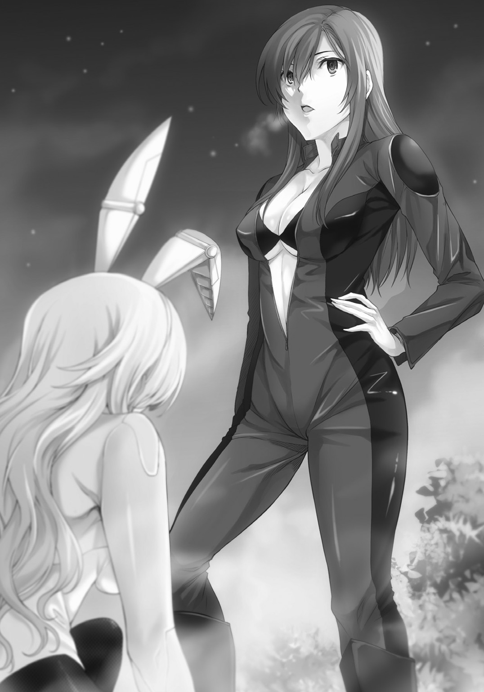

| イコライザー！ 3 | |
| 神野オキナ | |

この本は縦書きでレイアウトされています。
また、ご覧になる機種により、表示の差が認められることがあります。


 ダッシュエックス文庫DIGITAL
ダッシュエックス文庫DIGITAL
イコライザー！ ３
神野オキナ
○プロローグ：「不思議な夢」（by 石原裕次郎）
☆
「アワセ」
そっと彼女の手が頰に触れる。
唇が重なる。
それだけで泡瀬は満足だった。
手を繫ぐ、肩を寄せる。
ひとりではない、体温がそこにある。
風が吹き抜ける赤い草原。
クリスタルで出来ているかのように透けて見える草の葉がざわめく大地と、それを映しているかのように赤い空。
「あなたをここに連れてきたかったの」
そこはどこまでも続く広大な平原で、遥か彼方に、それでも巨大だと分かる規模の建物の廃墟が見えた。
「ここは、私の故郷があった場所」
白いドレスを翻し、尖った耳を持つ美女は、両手を広げてくるくると回る。
彼女は、とても大人で、自分よりももっと長い時間を生きているのに、時折こういう子供のような仕草が似合う。
そのことを言うと、彼女はにっこりと微笑んだ。
「私がそう見えるのは、あなたと恋をしてるからよ」
そのひと言だけで、泡瀬の胸は高鳴る。
「あなたのお蔭で、乾ききっていた私の心は潤いに満ちたの......あなたがいれば、もう何も要らない」
泡瀬はそのひと言を聞いただけで背中に甘い電流のようなものがはしり、彼女を抱きしめていた。
☆
「............」
瀬底泡瀬はまだ薄暗い部屋の中で目覚めた。
二〇×五年の日本。ここはパーシィことパスウィダーとよばれる時間旅行者の船「ロスティニア」ではなく、彼女自身が所属する組織「暁」によってあてがわれたマンションの自室。
二〇〇一年のニューヨークでの戦いから一週間近くが過ぎている。
時計を見るとまだ夜明け前の四時だった。
「......」
自分がとても素敵で、同時にとても後ろめたい夢を見ていた気がする。
でも、思い出せなかった。
「なんだろ......？」
空白の記憶を探ろうとしているうち、泡瀬は再び奇妙な睡魔に襲われて、そのままこてんとベッドの上に横になった。
微かな寝息をたてる泡瀬の表情は、最初無邪気なものだったが、次第に苦悩に歪んでいき、いつしかシーツを握りしめていた。
○第一話：「やさしい悪魔」（by キャンディーズ）
☆
一九四五年の凍る冬が、未だに続いているかのような春の最中、ドイツ第三帝国の首都、ベルリンは陥落しようとしていた。
貧しい前歴を隠すためヨシフ・スターリンと名前を変えた指導者の意を汲んだ政治将校に蹴り飛ばされるように、イワン・コーネフ元帥率いる第一ウクライナ方面軍の兵士たちは敵の首都へなだれ込んできたが、しかし勝ち戦の喜びに打ち震えてもいた。
一方、ついに首都にまで攻め込まれたドイツ軍は文字通り女や子供まで動員しての抵抗を続けていたが、それも空しい、戦争という溶鉱炉が人の死と弾薬とで十分煮えたぎったその中身をありったけぶちまけた最後の一滴、断末魔の火花に過ぎない。
そんなベルリンの地下に張り巡らされた下水道を、とあるロシアの分隊が進んでいる。
彼ら......いや、彼女たちには極秘任務が与えられていた。
この当時、ソヴィエト連邦と呼ばれた国の広大さを示すように、出身も人種も様々な彼女たちだったが、皆、一度スターリングラードという地獄の中で砕かれ、そこから這い上がってきた猛者という意味で、男たちと変わらぬ能力を持っている。
中でも、マーリカ・シュンダワという変わった姓の持ち主である、この分隊の隊長には、奇妙な幸運と、死をも恐れぬ強い精神力があり、事あらば「英雄」と呼ばれる人間の足を引っ張ることしか考えていない政治将校たちでさえ、一目置く部分があった。
マーリカは、敵から奪ったＭＰ‐40を握りしめ、真っ暗な中を迷いなく進む。
部下たちはヒメモグラの子供たちのように、その腰から伸びたロープに繫がって歩いていく。
酷い悪臭も、一カ月以上風呂に入っていない身には気にもならない。
分隊長殿は、まるで暗闇でも目が見えるかのようだ、と分隊の誰もが思い、なぜそこまで見ることが可能なのかと問う者もいたが、彼女は「猟師をやっていた祖父のおかげで夜目が利く」とだけ答えていた。
マーリカにとって、それ以上答えることは意味がなく、同時に危険なことでもあった。
彼女の、いつも髪の毛に隠れている右目が特殊な人工眼球で、赤外線投射や光増幅回路のおかげで本当に夜でも見通せたり、数キロ先の人間をズームできることや、緊急時には紫外線レーザーを発射することもできる、などと教えても、この時代、得になることはひとつもない。
腰に提がるホルスターに、ソヴィエト軍制式のナガンリボルバーではなく、一風変わった仕組みを持つアメリカ製のスタール社製リボルバーが入っていて、それが銃弾ではなく、雷撃を発射することを教えたほうが、よっぽど有益な情報だった。
彼女たちは朝から歩きづめで、ようやく目的地近くへたどり着いた。
「ここね」
マーリカは立ち止まると火縄ライターを懐から取りだし、点火した。
小さな光だが、それだけで分隊の仲間たちの間に安堵の溜息が拡がる。
彼女にとって、そのためのライターの火だった。
受動光量を調整された彼女の右目は、目の前に壁の仕掛けと、その向こう側に拡がる広大な通路をすでに透視している。
「少し、ここで待ってて」
ライターの火を分隊の副隊長に渡して、マーリカはもこもこに着ぶくれた毛皮の外套姿で、壁の仕掛けのスイッチを探し、壁を作る煉瓦のひとつを押し込んだ。
がりごりと重々しい音を立てて、機械式の扉が開く。
広大な空間から吹き付けてくる風が、一行の頰を打った。
ベルリンの地下にある通路は、それほどに大きく、広く、果ての見えないものだった。
「なるほど、確かにこの先なら『加工場』ぐらい作れるかもね」
呟いたマーリカに、
「分隊長」
声を殺して副隊長が話しかける。
「この先に？」
「政治将校たちの情報が間違ってなければね」
マーリカは腰の後ろにＭＰ‐40を回し、スタール・リボルバーを引き抜いた。
引き金を軽く引いて、撃鉄を起こして止める。
「先行してみるわ。三〇分経って戻らなかったら帰還して。その時は大急ぎでね」
微笑んで、マーリカは独特のデザインをした毛皮の帽子を深くかぶり直した。
「明かりの使用も許可します。アメリカ製の懐中電灯だから、きっと帰りは持つわ」
「分かりました、分隊長」
副長が敬礼し、残った部隊の仲間たちも敬礼する。
それに、照れた顔で軽く手を振ってマーリカは歩き出した。
「一万五千人の人間を使った『最終軍団』......この果てにあるのかしらね」
この二年ほど、ベルリン市民を含めたドイツ国民のかなりの数が行方不明になっており、それはすべて総統府の地下深くで、トゥーレ協会、と呼ばれるヒトラー専属のオカルト集団によって「なにか」と引き替えにされたのだ、というヨタ話は、よく聞かれることだった。
ヒトラーが引き替えにした「なにか」とは「最終軍団」と呼ばれる不死身の兵士、あるいは究極の兵器であるのだと。
アメリカが「マンハッタン計画」と呼ばれる秘密兵器の開発に成功したらしいと知ったスターリンは、アメリカが作る物ならばドイツにもあるはずだ、ならばヒトラーのラストバタリオンは同じものであろう、という直感のもと、彼女たちを派遣したのである。
もちろん、マーリカはドイツ軍が原子爆弾を作ることを断念したことを知っている。
彼女が危機感を抱いているのは、ヒトラーという人物の側に見え隠れする、とある「存在」の影だ。
トゥーレ協会の長はルドルフ・フォン・ゼボッテンドルフということになっているが、彼女はその裏側に別の「存在」を感じていた。
モスクワの大学を出、故郷に戻ってきて、義勇兵に参加する直前の三日間（とされ、マーリカにとっては数年にも及ぶ長い時間）、彼女は様々なものを見てきた。
その彼女の目からすれば、間違いなくトゥーレ協会を裏から操り、表向きは活動を停止した一九三七年以降も、ヒトラーやその腹心であるヒムラーＳＳ長官に対して影響を及ぼし続けている「存在」があることは明白だった。
それも、彼女の知っている歴史にはなかった「存在」が。
マーリカはゆっくりと歩きながら、銃を握り直しつつ、胸の内ポケットに手を入れた。
もしも、この奥にいるものが、自分の手に負えない「存在」であった場合、「彼女」を呼ぶ必要があるからだ。
「もしもの時は、頼むわよ、パーシィ」
闇の中、マーリカは口の中でそう呟いた。
☆
三日ぶりに、「ろすてぃに屋」が路地に戻ってきた。
「よし、ただいま！」
ドアを勢いよく開けるなりパーシィはそう声を上げながら大慌てで走り、近くのドーナツ屋でしこたまドーナツを買い込み、戻ってきた。
「では出発！」
パーシィがドアの向こうで叫ぶと、再び「ろすてぃに屋」はゆっくりと薄く、姿を消し始めた。
「ホントにドーナツ買うためだけに寄ったんだ」
あきれ顔の沙汰内類に、
「何を言う、あれいのドーナッツも絶品だが、君たちの時代のドーナッツも絶品なんだぞ？」
とパーシィは両手に抱えるような大きな袋一杯のドーナツを抱きしめた。
「いつの時代のドーナッツも、まあ美味いものではあるのだが。下手くそが作らない限りは」
「真実なのか、それとも単に食い意地が張ってるか分からないこと言って誤魔化してない？」
「まあ、五〇億光年かかるところへ、あんまり会いたくない奴のところに行くんだ、これぐらいのドーナッツがないとやってられない！」
「............」
「どうして私をそう疑わしい目で見る？」
「いや、本当に悪魔がいるのかなぁ、って」
「少なくとも地球人類が古代の昔から悪魔と呼ぶ存在はいるぞ。神はまだ自称以外見たことがないが......」
「そうなんだ？」
「神とはシステムのことだからな。人格があって、人間世界に口出ししてくるような『神』は間違いなく自称、だ」
「そういうもんかな......」
「例外はほぼないな............さて、進路セット完了！」
☆
そんなパーシィとタグルの会話を聞きながら、瀬底泡瀬はぼんやりとしていた。
「あの、泡瀬姉様？」
ひょこっとブリッジの入り口で立ち止まった元機会生命体で今はパーシィの重要なドーナツ供給係で、泡瀬たちにとっては食事やら掃除洗濯の面倒まで見てくれる重要なアシスタントでもある、あれいが声をかけた。
彼女はこれまでのフリル付きのドレスの上から、少々無骨なフード付きのＰコートを羽織っている。
「それ、このまえタグル君が作ってたやつ？」
「はい！」
こくん、とあれいは頷いて笑った。
彼女の着ているＰコートは、タグルが「ロスティニア」内にある工作装置を使って作った物だ。
ただのコートではなく、あれいが本来所属している種族「スウィムウェン」からの同調電波などを全て遮断し、彼女の居場所もスウィムウェンに捕捉させないための特殊繊維で出来ている。
「とっても素敵です！」
いつも外出できないあれいを気遣ってのプレゼントだ。
もっともパーシィは「とはいえ完全遮断できる保証はないからギリギリまで試すのは待ってくれ」と言っているのだが。
「どうかなさったんですか？」
あれいはふたたび泡瀬の顔をのぞき込んだ。
「いえ......なんでもないの、ちょっと最近よく眠れなくて」
言いながら泡瀬はふと自分が無意識のうちに唇に指先を触れさせていることに気づいて、慌てて手を下ろした。
二〇〇一年のニューヨークでの戦い以来、泡瀬は調子が出ない日々を過ごしている。
あの時、謎めいた金髪の美女にキスされて、そのまま眠らされるという大失態を犯したから、と思っていたがどうも何かが違う。
だが、どこがどう違うのか、自分で自分の不調を具体的な言葉にできないまま、数日が過ぎていた。
「あの、じゃあ今日からおやすみの前にハーブティーを追加しましょうか？ それともタマネギを切ったものを枕元に......」
「いえ、眠れることは眠れるの、ただ、何度か起きるようになってしまっただけで」
微笑みながら、泡瀬は非常事態以外はブリッジに立ち入ることを禁じられているあれいの頭を撫でた。
☆
「............さぁ、着いた」
そう言ってパーシィが「ろすてぃに屋」のドアを開けて外に出、タグルも後に続いた。
「............本当にここ、五〇億光年の彼方なの？」
「そうだが？」
「............どう見てもデキの悪いＳＦ映画のセットなんだけど？」
そこは五〇億光年の彼方、というパーシィの言葉からイメージされるものとは程遠い場所だった。
まず、小さい。
どう見てもそれは直径五〇メートルほどもない、丸いボールの上半分に紙粘土を貼り付けて適当に山やクレーターをつけたような代物だった。
さらに、その上に「悪魔」と表札に書かれた二階建てのプレハブ小屋が建っている。
タグルの「デキの悪いＳＦ映画のセット」というのはむしろ穏当な表現と言えた。
「............というか、これ、コント......」
と泡瀬が呟くのへ、
「断っておくが、ここに住んでる悪魔は来訪者にあわせて住んでいる場所の外観を瞬時に変更することができる。ここでは何も信じるな。やつは人を騙すのが大好きだからな。迷ったら『杖』を使え」
むすっとした表情でパーシィは告げた。
「ひどいこと言うわねえ」
タグルの背後から声がした。
「わ！」
思わず飛び退くタグルの背後に、黒いスーツに革手袋を塡めた、猫の耳と尻尾を生やした十二、三歳ぐらいの外見の少女が、いつの間にか立っていた。
慌てて泡瀬が銃を抜くが、愛くるしい金髪碧眼の少女は驚いた様子もなく、大人びた表情で口をへの字に曲げ、
「あたしはいつだって親切なだけよ。いつも言葉や行動の意味を深読みしすぎたりねじ曲げたりして勝手に滅ぶのは人間じゃないの」
「どうだかな。お前の悪戯は時折色々限度を過ぎている」
驚きもせず、パーシィは自分の「杖」を光らせて少女の上にかざした。
途端に少女の姿が半分霞のように消える。

「そんな......気配があるのに」
呆然とする泡瀬に「こいつはそういう生き物だ」とパーシィは告げ、
「こんな風に幻術で人の前に出てくるのがいい例だ」
と少女......悪魔に向かって眉をひそめた。
「単に生身で出迎えるのも面白くないから幻影を飛ばしただけよ」
気にする風もなく、少女は肩をすくめる。
「いちおう歓待してるつもりなのよ？ 嫌ならあんたが大嫌いな『ネ』のつく生き物の格好してくるわ」
「！」
悪魔と呼ばれた存在が「ネ」のつく生き物、と言った瞬間、確かにパーシィの顔が青ざめ、こわばったのをタグルは見た。
それはまるで、ホラー映画に出てくる殺され役の女優が、その寸前に浮かべるような表情だったが、パーシィはすぐにそれを打ち消し、
「だったら私の用件は知ってるな？」
「ま、とりあえず細かい情報まではまだチェックしてないから、あんたの口から聞かせてもらうわ」
そう言うと、幻影はパーシィの身体をすり抜け、背後にある安っぽいドアのノブを回して開けた。
「ささ、どーぞどーぞ、奥へ奥へ」
そう言ってにかっと笑う。
不思議なことにその笑みに邪気はなく、タグルは「ホントに悪魔なのかな？」と首を傾げた。
☆
プレハブの中はまるでマンションのショールームのように整然とし、広々とした清潔感溢れる部屋だった。
ただ、人（？）が生活していると分かるのは、壁一面に拡がる本棚のおかげだ。
文庫本から漫画本、大判の図鑑や百科事典、英語や他の言語で書かれた書物がずらりと並んでいる。
「うわ......」
その中に、自分が愛読している漫画の背表紙を見つけてタグルはぽかんと口を開けた。
「なんで悪魔が？」
「そりゃまあ、暇こいてるからねえ」
部屋の奥から、今目の前にいる悪魔とまるっきり同じ格好と顔かたちをした少女が現れ、重なると腰に手を当てて溜息をついた。
「でも、嬉しいもんではあるのよ」
そう言ってニッコリ笑う。
「地球誕生以来、五〇〇万年ぐらい前までは地球でアンタがたが『神』と呼ぶ存在の原型になる奴の助手みたいなことをして、せっせとアンタたち人類を育ててきたんだもの。これはいわば『収穫物』ってとこね」
「人の魂じゃなくて？」
「創作物は人の魂の、最も純粋な結晶よ？」
何言ってるの？ と不思議そうな顔で悪魔はタグルの顔をのぞき込んだ。
「まあ、あいつからネズ......じゃなかった齧歯類を捕まえて『これを知的生命体にまで進化させようと思う』って言われたときはどーしよーかと思ったけどねー」
「あいつ？」
「超越存在にまで進化した個体......えーと、大抵は『神』って呼ばれてるけどね」
「............今、さらっと進化論とか色々否定すること言わなかった？」
「タグル、そいつの言うことを真に受けてると最後には頭を撃ち抜くことになるぞ、千に三つ、本当のことがあればいいほうだ、忘れるな」
「............」
「なによー、傷つくわー。ちゃんとさっき、アンタに配慮して齧歯類って言ってやったのに」
唇を尖らせながら、悪魔は腕組みをした。
「そーいうことを言うなら教えてあげないわよ、なーんにも。じゃなきゃ、ここをネのつく齧歯類で埋め尽くそうか？」
その一瞬、パーシィの顔が文字通り引きつったのをタグルは見た。
ホラー映画のラスト、だめ押しの恐怖が押し寄せてきたときのヒロインが最後に叫ぶ寸前のような表情。
だが、パーシィは気丈にも頭を振って、不機嫌な顔に戻った。
「貴様には色々賃しがある。返してもらうぞ。悪魔には口頭契約でも有効だったよな？」
「............ったく、あたしが契約に弱いの知っててそういうことを振りかざすのねえ」
「当たり前だ、悪魔と取引しに来てるんだからな」
「......シリアスな駆け引きなのか、掛け合い漫才なのか分からなくなってきた」
ぽつんとタグルは本音を漏らし、泡瀬も思わず頷いた。
「では、教えろ。私の懸念は当たっているか？」
「やだ」
ぷいっと悪魔は横を向いた。
「教えたげない。そもそもあんたの懸念ってなーに？」
「お前はとっくに知ってるはずだろ、悪魔」
「さーねー」
「しらばっくれるのはやめろ。今の私はとても気が短い」
「じゃあ、あたしを殺す？」
「馬鹿言うな、とにかくさっさと教えろ！」
「自分の記憶に聞いてみなさいよ」
「うるさい、もう封印してあるんだ、知ってるくせにグダグダ言うな！ あんまりもったいぶると『ロスティニア』でこの辺一帯を因果地平まで吹き飛ばすぞ！」
「まあまあ、タイムマシン持ってる人間が、そんなに気の短いことを言うモンじゃないわよ――――で、ホントに封印しちゃったの？」
「私が封印を終えたときその場にいただろうが！」
「まーほら、人間思い込みによる記憶の修正はままあることじゃん？ あたしも封印したと思い込んでる可能性が」
「悪魔だろうが、お前は！」
パーシィが本気で怒る手前の苛立ちを見せているのに、悪魔はのらりくらりと微笑んでいるだけだ......次元が違う生き物なのかもしれないし、それほど気心が知れているのかもしれない。
ともあれ、今とんでもないことが起こる可能性はなさそうだった。
「......とりあえず、トイレ行きたいんだけど」
「ああ、男性用はそこの廊下の奥の突き当たりを右。左は女の子用」
「お前ひとりしかいないのに両方あるのか」
「そりゃ男の子が来るとわかりゃ作るわよ」
「変な仕掛けはしてないだろうな？」
「大丈夫、トイレのレバーを捻った瞬間に亜空間に放り出したりとか、トイレットペーパーが祈禱筒になってて、紙を使うだけで異世界の怪物を召喚したりとかしないから」
「............」
「あははは、じょーだんよ、冗談」
タグル、泡瀬、そして当然ながらパーシィの視線に、わざとらしい笑い声をあげながら、悪魔は頭を搔いた。
「では行ってこいタグル......こいつが変な悪さをしないか、私が見張っている」
タグルは廊下を出て、言われたとおりの道筋を通って用を済ませた。
「あれ？」
さっきまで板張りの廊下だったはずが、今は冷たく黒く輝く鋼鉄で覆われた戦艦の中のような通路になっている。
「............？」
「や、驚いた？」
振り向くと、悪魔がにっこりと笑っている。
「これ......どういうことですか？」
見かけは自分より遥かに年下だが、パーシィ同様、その見た目が当てにならないことはタグルも理解していたから、言葉遣いも丁寧になる。
「ほら、君ってあたしとパーシィの会話が理解出来ないっぽいから、説明しようと思って」
「......？」
「えーと、ここは今から二千年ぐらい前のドラゴンエルフの艦の中」
「ドラゴンエルフ？」
「今はもう存在しない種族。後世の人たちはアークエルフ、って呼んでるけどねー......ちなみに、ドラゴンエルフってのは彼らが一族をあげて次元龍を狩る種族ってところからきてるのよ」
「次元龍？」
「もうすぐ見られるわ......ほら」
悪魔が天井を見上げ、つられてタグルの視線もそこにいくと、いつの間にか天井は透明なガラスのようなドームになっていて、その上を巨大な翼を広げた「龍」が横切った。
巨大だ。
これまでタグルが見た中で一番巨大な生物は、沖縄の水族館で見たジンベイザメだが、そんなものは比べものにならない、文字通りの巨大な存在。
莫大な量の筋肉の上、びっしりと身体を覆う鋭いエッジの鱗、長い首、太く、力強い腕と脚、それらを全て統合したよりも力のありそうな長い尻尾。
だが、タグルにとって何よりも強烈だったのは、こちらを一瞥したときの目。
縦長の瞳孔といった爬虫類の構造ではなく、人の眼球と同じものが、しかし人類とは永久に感情を共有出来ないであろう冷厳さでこちらを見た。
「..................」
ぽかんと口を開けるタグル。
だが、同時に「これは幻影だ」ということも確信する。
目の前を過ぎ去った物が本物なら、今頃自分はおかしくなっているだろう。
「へえ、それなりにちゃんと修羅場くぐってるだけあって、今の風景が幻の一種ということは直感できるんだ」
出来のいい生徒を見つめる教師の顔で悪魔は笑った。
「これは......どこの記録なんですか？」
「まあ、いずれ分かるわよ」
「なんでこんなものを僕に？」
「あんたにはそれを知る必要があるわ。パーシィはこれ以上巻き込みたくないみたいだけど、もうあんたは踏み込んじゃったからねえ」
「......」
タグルはネコミミ尻尾付きの悪魔を見つめた。
「何も知らないでいるのと、知ってるのとでは、運命の選択肢も変わるしね......まあ、余計な説明はしないから、自分で考えなさい。まあ情報とかはＦＰＳの謎解きモードだと思ってあちこち触れてみたらいいわよ～♪」
そう言うと、手を振りながら悪魔の姿はゆっくりと床に沈んでいき、最後に残ったネコミミがぴくぴくっと動くと完全に消えた。
「自分で考えろって............」
首を捻るタグルの横顔を、今度は赤い警報の光が照らした。
「え？」
タグルはこれまでとは違う、かなり広い通路の真ん中にいて、廊下の両側に並んだ金属の扉が一斉にスライドし、中から驚くほどの美男美女の集団が飛び出してきた。
「わ！」
思わず飛び退こうとして間に合わないタグルの身体を彼らはすり抜けていく。
「そうか......幻なんだっけ」
身体にぴったりしたビザールなスーツを身に纏った男女は、一方向に向かって駆けていく。
タグルは彼らの後を追った。
☆
「お茶を淹れてきます」
泡瀬はタグルが席を立ってすぐ、そう言って後を追おうとした。
「んじゃ、そこの廊下をすぐ曲がって二番目の部屋ね。あたし紅茶、パーシィはコーヒーとドーナッツね」
「ど、ドーナッツ？」
「好物でしょ、用意しておいたわよ。ニューヨークの『アルバトロス』のドーナッツ」
「............誤魔化されんぞ」
「はいはい、まあ瀬底ちゃん、よろしくねー♪」
「あ、は、はい......」
泡瀬は慌てて給湯室へ向かう。
☆
暫くうろつき回り、あちこち触れてみると場所によって情報が提示されることが分かる。
そうなるとあとの理解は早い。
ここが次元龍と呼ばれる存在を狩るための戦闘艦の中であること、彼らは次元龍を狩ることで生計を立てるどころか種族社会全体の生活を支えている者たちであり、次元龍は放置しておくとあらゆる時間や空間に影響を及ぼし、そこに暮らす人々の災いになることも。
そして、その人々が暮らし、未来を作り、あるいは変えていくことによって生じる「可能性の残滓」こそが次元龍を生み出す源だということも。
「つまり、永遠の戦いってことか......」
そう呟いたタグルの横を、エルフではない耳を持った、真っ赤な髪の少女が駆け抜けていった。
「え......レッドさん？」
今は別の次元の日本にいるはずの、レッド・リーコン。
一瞬だけの横顔だが見間違いではない。
タグルは慌ててその後を追った。
悪魔がどうしてこんな所に自分を放り込んだのか、その理由があるはずだと直感したのである。
いつになく真剣で、どこか幼い雰囲気のレッド（女性型）は廊下を駆け抜け、タグルはその後を追って、広い部屋に出た。
いや、広いと言うより広大。
そこは果てしなく高い天井と、果てしなく遠いドーム状の壁で覆われた空間。
その空間のあちこちに、円盤状の床が浮かび、その上に忙しく人々が動き回り、機械を操作している。
艦橋だ。
タグルは直感した。
ここは戦艦か何かの指揮所だ。
そしてレッド・リーコンは「遅れました！」と声を張り上げながら自分の席に着いた。
彼女の席があるコンソール類にはすでに七人の男女が座り、慌ただしくシステムの調整を行っている。
「あれ......？」
リーコンの着いた席とそこから拡がるコンソール類にタグルは不思議な既視感を覚えて首を捻った。
いや、単なる気のせいではない。
自分はどこかでこれと同じものを見ている、と確信する。
「これ......ひょっとして......？」
両手の親指と人差し指で四角いフレームを作ってレッド・リーコンが座ったコンソール周辺を切り取ってみる。
そして、座っている人物を頭の中で消してみる。
間違いなかった。
これは「ロスティニア」の艦橋だ。
「諸君！」
不意に頭上から声が降ってきてタグルは驚いて振り仰いだ。
タグルのすぐ後ろの空中に浮かぶ円盤の上、鎧に似た白銀の装甲服と真紅のマントを身に纏った黒髪の女性が、細い剣を抜いて振りかざすのが見えた。
手にしたレイピアよりも鋭く、冷たく輝く美貌には、しかし同時に満ち足りた王者の気品があり、余裕すら感じられた。
真っ正面から向き合いたくはないが、その激励が届く範囲にはいたいと、誰もが思うようなカリスマの輝き。
「『黄金鱗』クラスの次元龍を見つけるのは一年ぶりだ、これ以上奴の意のままに世界を放置することは許されない、世界の為に、人々の為に、そして我々の為に、次元龍を今回も討ち果たそうぞ！」
その声に、一同が一斉に立ち上がった。
『我らの命、姫様の御為に！』
右の拳を左肩に当て、同時に唱和する。
その言葉に、タグルは記憶の奥で引っかかるものを感じた。
どこかで聞いた言葉だ。
そして、頭上にある円盤の主の顔が、見知った顔と重なる。
「パー......シィ？」
こけ、とタグルの頭が斜めになった。
☆
タグルが悪魔に案内されて過去の幻影の中に入ったばかりの頃、泡瀬は、言われた通りの場所にやってきた。
「うわ......」
驚くほど豪華なシンクと大きな冷蔵庫、それに彼女が写真でしか見たことがないような高級食器と数十種類もの紅茶やコーヒー豆の缶の並んだ食器棚。
「とりあえず......」
ガスコンロに火を点して浄水器付きの蛇口から出る水を入れた薬罐を置くと、泡瀬は首を捻りながら紅茶の缶とコーヒー豆の缶と睨めっこし、試しに手前にあるコーヒー豆の缶を開けた。
「豆轢きが要るわね」
呟いた泡瀬は自分が欲した物が目の前にあることに気がついた。
「......」
さっきまでそこにはコーヒーの缶しかなかったはずなのだが。
（まあ、考えてみれば悪魔の家......だものね）
おどろおどろしい言葉の響きからは想像もつかない、何となくかわいい妖精の家にいるような感覚だが、とりあえず納得して泡瀬はコーヒーミルを手に取ってシンクの上に置いた。
「あとはティーポットと......」
パーシィの好物のドーナツ、と周辺を見回した泡瀬は、一瞬、今自分が見ている風景に鋼でよろわれた通路が重なって見えた。
さらに、そこでポカンと立ち尽くすタグルの姿も。
「え？ た、タグル君？」
思わず一歩踏み出すと、そこは板張りの給湯室の床で、システムキッチンのシンクが目の前にある。
「......？」
ガスコンロの上、ケトルが沸騰するシュンシュンという音が聞こえていた。
泡瀬は上着のポケットに入れていた自分用の「杖」をとりだして操作しようとしたが、
「あー、それちょい待ち。そいつパーシィの杖にも連動してるから、今ばれると困るのよ」
と悪魔がいつの間にか隣に立っていた。
「一応、この辺一帯は時間結界を張ってあるから、時の流れから誤魔化されてるけど、パーシィの杖ってそこをすり抜けて反応するのよねぇ。あのアークエルフのお姫さま、確かに天与の才はあるのよね、困ったことに」
「！」
驚いて横に飛び退き、チアッパ・ライノ３５７マグナムを抜いて構える泡瀬に、ネコミミ尻尾付きの悪魔は片手を振って苦笑いした。
「あー、ダメダメ、そういうの。鉄砲で悪魔が死んだ事例はまだないんだから......悪いけど、ちょっとの間タグル君さ、あたしに預けてくんない？」
「何故？」
「何故って......まあ、あんたもそうだけど、あの子もパーシィも、もう下りることのできないゲームの上にいるの。だからタグル君にはきちんと前後の事情を理解してほしい、ってわけ......過去の記録を見せているだけだから、身体に害はないわよ、うん、保証する。悪魔が約束を守ることは知ってるでしょ？」
「でも、信用できない取引相手だってことも知ってるわ............タグル君になにをさせるつもりなの？」
「なにをするかは当人次第。パーシィはこういうとき全部自分で抱え込むアンフェアな部分があるから、そこをね、ちょっと均すだけ............あなたも、何を選ぶか、今のうちから考えておいた方がいいわ」
「......？」
「おっと、あなたはまだ時期が早いのか」
肩をすくめて悪魔の姿はすうっと透明になり、消えた。
「ともあれ、紅茶の方はオレンジペコー、コーヒーはアルトニア４号星のムニョル・ケサ・パーレイをよろしくねー♪」
声だけが響く。
ライノをホルスターに収めた泡瀬は、そのまま「杖」のスイッチを入れようとして、何故か戸惑った。
理性ではなく、直感が「やめた方がいい」と囁いている。
これまでの「暁」のメンバーとしての人生で直感に背いて上手くいったことはひとつもない。
だが、その直感さえ騙されているのかもしれない。
考えは堂々巡りになり、泡瀬はじっと「杖」を見つめたまま動けなくなった。
☆
パーシィこと「姫様」の率いる艦は瞬く間に次元龍を追い詰め、そして閃光と轟音、専門用語が飛び交う中、あっという間に骸に変えてしまった。
「............」
あまりの手際の良さに、ポカンとするタグルをよそに、艦橋内の人員はなおも忙しく動いて、次元龍の死骸の回収に大わらわだ。
あの次元龍を甲板の片隅に載せて解体出来るほど、この船は巨大だった。
満足げに頷いて細剣を鞘に収めた「姫様」はマントを翻して踵を返す。
すると主の意志に従うかのように、円盤から艦橋の壁まで、薄い金属の板がカチカチと伸びて、通路となる。
「姫様」はその上を歩いて壁に開いた出入り口から退出した。
タグルはその後を追おうとして、少し考える。
手を空中に伸ばし、パーシィが立っていた円盤に指先を向けた。
円盤の上に、小さく光り輝く矢印があった。
ちょん、とその矢印を叩くと身体はその円盤の上に乗っている。
「ホントに謎解きつきのＦＰＳみたいだなぁ」
呟いて、タグルは金属板で出来た通路を小走りに走って壁の向こう側へ足を踏み入れた。
間接照明で薄明るい、螺旋状の階段が下へと続く部屋。
吹き抜けで、三メートルほど下には天蓋付きのベッドが見える。
「降りたのかな？」
と目線を階段の方へ戻すと、とたんに、白いパーシィの背中が目に飛び込む。
「あ......」
驚いて足を止めるタグルの目の前で、パーシィは壁から伸びてきたアームに装甲服を除装させながらショーツ一枚のほぼ全裸になって降りていく。
以前、本当の意味で布一枚纏わぬパーシィの姿を（本来は見てはいけない部位まで）目にしたことはあるが、あれは戦闘時のドタバタの最中の「事故」とでもいうべきもので、ここまでじっくり見る余裕はなかった。
「綺麗だなぁ......」
思わず呟いて、タグルは慌てて背中を向けた。
「ふぅ......」
パーシィが溜息をついて、ベッドの上に寝転んだのか、スプリングが微かに軋む音が聞こえる。
大丈夫かと思って振り向いたが、彼女は紐で留めるショーツ一枚の姿で、ベッドの上に寝そべり、ごろりと転がるところだった。
あらわになったパンケーキ状の胸が、伸びやかな姿勢に合わせて形を変え、先端のピンク色がタグルの脳髄を抉る。
「！」
また背中を向けてドギマギしつつ、自分が戸惑う対象が単なる幻影に過ぎないのに、とタグルが気づくよりも前に、ドアがノックされた。
「レッドか、入れ」
緩やかにドアがスライドする音がして、人の入ってくる気配。
「姫様、なんとはしたないお姿を！」
「五月蠅いなあ、お前だって生き返りたての時はもっと破廉恥じゃないか」
「あれは不可抗力です！ 私の種族は再生時にはどうしてもフェロモンの過剰分泌と、再生時の余剰エネルギーで発情状態になってしまうのはご存知でしょう？」
「この前も大変だったそうじゃないか」
面白そうに笑う「姫様」に、レッドはタグルの知る人物とはまるで別人のように声を裏返らせた。
「ち、違います、あれはちゃんと......その、最後の一線は守っております！」
「なんだ、まだ処女か」
「あ、当たり前です！」
「私と違ってお前は自由なのだからもっと恋愛を楽しめばいいんだ」
「馬鹿を言わないでください姫様！」
どうやら遠い昔はこのふたり、言葉のやりとりの方向が真逆だったらしい。
「とりあえず、服を着けてくださいませ、そうでないと今日のドーナッツは差し上げませんよ！」
「............もう、しかたないなぁ」
変わらぬ部分もあるようだ。
やがて衣擦れの音がして、「はい、これでよろしいです」というレッドの言葉に安堵して、タグルはようやくパーシィのいる方を向くことができた。
「もう少し簡素な服はないのか、お前たちが着けてるような」
「姫様、もしもこの艦に敵が侵入したらそうしていただくこともあるでしょうが、平時において王族は王族の格好をしていただかないと」
「どうもこういう服はひらひらしていて苦手だ」
そう言って「姫様」は自分の纏った純白のフリルやレースがふんだんに使われたロングドレスの袖を迷惑そうに眺めた。
髪の毛はアップにまとめられている。
「さあ、お前の言うとおりドレスを着けたのだ、ドーナッツを寄越せ」
「はいはい」
頷いたレッドとパーシィの姿が、一時停止をかけたように止まった。
「？」
タグルは周囲を見回し、空間のあちこちに触れてみると、不意に風景が変わった。
業火の最中、赤々と照らし出されている通路。
倒れている人、人だったものの一部。
「！」
タグルは周囲を見回した。
壁と言わず天井と言わず、あちこちが破壊され、内部がむき出しになり、火花と炎が吹き出している。
空中に「環境再現値を低く設定しました、この幻影は安全です」の文字が浮かぶ。
「いったい、何が......」
胸を真っ赤に染めた、男の姿のレッド・リーコンが走っていくのを、タグルは視界の隅に捉えた。
タグルも後を追う。
手慣れてきたので、追いかけながら矢印が小さく光り輝いているレッドの背中に手を伸ばして軽く叩くようにすると、一瞬でパーシィの部屋に入っていた。
「姫様、ご無事で！」
飛び込んできたレッドを、天蓋と脚のひとつが壊れて斜めになったベッドの上、身体のあちこちをゼリー状の物質で包んだパーシィが迎えた。
「大丈夫だ、まさか戦闘指揮所に直撃を喰らうとは思わなかった、だが私よりもブリッジの皆は......」
そう言って辛そうに唇を嚙む。
「お前以外、生き残りは何名いる？」
「ブリッジ要員は十七名、戦闘指揮所の者は............五名のみです」
「艦の損傷は？」
「有り体に言えば、この艦を棄てるべきです、あの奇襲で艦の機能の七割が失われました。『ヴァル・ロスティニア』はもはや沈みゆくのみの運命です」
「だが、私には五万人の乗組員の命を預かる責任と使命がある」
「いえ、姫様」
レッドは一瞬言葉を区切り、それから深く息を吸って再び口を開いた。
「............現在、この艦の乗組員は一五〇〇人です。うち重傷者一〇〇〇名、負傷者二〇〇名」
「なん............だと？」
「ここは『ロスティニア』に生き残った人員を収容し、本国に帰還するべきです」
「だが『ヴァル・ロスティニア』は我らがアークエルフの最大の牙にして盾だ、本国には建造中の『ドラグナード』以外は............」
「姫様」
真っ直ぐにレッドはパーシィを見つめた。
「お忘れですか？ 我々を襲ってきたのは、次元龍と同化して形こそ変われど『ドラグナード』でございます」
「............」
ぎり、とパーシィの唇から音がした。
唇を嚙んでいた前歯がついに皮膚を破り、奥歯の鳴った音だ。
「分かっている！」
文字通り口から血を吐きながらパーシィは叫んだ。
「分かっているんだ！ あの子が、リーファが裏切った！ あの子専用の艦は、『ドラグナード』は、あの子なしで起動するはずはないのだから！」
「ならば、これから為すべきことはご存知のはず」
「............」
「姫様！」
「分かった、『ヴァル・ロスティニア』を放棄。生き残った者全員を『ロスティニア』に集め、本国に帰還する......」
「はい、姫様！」
あえて無表情で敬礼するレッドに、パーシィはがっくりとうなだれた。
タグルは彼女に関する情報がないかと周囲を見回したが、それらしい情報に通じそうな光の点滅も光る矢印も見つからなかった。
やがて、艦全体を重々しい震動が襲い、天井から埃や破損した部品類が落ちてくるのを、パーシィは避けようともせず、うなだれたまま受けていた。
「パーシィ............」
過去の幻影にもかかわらず、タグルが手を伸ばすと、その影はゆらりと揺らめいて消えた。
果てしない荒野が、タグルの前に拡がる。
真っ赤な荒野に、青い空が拡がり、白い月が冷たく浮かぶ。
そして見渡す限り、荒野の向こうに見えるのは破壊された都市の群れ。
金属同士がぶつかり合う音が響く。
振り向くと、銀色の装甲服を身に纏ったパーシィが、金色の装甲服と戦っている。
相手もパーシィも、よく似たなまめかしいボディラインを持ち、頭を完全に覆うヘルメットを被って、両手剣を持っていた。
（誰と戦ってるんだ？）
ふたりの動きは互角。
まるで鏡映しに戦っているかのように、両方とも殺気のありすぎる演武のように同じタイミングで同じ部位に、同じ速度で剣を振るっている。
それゆえ、ほぼ相手の身体の手前で打ち合い、離れてまた立ち上がるまでの間に同じようにまた剣を構える。
ひとつの実体を巡って光と影が打ち合うようだった。
だが一瞬、金色の相手が足を滑らせた。
パーシィが踏み込み、相手の頭を狙って下から顎を貫くように剣を突き出す。
金色の相手は身を捻りながらのけぞったが、切っ先はそのヘルメットの留め金を破壊して、空中に舞わせた。
そのまま一回転した金色の騎士の剣が、横殴りにパーシィの頭を狙う。
パーシィは逆に、踏みとどまると相手の威力が最大になる場所よりも踏み込んで頭突きをくれてやるような動きで、これを受けた。
こちらもヘルメットの留め金が砕け散り、銀の鎧から黒髪が流れ出て、パーシィの顔があらわになる。
金色の鎧からあふれ出たのは金色の髪。
平時であればパーシィよりも穏やかで、優しげであろうはずの顔は、怒りと憎悪にどす黒く染まっていた。
人の姿をした次元龍。
一瞬、タグルの脳裏にそんな言葉が浮かぶ。
「何故、皆を殺した、リーファ！」
吹きつける風の中、髪を振り乱し、こめかみから血を流しながらパーシィが叫んだ。
「必要だったのよ！」
リーファと呼ばれた美女が、喉から血が出るような声で叫んだ。
風向きのせいか、こちらの髪は風に吹かれて優雅にたなびき、天さえも彼女に味方しているかのように見えた。
「私は死にたくなかった！ 私が死ねば世界に意味はないもの！ 意味がある為には、必要な犠牲なのよ！」
「七億八千四百五十五万五千六百八十九人だ！」
パーシィのこんな厳しい顔を、タグルは見たことがなかった。
「七億八千四百五十五万五千六百八十九人だ！ 分かるか？ お前が次元龍と取引して、奪った命の数だ！」
「私が生きるための数をそろえただけよ！」
「父上や、お前の母上まで殺してか！」
「親は、子供のために死ぬのが当然でしょう？」
引きつった笑顔を、リーファと呼ばれた美女は浮かべた。
「姉様だけは、生かしてあげようと思ってたけど、もうやめたわ......あと二年で死ぬはずの私が永遠に生きていく様を、あの世で御照覧あれ！」
金髪の美女の眦が裂けてつり上がり、額がぱっくりと割れて、もう一つの金色の眼が現れる。
「これは......！」
「そう、『原初の次元龍』バルドスと融合した、これが私の力！」
額の金色の眼が動き、瞳孔がすぼまった瞬間、リーファと呼ばれた金色の装甲服の全身が本当に金色の光で包まれた。
剣にも光は渦を巻いて、より長く、鋭い刃物へと変形させていく。
それだけではなく、鎧の表面にもびっしりと鋭い菱形の鱗が生え、優雅なカーブを描きながらも、人工物であった装甲服が、まるで生物の一部のように波打ち、脈打ちはじめる。
「お前は............もう、リーファではない」
パーシィは、食いしばった歯の間から声を押し出した。
「お前は............次元龍だ、原初の次元龍の依代だ............愚か者め！」
「五月蠅いわ、姉様！」
かっ、と開いた口から金色の炎が溢れる。
「この金色の力！ これで、私は永遠に死から解放される、お姉様、最初にして最後の次元龍の、最初で最後の贄になって！」
そして、両者は走り出す。
☆
「............というわけで、私は貴様なら全部知っているだろうと思ってここに来たんだ」
泡瀬がお茶を淹れに行ってすぐ、パーシィは悪魔に食い下がった。
「私は奴を確かに殺したはずだ、それなのに、何故あちこちに奴の影がちらつく？」
「『時の調停者』が殺すとか物騒な言葉使っていいの？」
この前後一分ほどの間に、同時に様々なことをタグルと泡瀬に仕掛けていながら、悪魔は知らぬ顔をして話をはぐらかす。
と、パーシィの眉が片方つり上がった。
「貴様......」
同時にどこからともなく「杖」をとりだしてスイッチを入れる。
光り輝く杖の先端の色が変化した。
「タグルとアワセに何をした？」
「いや、別に何も......」
パーシィはぐいっと顔を悪魔に近づけた。
「噓をつけ、タグルはいまこの家の中に存在しながら意識は別の所にある、アワセは手に『杖』を持ったままだ、彼女が杖を弄ぶことなんかこの状況ではあり得ない............さぁ、なにをしてる、言わないとこの家を吹き飛ばすぞ！」
静かだが、絶対的な意志を秘めたパーシィの言葉に、悪魔は「やれやれ」と溜息混じりに肩をすくめた。
「仕方ないわねえ......ほれ」
ひょい、と空中に人差し指で円を描くと、呆然と立ち尽くすタグルと、自分用の「杖」を持った泡瀬がその場に現れた。
「あ、あれ？」
「御免ねー、タグル君。時間切れだわ」
と戸惑うタグルに両手を合わせて拝む仕草をした後、
「？？？？？」
と周囲を見回す泡瀬に、
「そういうわけで、お茶は要らなくなったわ」
と悪魔は微笑む。
「ふたりとも気にするな、こいつにとって時間と空間は机の上のコップや鉛筆と同じだ、ひょいと動かして位置を変えたり流れを変えたりは朝飯前だからな。狐や狸が人を化かすのと同じだ」
「いやー、何せ悪魔ですから」
頭を搔いて照れ笑いを浮かべる悪魔に、「褒めてない」とパーシィは「杖」の先端を振り下ろした。
ぱかーん、と気持ちのいい音がする。
「なにすんのよー！ 暴力反対！」
「私はいま急いでいる上に気が立っているのだ、これ以上答えないというのなら四、五発ほど殴ってさっさと帰る！」
「分かったわよ......色々あって、多くの情報は提示できないけど」
「なんでだ！」
「あたしの条項ＸＢの四〇六......情報を隠してはならない、だが未来を確定してもならないってやつ」
「............わかった、喋れ」
「あんたは確かに一〇〇年前のあの時、命を奪った。それは確定事項。未来永劫の真実」
「じゃあ今の状況はどういうことだ？」
「あんたは一番信じている者に裏切られた、ってこと」
「どういう意味だ？」
「それは自分で調べてちょうだい............あと、あたしが『彼女』ならあなたに関係深い人間をまず最初に狙うわ」
「私に関係の深い人間......レッドか？」
「あの子は強いし、今この時間軸にいないんでしょ？ ふたつの世界を行き来すれば、もっとハデになるわ」
「タグルもアワセもここにいるぞ......しまった、あれいか？」
「まあ、早いとこ安否確認することね」
じゃ、と悪魔は手を振り、気がつくとタグルたちは「ロスティニア」の中にいた。
「あれい！」
パーシィが叫ぶと、
「なんでしょう？」
ひょっこりと自分の部屋のドアからあれいが顔を出した。
「よかった......無事か、あれい！」
そう言ってパーシィはあれいを抱きしめた。
「はい？」
突然の抱擁に目を白黒させるあれいに、ほっとタグルは溜息をついた。
だが、その瞬間に三つの「杖」が光り輝き、音を鳴らし始めた。
「！」
パーシィがまたどこからともなく自分の「杖」をとりだして操作する。
「マーリカ、君か？」
『パーシィ？ 良かった、まだこれ使えるのね』
押し殺した女性の声。
「当たり前だ、私が作った物だぞ」
『ええ、そうだったわね......お願い、あなたじゃなければ駄目な事件がいま、ここで起きてるの、時間座標は分かる？』
「ああ、大丈夫だ......何があった？」
『銀色のバニーガールがナチと組んでベルリンの地下で何かしようとしているの！』
その言葉を聞いた瞬間、タグルと泡瀬は思わず顔を見合わせた。
☆
「おねがい、早く来て！」
言い終えるとマーリカは彼女に与えられた真っ赤な「杖」のスイッチを切った。
スタール・リボルバーを片手に、隠れた岩陰から向こう側を覗く。
ベルリンの地下に設けられた巨大な通路の奥は広大な空間になっていた。
ヒトラーが夢想し、彼に最も信頼を寄せられた建築家アルベルト・シュペーアでさえ「技術的にも財政的にも建造不可能」と結論を下した第三帝国の新首都ゲルマニア。
それがこのベルリンの地下に拡がっていた。
ベルリンの地盤はさほど頑健なものではない。
マーリカは先ほど「杖」をかざしてこの巨大建築物の群れが全て気が遠くなるほど巨大な大理石のムクで作られていることを知っていた。
全て白亜で統一され、道すらも白いのはそのためである。
僅かな照明でもキラキラと輝くその無人の新首都を、その白亜の煌めきに負けぬ銀色のバニーガールたちが整然と行進している。
彼女たちは全てこのゲルマニアの中心とヒトラーが定めた、半球状の天井の目立つフォルクスハレ（国民会議場）から現れ、大理石の街の隅々へと行進している。
その隊列は途切れることがない。
さらにマーリカは、国民会議場の建物の奥の防音施設から響く人々の悲鳴を「杖」の増幅能力で聞いていた。
「とにかく......急いで、パーシィ」
これはもう、ソヴィエトだの連合国だのという、この時代のいかなる軍隊であろうとあつかうべき問題ではない。
イコライザーのみが解決しうる問題だった。
○第二話：「ベストパートナー」（by ダ・カーポ）
☆
「甚だ遺憾だが、今回は最初から武装していく」
「ロスティニア」を発進させるなり、パーシィは艦橋で断言した。
「多分、奴らのことだからいずれ地球に戻ってくるとは思っていたが、まさか時間を越えてくるとは思わなかった」
「パーシィ、この前の事件の真相の追求はいいの？」
「......」
タグルの疑問に対して、パーシィは沈黙で答えた。
「つまり、この前の真相と、シルバニオンが昔のドイツにいるのは根っこが同じってこと？」
「......そういうことになる。タグル、アワセ、到着まで三〇分だ、今のうちに少し休め」
苦々しく言い捨てるようにして、パーシィはブリッジを離れた。
「......」
どことなくいつもと違って苦々しくも刺々しい雰囲気のパーシィに首を捻りながら、タグルは泡瀬と共にブリッジを離れ、「ロスティニア」内にあてがわれた自室へと引き上げる通路へ向かった。
☆
「あ、ちょっと待って泡瀬さん」
「た、タグル君、何？」
タグルに呼び止められて、瀬底泡瀬はドキッとしながら振り向いた。
好意を持っている少年に呼び止められたときめきからではない。
後ろめたい秘密を抱えたモノが怯える時に感じる類の感覚だった。
「最近、大丈夫？」
「え......？」
「その......ニューヨークから戻ってきてからずっと泡瀬さん、元気がないっていうか、どこかこう......身体の具合が良くない感じがして」
「............」
この騒動の中でも、彼が自分のことを案じるぐらい見ていてくれる、という嬉しさと同時に、申し訳なさが泡瀬の中に溢れる。
「だ、大丈夫、ちょっと疲れてるだけ......だから。しょ、書類の作成とかもあるし」
「ああ、そうか......確か筆書きなんだよね」
「え、ええ」
「このところあちこち行って大騒ぎだったものね......今回のことも悪魔、なんて出てきたわけだし」
頷くタグルを見て、泡瀬は罪悪感に胸を刺された。
実際にはこのところ、彼女は書類の作成は相棒であるカレンに任せ、自分自身は口述記録を残すばかりだ......ニューヨークでの出来事以前ですでに報告書類は膨大かつややこしいものになっており、今カレンは「暁」から与えられたマンションの一室で、精神統一のため全裸かつ鬼の形相で泡瀬のボイスレコーダーからのデータを元に毛筆を握っているはずだ。
だが、それだけではない。今の自分は書類仕事以外の何かから逃げている。あるいは意識せずに罪を犯している。
その思いがある。
だが、何から逃げているのかが分からない。
どんな罪を犯しているのか分からない。
いつものように書類仕事をこなそうとしても出来ないし、射撃訓練でさえ思うままにいかない。
頭の片隅に何かが引っかかっていて、それがわからない。
そのことを四六時中考えていて、ついぼうっとしてしまう。
そして、具体的な言葉に出来ないことだけに、誰にも相談が出来ないという矛盾まで抱え込んでいた。
「だ、だから心配......しないで」
そこで好意を持っている人物にもたれかかるということが信条的に出来ないのが、瀬底泡瀬という少女の持つ生真面目さだった。
「でも......その、きついことがあったら、いつでも遠慮なく言ってよ」
タグルは真っ直ぐな眼でうつむく泡瀬をのぞき込んだ。
「その......クラスメイトだし、仲間なわけ......だし」
「え、ええ......」
こっくりと頷き、タグルの心遣いが嬉しいのにそれに素直になれない自分と、自分が抱え込んでしまった「何か」への負担とその正体が分からない情けなさに、泡瀬は涙が出そうになった。
「あの、私......ちょっと向こうに着く前に準備があるから」
「あ、うん......じゃあ」
そう言って片手をあげて通路を引き上げていくタグルの姿が、何故か永遠にそのまま会えなくなるような寂寥感に包まれているように見え、泡瀬は慌てて頭を振った。
そうやって見れば、いつものタグルの後ろ姿で、寂寥感なんて、ない。
自分は本当にどうかしている。
だが、どうすればいいのか。
☆
「............」
自室に戻ったタグルは、ベッドの上に仰向けになって天井を見つめた。
パーシィも泡瀬も、自分に対して何かを隠している。
それも酷く深刻な何かを。
それを突き止めねば、と思う半面そこまでしていいのかという迷いもある。
他人が隠したがることは、触れてほしくないことで、そこまで踏み込む権利が自分にあるのかどうか。
だが、このまま見過ごしていい話でもないという直感がある。
かつてニューヨークで対決した「決闘士」がうらやんだ「戦士の魂」ほどではないにせよ、タグル自身はどんな局面でさえ自分の直感に素直にしたがった方が危険を避けられるということを学んでいた。
だが、直感は正しくても迷いは生じる。
まして、沙汰内タグルという少年は、普段から自分を主張して平然としていられる図太さをまだ持っていない。
（............とりあえず、このことが終わったら......いや、何とか折をみつけて二人から話を聞かないと）
こう決めるのがやっとだ。
そこが今のタグルという少年の限界であり、このことを後で彼自身が激しく後悔することになる。
☆
「............みなさん、どうなさったんでしょうね？」
パーシィのリクエストで揚げたてのプレーンドーナツを皿に盛り、残ったドーナツの材料で、こちらは丸めたボールドーナツを作りながら、機会生命体、スウィムウェンから独自進化した人工知性体・あれいは首を傾げた。
ここは「ロスティニア」内の調理室。
「『ロスティニア』さんはどう思いますか？」
『この現状に関して、基本発動案件４２３に該当するため、私に意見を述べることは禁止されています』
珍しく、「ロスティニア」のＡＩは言葉を濁した。
「なるほど............あなたはどう思います〈をやかた〉？」
目線を足下に下げると、身長五〇センチほどの、フード付きの貫頭衣を纏った〈をやかた〉はミトンを塡めたような手で「さて、わりらにはひとのこころのきび（機微）はわからないでしから」とミミズがのたうつような文字で書かれたプラカードを掲げた。
「私も正確な意味での人間ではないですしね――――」
なおも腕組みするあれいに〈をやかた〉は「やはりじかくするといしきはひとよりもきかいにしふとするでしか？」と随分哲学的なことを訊ねる。
「それはちょっと分からないんです。私自身、これまで特に変わった、というわけではないんですけれども、人間じゃない、と分かって納得出来たし、同時に少し楽になったのは事実ですね」
そう言ってあれいはにっこり笑った。
〈をやかた〉はフードをすっぽり被った頭でふかぶかと頷くと「そりわ、わりらのよーなものにとってはしぜんでけんこーてきなことでし。わりらはにんげんとはちがいまし、ゆえにそこにこそかちがあるのでし」とプラカードを掲げた。
そしてくるりとひっくりかえし「で、わりらのどーなつだまはそろそろできましか？」と訊ねた。
「あ、いけない、そろそろ油から下ろさないと焦げちゃう！」
慌ててあれいは煮えたぎる油の中に指を入れて、ひょいひょいとボールドーナツを引き上げた。
「間に合ったぁ......これも、人間だったらできないことですよね♪」
あれいの笑顔に、〈をやかた〉はこくこくと頷いた。
☆
三〇分後、タグルは肉体的にも精神的にもまだぎこちない気分で「ロスティニア」の薄暗い装甲服の部屋にいた。
まるで墓場のように主のいない装甲服が立ち並ぶ中、制服の上着を脱いで立っているタグルの身体に次々と装甲服が半透明になって「重なる」と、やがていくつかの鎧の部品が残り、最後に彼の頭をすっぽり覆うヘルメットが装着されて青い装甲服が完成した。
さらに空中にいくつかの武器が浮かび、以前も新宿で使ったことのある、円形のマガジンをストック部分に装着する対スウィムウェン用のアサルトライフルが降りてきた。
銃身部分から漏れる光は青と白の間で明滅している――――初戦以後、シルバニオンの防御シールドを突破する原子振動数を弾丸に与えるために調整されているのだ。
「終わったか、タグル」
振り向くと、赤い装甲服を着けた泡瀬と、本来の色の上から無造作に黒いペンキを塗りつけたような装甲服を纏ったパーシィの姿がある。
どちらも顔部分を覆うパーツを跳ね上げていた。
「あ、うん............その顔だけ開けるのってどうするの？」
「下手に知らない方がいい。これから行く所は銃弾飛び交う戦場だ。間違ってフェイスガードが開いたところへ弾が飛び込んできたら死ぬぞ。いちおう生きていれば装甲服の修復機能で直してはくれるが、即死はどうにもならん」
言いながら、パーシィの顔がフェイスガードで覆われた。
「............それはやだな」
一瞬、顔が痒くなったらどうしよう、と考えていたタグルだが、そのひと言で我慢することを決意する。
「............」
泡瀬はやはり浮かない顔であったが、こちらもフェイスガードが覆う。
全員、タグルと同じアサルトライフルを持っていた。
「時間の流れの関係で、マーリカの近くに降りられない。地下に何があるかも今は不明だ。三キロほど地上を移動して地下に入る............なんにせよ、シルバニオンはともかく、ロシアもといソヴィエト兵やドイツ兵に見つかって撃たれても反撃するな。ひたすら逃げろ」
パーシィは装塡した銃に安全装置をかけながら言った。
「彼らはいずれ死ぬ運命かもしれないが、我々に殺される運命ではない」
「............分かってる」
「............」
「泡瀬さん？」
「え？ あ、は、はい、了解しましたパスウィダー」
「............アワセ、大丈夫か？」
「いえ、大丈夫です」
一瞬、怪訝そうな気配がパーシィの装甲服から漏れたが、すぐに気を取り直し、
「とりあえず見つからないように姿を隠す。私の側から離れるな」
いつものようにどこからともなく「杖」をとりだして光らせた。
「では行くぞ............『ロスティニア』、ハッチを開けて我々を外に出せ」
『はい姫様』
一瞬周囲が眩く輝くと、三人はいつもの「ろすてぃに屋」のドアの前にいた。
「では最後の注意だ」
パーシィがドアノブを捻り、開ける。
途端に砲声と銃声、さらに兵士の怒号や悲鳴、命令を叫ぶ声がタグルの周囲を取り囲んだ。
ドアの向こうには瓦礫の山、そしてその間を駆け抜ける兵士の影がちらほらと見える。
空は曇天だったが、それは気象現象ではなく、上がる硝煙や炎と家屋だったものからぶすぶす立ち上る煙がそうさせているように思える不吉な黒さを持っていた。
「シルバニオン以外、何を見ても決して足を止めるな............どんな悲惨な出来事も、我々は干渉できない。撃たれても気にするな。我々の装甲服を貫通する銃弾も破壊する大砲も、この時代の武器には存在しない」
「............分かった」
タグルはぎこちなく頷いた。
「じゃあ、行くぞ............ふたりとも、走れ！」
☆
それから三キロ、タグルは無我夢中で走った。
装甲服の倍力機能で、急ぎ足程度の体力消耗しかしていないからこそ、三キロをもの凄い速度で疾走できた。
幸か不幸か、陥落直前のベルリンはすでに大勢は決した状況であり、幾つもの死体を見はしたが、あとは遠くに戦車を何両か見た程度で済んだ。
「こっちだ！」
とパーシィが示す地面に口を開けた大穴に飛び込み、十分ほど小休止して下水管の中を進む。
途中、ドイツ兵が銃口を向けたが、すぐに三人とも立ち止まったのと、明かりなしでも通常と変わらず視界を確保出来る装甲服の機能とパーシィの「杖」によって光学的に姿を消しているおかげもあって、彼は自分の神経が過敏になりすぎていると考えたらしく、大きな溜息をついて下水管の壁に背中を預け、目を閉じる。
「行くぞ」
そうパーシィに言われて、またタグルたちは歩き始めた。
ある程度まで離れるとまた走り出す。
やがて、不意に巨大な通路にさしかかった。
「ここか、マーリカが言ってたのは」
パーシィが立ち止まると、「杖」を使って中を確かめる。
「あの、ひとつ聞いていい？」
ここまでの一時間弱、ずっと黙っていたタグルがようやく口を開いた。
「マーリカさんってどういう人なの？」
「ロシア人だ。スターリン政権下のロシアの最初の女性軍人のひとりでな、私とはキスカトニカという異星人との絡みで知り合った。奴らラスプーチンを蘇らせてスターリンを暗殺し、ソヴィエトを自分たちのゴミ捨て場にしようとしててな――――まあ、色々あったんだ」
虫眼鏡を使って遺跡を観察する学者のように、「杖」をかざして通路の壁を調べながらパーシィが答える。
「君が持っているリボルバーの製作者で、私の相棒だった女性だ――――今はもう違うが」
その一瞬だけ、パーシィの声が曇った気がした。
「なんで辞めたの？」
「彼女は自分の人生に戻っただけのことだ。君もいずれそうする」
努めて冷静に本人は言ったつもりかもしれないが、タグルにはパーシィの声が拗ねた子供のように聞こえた。
（寂しいんだ）
そして、悲しかったのだろう――――そういえば、マーリカからの通信を受け取ったとき、驚きと同時にパーシィの顔に微かな喜びもあったと今になって気づく。
☆
闇の中を、暗視装置を使って一番後ろを守りながら進みつつ、泡瀬は奇妙な感覚に囚われていた。
今こうして周囲を警戒しながら、黙々と進む自分が、ふたりいるような感覚。
となりに、まるっきり同じ格好をし、同じことをしている自分がいるような。
周囲が闇に閉ざされているせいだろうか、それともこのところ自分につきまとっている奇妙な罪悪感や逃避感のためか。
単純にそれらのことがいつの間にか心理的な疲労として蓄積され、こういう奇怪な妄想に囚われてしまっているのかも。
とにかく、たまらない不安に心臓が摑まれているのは確かだ。
（どうして、こんな......）
頭を振ってそんな思いを何とか振り払い、泡瀬は走り続ける。
そして不意にパーシィが立ち止まり、広大な通路に「杖」をかざしてあれこれ調べ始めた。
どうやら、今回彼女たちを呼び寄せたのはパーシィの元相棒らしい。
タグルの表情も、パーシィの表情も分からないが、気配だけで言えば......、
「泡瀬」
誰かが耳元で囁いた。
後ろから伸びて抱きしめてくれる優しい白い腕。
肩に掛かる金色の長い髪。
それは温かくて、嬉しい存在で......。
「！」
思わず振り向いて銃口を向けるが、そこには虚無の闇が広がるばかりだ。
「............？」
頭を振って、泡瀬はフェイスガードを開けようかと思ったが、ここが下水道からさほど離れていない場所だということを思い出す。
この状態でフェイスガードを開ければ、間違いなく嘔吐する。
だから、目を閉じて、ゆっくり深呼吸をするに留めた。
瞼を上げた泡瀬の目の前に、ナチスドイツおなじみの逆鈎十字の腕章を着けたシルバニオンが拳を振り上げていた。
防御する余裕はなく、泡瀬はそのままトラックがぶつかったような衝撃と共に殴り飛ばされた。
☆
タグルの脳裏に一瞬、自分の横をすり抜けるようにして飛び、着地の瞬間、首から落ちて頸骨を折って死ぬ泡瀬の映像が浮かんだ。
身体が動く。
自分の横をすり抜ける瞬間の泡瀬に飛びつき、彼女を抱きしめて一緒に転がる。
「タグル！ アワセ！」
叫びながらパーシィがアサルトライフルを向ける。
「やめろ、これ以上......！」
シルバニオンに向け、警告を放つが、シルバニオンは次々と現れ殺到してくる。
稲妻のような閃光と轟音が響き渡り、通路を真っ白に染める。
真っ黒になったシルバニオンががっくりと倒れ、背後で彼女たち（？）を撃った者が現れた。
金色のショートヘア。前髪を伸ばして、片目を隠している。
もこもこと着ぶくれた軍隊コート姿に、今も昔も変わらない独特の形をしたソ連軍の防寒帽。
背は高く、パーシィと同じぐらいある。
「相変わらず、甘いのね」
声は澄んでいて、氷柱のように素っ気なかった。
「マーリカ、君はいつもいいタイミングで現れるな」
苦笑しながらパーシィがアサルトライフルを下ろす。
「遅いわよ」
彼女......マーリカもホルスターに古い形のリボルバーを収めた。
「これでも急いだんだ。この近くに『ロスティニア』が着陸できなくてな」
「絶対時間計は？」
「この時期のベルリンで反応があるわけはない」
「だとしたら歴史改変を狙ってないの？」
「分からない、かれらシルバニオンは人類であって人類じゃないからな」
「シルバニオンっていうの、あれ？ ノコギリやら溶接機やらで人の体を切り刻んで作ってるみたいだったけど、貴女との旅で見たことのない連中だったわ」
「新顔だ」
「なるほど」
「だ、大丈夫？ 泡瀬さん！」
抱きかかえた少女を必要以上に揺らしたりしないよう、細心の注意を払って少年は地面に横たえて話しかける。
「あ、う......」
声が漏れた。
タグルのフェイスガード内一杯に展開したＨＵＤに泡瀬が折れてはいないが、首関節の亜脱臼をしていることと、装甲服の修復保護機能が作用して、首を固定し、彼女の肉体の損傷を補い始めたことが表示される。
戦車に衝突されても、ここまでの被害は出ないような装甲服で、頭部の装甲はすでに治療装置以上の役割を喪失していた。
そのおかげで三〇秒ほど安静にしていれば、元の身体に戻る。
「アワセは大丈夫だ、タグル。今の銃声で奴らが来る、このまま進むぞ」
「でも」
「私がアワセを背負う、君はマーリカと共に周囲を警戒しろ......敵が来ると感じたら迷わず撃て」
「わ、わかった」
力仕事を女性にやらせるのはどうか、と一瞬思ったが、「戦士の魂」がある自分の方が、以前よりも能力を増した敵の襲来に対応出来る――――タグルはここのシルバニオンがあの瀬底泡瀬を一瞬で殴り飛ばした事実から、そう考えていた。
よもや彼女が己の不調に気をとられて不意打ちを食らったとは思いもしない。
だから緊張しつつ周囲を見張り、パーシィたちと離れないようにしながら前進する。
☆
「............来たわね、私の泡瀬」
闇の中で彼女は呟いた。
直径数十キロにも及ぶ大理石で出来た都の中心、そこに作られた巨大な闇の箱。
そこに据え置かれた、傷だらけの玉座に彼女は腰を下ろしていた。
「分かるのですが、我らが女王陛下」
それまで待機状態にあった赤銀のバニースーツを着けたシルバニオンが訊ねた。
「ええ、私と彼女は今遺伝子レベルで通じ合っているの............残念ながら、彼女にはそれがまだ理解出来ていないみたいだけど。でも、そろそろよ」
「では、パーシィたちの捕獲を急ぎますか？」
「結構よ。欲しいのは今回私の恋人だけ......お姉様たちの命はまた後でいい。あなたたちの生産具合はどう？」
「はい、ヒトラーが寄越したベルリン市民一万五千人のうち一万四千人をシルバニオン化しました」
「出来のいい時代の彼なら、絶対にしない取引だけど、今の彼は楽でいいわね」
「ソヴィエト軍を如何しましょう？ 彼らも我らの側に？」
「私たちが征服するのは未来よ。この時代じゃないわ。出航準備を整えなさい」
「は、承知いたしました」
その足下を、毛皮を銀メッキしたようなウサギがちょこまかと歩き回り、やがて、その姿が「彼女」の膝の上にひょいと飛び乗るや、てろりと溶けて収縮し、ウサギの横顔をディフォルメしたブローチに変わった。
「......」
小指の先ほどの大きさのそれを微笑みながらドレスの襟元に留め直し、彼女は呟いた。
「さぁ、今度こそ負けないわよ、姉様」
微笑みながら視線を暗闇の彼方に投げる。
そこには、小さな赤い光点が無数に蠢いていた。
☆
「聞こえる？ タグル君」
マーリカが喉元を摘むようにして話しかけてきた。
声を出そうとする筋肉の動きを拾って音声化するタイプのスロートマイクだ。
第二次世界大戦中のソヴィエト連邦においては未来の技術だが、技術史に詳しくないタグルには分からない。
まして彼女が着込んだコートの下、薄汚れた軍服から覗く首の表面にはそんなものはなく、皮膚の下に内蔵されているとは。
「あなたが、あたしの後釜ってわけか」
果てしなく長い通路を進みながら、白い大理石で出来たゲルマニアを目指しつつ説明を終え、マーリカが悪戯っぽい表情を浮かべてタグルに声をかけた。
「そういうことになるんでしょう......か」
さて、どんな人物か分からぬ以上、言葉を選ぶタグルに、マーリカはニヤリと笑った。
「緊張しなくってもいいわよ、私は嬉しいの。あなたみたいな人が私の後釜で」
「？」
「パーシィと私は似すぎてたから。どっちも理屈馬鹿で、プライド高くて、人に合わせるのが苦手で。自分の正義を疑わない」
「......」
今、フェイスガードが顔を覆っているのは幸いだ、とタグルは思った。
それぐらい戸惑った、奇妙な顔をしている自覚はある。
「ただ、私は寿命のある人間で、彼女はアークエルフ。どこかであの艦を下りる必要はあったの......それに、私はなんだかんだいって兵士だからね。パーシィみたいに最後まで話し合いをして命を危険にさらすことはできないわ」
「......」
どう答えればいいのか分からず、タグルが困惑の沈黙を守っていると、先行するパーシィが腕をあげて停止を命じて泡瀬を下ろした。
真っ暗闇のはずなのに、マーリカはタグルと同じように止まった。
「この暗闇の中で見えるんですか？」
「ええ。右目と心臓は生身のものより遥かに高性能なのをパーシィが作ってくれたの。初めて出会ったとき、私、スターリングラードで死にかけてたから。今でも身体の半分はパーシィが作ってくれた生体システムで出来てるわ」
「............？」
つまり、目の前の美女はサイボーグなのだ。
「ドイツ軍と戦ってるつもりが、破廉恥な格好をした少女みたいな姿のスウィムウェンって奴らが地下から現れて、殺されかけたの」
「スウィムウェン？」
「あなたも戦った？」
「ええ」
どうやらよっぽどあのスク水少女型機会生命体はパーシィと因縁が深いらしい。
「僕もその時に初めてパーシィと出会いました」
「そう......」
感慨深い表情になったマーリカだが「君は九時から十二時の方向を見張って」ときっちり指示を出した。
それに従って、タグルはアサルトライフルを構え直し、いつでも撃てるようにして周囲に気を配る。
泡瀬は意識を失っている不安な状況だが、マーリカの雰囲気は歴戦の勇士そのもので、自分の責任が半分になったような安堵感があった。
だから、会話を続けられる心の余裕ができる。
「でも、どうして艦を下りたんですか？ パーシィと喧嘩した......とか？」
「違うわ」
微苦笑を浮かべてマーリカは首を横に振った。
「私はね、自分の墓を見てしまったの」
「え？」
思わずタグルはマーリカのほうを見、慌てて自分の見張るべき方位に視線を戻した。
「二〇一五年、モスクワから列車で一日近く移動する所にある小さな村の墓地でね」
タグルは深く沈黙するしかなかった。
「私はスターリングラードを生き延びて、ベルリン制圧で勲章を貰った後、サンクトペテルブルグの近くにある村の小さな学校で教師をやって、その村に引退して五人の孫と、十一人のひ孫に囲まれて二〇一四年に死ぬ――――その時、ようやく分かったの。永久には生きられない。どこかで自分の人生に戻らなくちゃいけない、ってね」
「............」
「パーシィと一緒に旅をしている間は歳をとらないわ。でもそれは、冒険という名前のついた猶予期間なのよ。リップ・ヴァン・ウィンクル（※アメリカ版浦島太郎・ひと眠りしたら二〇年が経過し、自分も老いさらばえていたというおとぎ話）のようにならないうちに、いつかは戻らなくてはいけないの。自分の時間へ」
そうでなければ、と周囲に警戒を怠らないまま、マーリカは続けた。
「自分の時間からも切り離されて、時の狭間を彷徨うタイムトラベラーになるしかない。でも、自分の時間から切り離されれば、残された人たちは、あなたがいなくなって哀しみ続けるか、歳をとらないあなたの姿を歴史のあちこちに見つけて恐怖することになるわ」
「恐怖？」
「ええ。あなたはまだ若いから分からないかもしれないけれど、歳をとる、ということはとらない人間に対して複雑な感情が出てくるものなのよ」
「............」
タグルは思わず考え込みそうになって、慌てて頭を切り換えた。
いま、ここは危険地帯なのだ。うっかり考え込んで災厄を招くわけにはいかない。
☆
シルバニオンに不意打ちを食らい、首が亜脱臼状態になって、装甲服が自動治癒を開始すると、神経パルス麻酔によって泡瀬の意識は混濁し始めた。
多幸感が身体をじっくり包む。
「ああ、リーファ......」
不意に脳がこれまで聞いたこともない名前を口に上らせた。
だが、唇は神経パルス麻酔によって麻痺し、動かない。
泡瀬の脳裏には、端整な顔立ちをした、少し垂れ目の美女が、微笑みながら両手を広げていた。
脳内の泡瀬も手を広げ、彼女を抱擁する。
ふたりは互いの体温を確かめ合いながら、唇を重ね、そしてそれは泡瀬が知っているが覚えていない無数の記憶となってなだれ込んできて、彼女の全てを再構築し始めた。
それは、愛の記憶。
☆
瀬底泡瀬は「龍壱号案件」こと「イコライザー」パスウィダーの監視のために関東某県に派遣された。
表向きは学生を装って一般人に混じって生活をしつつ、いつ来るかもしれないパスウィダーを「念の為」待つという退屈極まりない仕事だ。
明日から始業式、という日。
通学路をチェックしてマンションの部屋に戻る途中の彼女の目の前に、金髪の美女が深手を負って空から落ちてきた。
思わず受け止めた瞬間から、泡瀬と彼女......リーファとの恋は始まっていた。
泡瀬は腕と太腿に深い傷を負った彼女の手に、見たこともない銃が握られていたことから、「暁」の監視対象かもしれないとマンションに彼女を匿い、傷の手当てをした。
翌日、彼女は小さな魔法の杖のような装置をとりだして自らの傷を癒やしたが、疲労は限界まで達していて、彼女はそのまま一週間昏々と眠り続けた。
泡瀬は相棒であるカレン・西中の警告を拝み倒すようにして無視し、学校を休んで彼女の看病につきっきりになった。
すでに一カ月が過ぎて、瀬底泡瀬は沙汰内タグルが未来を「見て」ちょっとした騒ぎを起こしたことも知らぬまま、また一カ月が過ぎた。
「ひょっとしたら龍壱号案件の関係者かもしれない」
魔法の杖のような装置と尖った耳を見せられて、カレンも納得するしかなかった。
その間に「暁」からリーファの遺伝子が人とほぼ同じだが、違う生き物のものであるという結果が出た。
結果を受け取った日の夜、学校が爆発し、スクール水着姿の少女の集団がマンションまで押しかけてきた。
カレン・西中は最初の一撃で身体を真っ二つにされて絶命。
目覚めた彼女と泡瀬は、必死に戦い、やがてスクール水着姿の少女の形をした機会生命体は急に機能を停止して戦いは終わった。
今度は泡瀬が重傷を負い、抱きかかえたリーファは、自分の生体エネルギーを口移しで泡瀬に与え、命を救った。
だが、泡瀬がそのことを知ったのは宇宙の果て。
「姉から逃げているの、殺されないために」
そうリーファは告げた。
それからどれくらい彼女と無限の時間と空間において冒険の旅を繰り広げたのだろう。
リーファは気まぐれな女神だった。
聡明で優しいが、時に泡瀬が思わず怒るほどの毒舌家であり、皮肉屋であり、冷徹な捻くれ者になった。
時と場合によって人に驚くほどの恩恵を与え、彼女の美意識に沿わぬものと巡り合えば罰を与える。
最初は神のごとく振る舞う彼女に反発し、真っ向から対立もしたが、やがて泡瀬はリーファの中にあるもろさに気づいた。
彼女の「罪」を知ったのもそのころだ。
リーファは泣きながら姉に命を狙われる理由を告白し、八億近い民を犠牲にしたことも洗いざらいぶちまけた。
「もう、ひとりは嫌」
初めてリーファは泡瀬の前で泣き、彼女にすがった。
「あなたにここにいてほしいの」と。
そして、泡瀬は自分が今まで生の感情をリーファにぶつけ、彼女の行うことを非難し、時に面罵しつつも別れることができなかった理由を知った。
愛していた。
そして初めて、愛しているからこその口づけを交わし、ふたりは恋人同士になった。
それからまた、果てしない旅が続いた。
リーファの傲慢さは泡瀬によって和らげられ、ふたりは行く先々で善行を施し、あるいは施そうと努力した。
だが、どれほど長い至福の時間も終わりは来る。
やがてリーファの姉......パスウィダーが彼女たちの前に現れた。
見覚えのある、クラスメイトの少年を引き連れて。
そしてリーファの故郷である赤い大地の上で、四人は戦った。
それぞれの信じるものと、愛のために。
泡瀬はリーファを殺しかけたタグルの心臓を撃ち抜き、泡瀬自身もまた、タグルの銃で心臓を射貫かれた。
それはほぼ同時の出来事。
最後に泡瀬が意識したのは自分を抱きかかえて号泣するリーファの顔、そして、その顔を優しく撫でることになんとか成功した自分の手と、そこから感じられる温かさで......。
あとは暗黒が彼女の意識を永遠にＯＦＦにした。
違う。
永遠など、ない。
あっては、ならない。
瀬底泡瀬の意識は、瀬底泡瀬の意識と融合し、彼女は目を開けた。
☆
「間違いない。奴らはベルリン中の人間をソ連人もドイツ人も問わずに全員シルバニオン化するつもりだ―――廃線になった地下鉄を使って全市内に通路が張り巡らされている」
「そういえば、この時期、ベルリン市内で一万五千人の市民が行方不明になってたわね」
マーリカが淡々と呟いた。
「ひょっとしたら、今のヒトラーのことだ、『最後の軍団』を作るとか言いくるめられて協力したのかもしれん」
「ありえるわね............だとしたら、私の部隊の任務は終了、というより最初からなかった訳か。先に帰して良かったわ」
「こっちは良くない」
大理石のナチの新首都を探るべく、わざと地下通路を遠回りしたパーシィは、泡瀬を通路の壁に寄りかからせ、壁を通して「杖」で調査していたが、表示窓を見て溜息混じりの声を出した。
「タグル、マーリカ。こいつはまずい。一度『ロスティニア』に引き返すぞ」
「どうしたの？」
タグルの問いに。
「グレート・シルバニオン・フォートレスだけだと思っていたが、あの大理石の街には、別の戦艦も近くに埋まってるからだ......対抗するには『ロスティニア』しかない」
「待ってよ、話し合いとかは？」
「ない」
パーシィの声は冷たく、即答だった。
「今回のことはシルバニオンが起こしたが、裏で糸を引いてるヤツがいる」
どこへともなく腕の一振りで「杖」を消し去ったパーシィは背中を向けたまま続ける。
「そいつは、もはや話し合いが出来るような奴ではない............いや、本来今生きているはずがない存在なんだ」
「............一体、誰なの？」
「私の......」
その瞬間、爆発と衝撃が全ての天地をひっくり返した。
全てが巨大なミキサーにかけられて、かき混ぜられ、砕かれて飲み込まれる。
下へ、下へ。
☆
「次弾装塡」
56口径88ミリの砲口から煙をあげ、白亜の大理石で出来たゲルマニアの建物のひとつから、ティーガーⅠ戦車がキャタピラの音も激しく現れる。
ほぼ中央に位置する中央会議場から、大理石を踏みつぶしつつ、街中を進む。
ハッチから顔を出しているのはシルバニオンだ。
戦車自体も、錆止めすら施されず............どころか、銀色にメッキされている。
独裁者の夢に終わった白亜の殿堂にはそれも相応しい。
「二発目を撃ち込みますか？」
砲塔ハッチから顔を出したシルバニオンの質問は、すぐに専用回線で答えが飛んできたようで、
「はい、間違いなく標的の半径五〇メートルは崩落しました。はい、ご指示通り我らが女王陛下の思い人は無事に逃げ延び、それ以外の生体、動体反応はありません......了解です」
頷いて、シルバニオンは砲塔の中に顔を向けて叫んだ。
「装塡！ 着弾点変わらず照準微調整......撃ーっ！」
声が終わるまでに照準の修正と装塡が終わるのは、中にいる装塡手もシルバニオンだからだろう。
かくて自動装塡装置を使った戦車並みの速さで主砲が火を噴いた。
☆
何がどうなったのかは分からない。
ただひとつ言えるのは、何とか今、生きているということだ。
タグルの意識が戻ったと判断したのか、システムが再復旧し、ディスプレイが起動。
暗視モードに切り替わった。
「水......の中？」
大きな池の水面が見える。
どうやら自分が水の中から顔だけ出した状態にあるとタグルは理解した。
「泡瀬さん！ パーシィ！ マーリカさん！」
叫ぶが通信応答はない、と表示が出るばかりだ。
「近くに誰かいないの？」
タグルの求めに応じて装甲服のＡＩが周辺一キロ圏内をスキャニング、同時に地形が分かる。
どうやらここは広大な地下水の「溜まり」になっているらしい。
先ほどの大爆発で天井部分が崩落し、タグルたちはこの「溜まり」を埋め立てる土砂となってここに落ちてきたのだろう。
浅いところは一五センチだが、最大深度は五メートル。
自分たちが立っていた場所が一〇メートルほど上だったから、どれほど元は深かったかが分かる。
右手二メートルほど先に、パーシィが沈んでいると表示が出た。
「パーシィ！」
叫んでタグルは水の中を進む。
ずぼん、と身体が沈み込んだ。
いきなり最大深度に放り込まれ、タグルは慌てたが、宇宙戦闘も可能な装甲服だったことを思い出し、じっくりと周囲を見渡す。
やがて装甲服はパーシィの装甲服の姿を映し出した。
このまま真っ直ぐ歩き続ければ最も浅いところまで歩いていける。
タグルはパーシィを抱きかかえ、足下に注意しながら何とか地下水の溜まりから上がった。
岸辺にパーシィの黒い装甲服を横たえる。
「パーシィ、パーシィ！」
テレビや映画の中のようにゆさぶりたくなるのを我慢し（こういう場合、下手に身体を揺さぶると脳や頸椎に重大な損傷を与えたりする、とタグルは自衛官である父から厳しく教えられていた）、手を握って声をかける。
どうやら中でパーシィは気を失っているらしく、生体反応の表示もそれを証明していた。
だが、装甲服は砲弾の直撃を受けたらしく、これ以上の装着は逆に脱げなくなる危険性がある、と判断され、治療終了と共に、装甲服の装着を解除されるという報告と、それまでのカウントダウンが表示された。
「そういえば、武器......」
見回すが、どこにもないと表示される。
あれだけの爆発と落下する土砂の中、生き残れたことが奇跡だ。
武器まで求めるのは図々しい願いだろう。
とにかく、今自分がするべきことは、少しでも乾いた場所にパーシィを移動させ、回復を待つことだ。
そのためには身体が濡れないようにし、体温を維持する必要がある。
「乾いた場所、乾いた場所......」
言いながら周辺を見回す。装甲服のＡＩが主が求めることを理解して各種センサーでスキャニングを開始した。
「あ、あった」
壁が薄くなっている場所があり、その向こう側に作りかけで放置された地下鉄の駅のようなものがある。
「このっ！」
拳を振りかざし、殴りつけると壁はあっさりと崩れた。
同時にその震動がこの空洞を揺さぶり、再崩落が始まることをセンサーが報告する。
大慌てでタグルは横たわったパーシィを抱きかかえ、崩れ落ちた壁の向こうへと、文字通り飛び込んだ。
頭から突っ込むわけにはいかず、ジャンプして足から滑り込む。
装甲服はそのまま老朽化して赤錆の浮いた鉄路を削り、火花を派手に上げながら十メートルほどスライディングする。
ほぼ同時に再崩落が始まり、タグルが自分たちの来た方向を見ると、土煙の彼方に膨大な量の土砂が見えた。
ここはまだ、天井が補強されているので安心できる。
やがて土砂の落下が終わり、もうもうと立ちこめていた土煙も収まった。
「ん............」
どうやら気絶から醒めたらしいパーシィが、タグルの腕の中で身じろぎした。
タグルは自分のＨＵＤに何かのカウントがゼロになったのを見た。
かしゅ、と圧縮空気が抜けるような音がパーシィの装甲服で連続して起こり、もはや最後の機能で彼女の身体の損傷を修復して役目を終えた装甲服が展開した。
「！」
パーシィの姿は、以前見た、黒い紐水着で、それは暗闇にもかかわらず、暗視機能のお蔭でくっきりと見えた。
「いや、あの、ごごごめん！」
慌てて横を向くタグルに、パーシィは起き上がりながら苦笑混じりの溜息をついた。
「どうやら装甲服は私の治療の為に着衣を除去したようだな......まあ、下着だけ残してくれただけでもよしとせねばならんが、どこかで布地を手に入れねばならんな」
彼女にとって紐一本でも身体を覆えば「全裸じゃないから恥ずかしくない」らしい。
「さて、途中放棄された地下鉄なら、セメント袋の一つぐらいはあるだろう」
そう言うと、彼女はいつものように「杖」をとりだした。
「とりあえず明かりが必............」
そう言って杖の先端を光らせたパーシィの背中が凍りついた。
パーシィが息を飲み込んだまま硬直しているとタグルが気づき、恥ずかしさを振り切って彼女のほうを向く。
暗視モードのバイザーシステムはパーシィの「杖」の先端の輝きに一瞬真っ白になったが、すぐに露出補正をかけたが、それ以前にタグルの直感が彼女の向いている方角に無数の気配を感じた。
何かが、いる。
ひとつ、ふたつというものではない。
数十、数百............いや、数千だ。
ちぃちぃ。
人によっては「可愛らしい」と表現し、地下深くではあまり聞きたくない鳴き声がゆっくりと広がり始めた。
闇の中、赤い光がふたつでひと組となってチカチカと点滅していく。
ネズミだ。
それが、タグルたちの行く手に千匹単位で存在していた。
「あ......あ......あ......」
ガクガクとパーシィが震えだす。
「パーシィ？」
どんな危険な状況でも皮肉な笑みを浮かべ、あるいは無表情に対峙するはずの少女が、全身を粟立たせて、明らかな恐怖の顔をぎくしゃくとタグルに向けた。
「あれ......あれ......」
「分かってる、こういう状況じゃ危険だよ......ね、ネズミは」
タグルはその瞬間の自分の言葉の最後の部分が、パーシィを決定的に追い詰めたと気づかなかった。
「ネズ............ネズ......ミ......」
瞳孔が拡がりきった眼で、パーシィは口をぱくぱくさせながらタグルの言葉を反芻しているようだったが、やがて。
「きゃああああああああああああ！」
廃駅の天井が砕けんばかりの大声を張り上げた。
○第三話：「まぼろしの人」（by 茶木みやこ）
☆
地下の廃駅となれば、食料は皆無のはずだ。
まして上では戦争の真っ最中。
近くではシルバニオンが人類改造に励んでいて、さっき砲撃があったばかり。
そんな場所で、銀色のパーツで頭部を覆い、光に反射して、ではなく自ら眼を光らせる怪しいネズミの集団ともなれば、タグルでなくても「危険な存在」と分かる。
それが数千匹、天井と言わず壁と言わず床と言わずびっしりとひしめいてた。
正確には鼠に天井に張り付いて動く能力はないから、やはりただのネズミではない。
タグルはパーシィの「杖」を構えたまま、動けなかった。
裸のパーシィは相変わらず叫び続けてるのに、彼らが動かなかったからだ。
やがて、パーシィは叫び続けた挙げ句、気を失った。
「ぱ、パーシィ？」
慌てるタグルだが、装甲服のモニタ機能は「叫びすぎて酸欠による一時気絶」と表示した。
『久しぶりだね、タグル・サタウチ』
くぐもった音声が響いた。
装甲服のセンサーが、目の前にいる鼠の群れの頭にある銀色の部品が共鳴して作った音だと判断する。
「君は............」
くぐもっていても声に聞き覚えがあった。
かつて、この声を持っていたのは、天才の頭脳と美しさを持つ少年だった。
母に恋い焦がれ、母そのものになり、母で世界を埋め尽くそうとした少年。
「プルキム・メルキオール・バニオン！」
『僕の声を覚えていてくれて嬉しいよ。この声を再現するのには苦労したからね............もう要らないと思ってアーカイブスから削除したんだ』
「なんでこんな所にいる？」
『決まっている。今ベルリン市内にいる全ての人類を我らの仲間にし、未来に帰還するための軍団を作るんだ―――君もどうだい？』
どうやら予想はだいたい当たっているらしい。
「だけど、もう君たちシルバニオンは人類の敵だ。帰っても戦争になるだけだぞ」
『構わないさ、僕らは全ての人類を一つにする崇高な使命を帯びている』
「なんのため？ スウィムウェンの脅威と戦うために？」
『違うよ。僕らの主のためにだ』
「シルバニオンに主がいるの？」
『いる。我らが女王陛下が世界をお望みなんだ』
「君のお母さんのこと？」
『ちがう............僕や、僕の母を生み出し、結びつけた偉大なるお方だ。そして君によって宇宙空間に放り出された僕たちを救ってくれた』
「彼女もシルバニオン？」
『バカを言うな。女王陛下は我らを率いるお方だ。我らと同じはずはない』
「？」
『君が首を捻るのも無理はない。女王陛下は時間と空間を超越し、運命を紡ぎだす絶対の存在だ。時空の龍の女王、アークエルフすらひれ伏す存在』
「なんで君がアークエルフの名前を知ってる？」
『当然だ。全て女王陛下が教えてくださった』
「............その、女王陛下ってパーシィの知り合いなの？」
『ある意味その通りであり、間違いでもある』
「もったいぶらないでよ」
『ともに育ったが、敵になった............不倶戴天の敵だ』
会話を続けながら、タグルは嫌な予感が背中をなで続けていると感じていた。
プルキム・メルキオール・バニオンも、シルバニオンも、望んで無駄話をする非効率さはない。
理由がある。
そしてタグルの直感は「逃げろ」と告げていた。
無数のネズミ、気絶したパーシィ、シルバニオンリーダーの無駄話。
位置の特定、足手まといで判断を鈍らせる存在、時間稼ぎ、と変換すれば、意図は明らかだ。
別働隊が迫ってきている。
「不倶戴天の敵？」
だからタグルは首を傾げ、思いっきり何も考えていない声でネズミの向こう側にいるプルキムに向けて語りかけた。
『そうだ、今は......』
だからタグルが最初にやったことは、「杖」の持つもう一つの機能を作動させることだった。
「ごめん、中断だ！」
一瞬だけ、「杖」の中にある全エネルギーを放出して機械関係をショートさせる裏技だ。
シルバニオンにはあまり効き目がなかったが、この銀色の頭を持つネズミたちには十分だったらしく、赤い目の光は次々と黄色い稲妻を放って、彼らは弾かれたように後ろへ飛ばされ、壁にたたきつけられると今度こそ動かなくなった。
「............」
ネズミで、しかも明らかに何者かの改造が施されているとはいえ、あまり気持ちのいい光景ではない。
それを横目で見ながら、タグルは気絶したパーシィを肩に担いで走った。
足の裏から嫌な感触が何度か伝わってきたが頑張って無視する。
走るだけ走り、駅の通路から封鎖された煉瓦の壁を「杖」のエアクッションで亀裂を入れ、蹴破って走る。
二駅分は走っただろうか。
どうやらこの路線自体を廃線にしたらしく、人の気配すら感じられない。
頭上での砲撃の音が遠くに聞こえる。
市民はともかく地上であれだけの激戦が繰り広げられているのに、逃げ込んでくる兵士の姿すらないということは、よほど厳重に封印したのだろうか......と思い、タグルは周囲を見回して、この路線の本来の意味を悟った。

奥に、山ほどのトランクが無造作に積まれていて、銃弾の跡や、血の跡が色濃く壁に残っていた。
マーリカもパーシィも、この時期、一万五千人のベルリン市民が行方不明になったと言っていた。
彼らは、この廃線になった駅に集められ、シルバニオンの製造装置へと送り込まれたのではないか。
ひょっとしたら死体で。
そう思うと、物言わぬトランクの山が、ぞっとするような気配を放っているように思えた。
「とりあえず、もう大丈夫だよ、パーシィ」
恐怖のあまり萎縮しそうになるが、タグルは深呼吸して、なんとか平静を取り戻し、肩に担いでいたパーシィを地面に下ろした。
だが、すぐに彼女はぴったりとタグルの腕にしがみつく。
「..................！」
パーシィはぎゅっと目を閉じ、歯を食いしばってタグルにしがみついたままガタガタ震えはじめた。
「パーシィ？」
「やー、やーなの......ネズミ、齧るの、かじられるの、いやぁ......しんじゃう、しんじゃうの、いやぁ......チィチイ鳴くの、こわいっ......！」
声をかけてもぎゅっとパーシィはタグルにしがみつくばかりだ。
どこからネズミが出てくるか怖がってる。
この世の生き物への「恐れ」というより古代の邪神に怯える無辜の民が感じる「畏れ」に近い。
（............弱ったなぁ）
いつも傲岸不遜でどこか偉そうで颯爽としているパーシィと同一人物とは思えないほど、彼女は怯えきっていた。
装甲服の動体センサーが、普通のネズミの気配を感知したのはその時だ。
位置は真上............と思った瞬間、天井から鼠が何匹か落ちてきた。
とっさにタグルは「杖」を奪って「障壁」モードを作動させたが、一瞬間に合わなかった。
「きゃああああああああああああ！」
パーシィの腕にネズミがぽとぽとと天井から落下して数匹まとわりついた瞬間、彼女の悲鳴は更に三オクターブ高くなった。
タグルは慌ててそのネズミを払い落とす。
銀色の頭をしていないネズミはそのまま闇の奥へ逃げていった。
「パーシィ、パーシィ、もう終わったよ。ネズミはいなくなったよ」
「杖」の光を消して、装甲服の暗視モードだけにしたタグルは、そう言ってパーシィの頭を撫で、何度も同じ言葉を繰り返した。
やがて、パーシィがおずおずと頭を上げる。
「............ほんと？」
涙の跡が顔に見えた。
「うん、もうみんないなくなった............一緒に行こう」
「うん」
こっくんと頷く彼女の姿はまるで子供だった。
（本当にネズミが苦手なんだな）
タグルの母親はゴキブリが大の苦手で、これほどではないが、前に住んでいた古い借家で五匹まとめて出てきたときに似たような反応を示したことがある。
タグルがスリッパであっさりと叩きつぶし、ゴミ箱にティッシュで包んで棄てたあとも、丸三日、台所に入ることなく、タグルと父は外食を余儀なくされた。
それ以来、ゴキブリ退治はタグルの仕事になった............今の新居に移ってからはそういうことはまだないが。
大の大人でも苦手なものは苦手、となれば数百歳のパーシィだって同じだろう。
タグルは彼らの残骸をなるべく踏まないようにして、ガタガタと震えるパーシィを「ほら」と背中におぶって、暗闇の中を歩き始めた。
これが装甲服なしだったら重さ以前に、直にパーシィの肌に触れるのでとてもできないだろうが、今は何とか気にせずにすむ。
トランクの山の中に、パーシィが着けられる衣類があるかもしれないが、それは死体から服を引きはがすのと同じ冒瀆の匂いがしてできなかった。
タグルは歩き続ける。
さらに二駅を越えたが、どこの駅も地上に出る道は分厚いコンクリートで封じられていた。
三駅目で、タグルは少々休むことにした―――いくら装甲服の倍力効果があるとはいえ、体力は消耗する。
駅名を見ると「第二クニー駅」とあるが、ベルリン市内のどの辺なのか、調べると、本来のクニー駅より大分離れていて、ここから地上に出られたとしても、「ロスティニア」までは一〇キロの距離がある。
もう少し安全な場所に出たかったが、ここの駅というか、路線は過去の記録にはない。
水が欲しかったが、水道すら見つからなかった―――最初からこの路線の駅は、人をシルバニオン改造に送り込むためだけに敷設されていたのだろう。
それよりも、落ち着いてくるとほぼ全裸のパーシィが気になって困る。
しかも幼児退行の状態のまま、彼女は地面に下ろしてもタグルの体にしがみついてくるのだ。
（弱ったなぁ......）
こんなところを泡瀬や他の関係者に見られるのはタグルにとってはもちろん、パーシィにとってもいいはずがない。
人間関係のみならず、何よりも廃駅だから清掃なんかされていないし、頭が銀色の装置に覆われているとはいえ、ネズミがいる環境が清潔なはずもないから、衛生的にも肌の露出が多く、靴も履いていない今のパーシィは危険だと言える。
それに蒸気精霊杖の他は武器らしい武器もない。
（『ロスティニア』が呼べればいいんだけど......）
シルバニオンがうろつくなかでそれをした場合、未だ行方の知れない瀬底泡瀬やマーリカがどうなるかが分からなかったし、艦が来られるのかどうかも不明だ。
（迂闊に通信機を使ったら、他の人たちも危険に巻き込むし......）
自力で辿り着かねばならない――――何しろここは敵地だ。
ドジを踏めば何が起こるかわからない――――いや、むしろ何もしない方が危険を招きかねない、とタグルは思い直した。
相手は全人類を自分たちと同じバニーガール型サイボーグに改造しようという思想で統一された連中なのだから。
じっと息を潜めて隠れていたら、自分たち以外の全てがシルバニオンに改造されて、周囲を取り囲まれている、ということだって起こりうる。
「まずはパーシィを何とかしなくちゃ」
自分にしがみつくアークエルフにして時間旅行者、いつでもどこでも自信に満ちあふれ、傲岸不遜が服を着て歩いているかのような少女は、すっかりベッドの下の闇に怯える幼子に逆戻りしていた。
一瞬、パーシィが本当に壊れてしまったのかも、とタグルは案じたが、彼女が自称する通りの長命を誇るアークエルフなら、こういう事態はこれまでもあったはずだ、と思い直す。
とはいえ、いつ回復するか分からないのは問題だった。
つまり、この場を切り抜けるまで、タグルが判断し、彼女を守り、逃げなければならない。
タグルはしみじみとこの場で唯一変わらず頼りになるもの......蒸気精霊杖を見つめた。
「人を正気に戻す裏技モードとかは、ないよねえ」
我ながら情けない考えだが、思わずそういうお助けモードがないかと期待してしまうぐらい、状況は難しい。
「ネズミ、いやぁ......ネズミ......こわいぃ......」
パーシィの弱々しい、別人のような声が胸をえぐる。
「大丈夫だよ、パーシィ、僕が護るからね」
そう言って抱き寄せると、彼女はぎゅっとますます腕に力を込めた。
身長的にタグルの顔はパーシィの胸に埋まるが、幸か不幸か、ヘルメット越しなので恥ずかしさよりも、タグルの中で彼女への痛々しさが増すばかりだ。
「とりあえず、靴でもブーツでもいいから、どこかに落ちてないかなぁ」
パーシィを抱きかかえるということは、両手か片腕が塞がるということだ。
警戒していても、敵が来たとき対応が遅れる。
出来れば非常時以外は自分で歩いてほしい。
周辺を見回すが、荒れ果てた建築途中の駅と、そこに続く通路や階段に、都合良くそういうものは落ちていなかった。
一枚だけ「四月一八日・新ワルシャワ駅に集合、脱出列車座席番号Ｄ‐42」と印刷された令状のようなものが落ちていた。
今日が四月二〇日だから二日前になる。
おそらく、一万五千人のベルリン市民はここで列車に乗せられ、シルバニオンの製造工場に送り込まれたのだろう。
やはり、あのトランクが山のように積まれた駅が「最終積み出し」の場所だったのだろうか―――かといって戻る気にはなれないことは変わらない。
水を混ぜていないセメントの粉が積もっている場所もあるが、セメント袋の切れ端さえ落ちていなかった。
その代わり、ここは床に積もった埃にうっすらと無数の靴底と小動物の足跡が残っている。
「杖」で計測すると、ネズミやゴキブリたちが跋扈し、布系の物はあらかた食べ尽くされたか、あとは出入り口が封鎖される前に、ドイツ軍がめぼしい物を持ち出したのだろう―――不法侵入者かもしれないが。
（そういえば、内戦してる国とか、そんな感じになるんだっけか）
自衛官であるタグルの父が、以前とある東欧諸国の内戦を扱ったテレビのドキュメンタリー番組を見ていると、珍しくそんなことを言っていたのを思い出す。
『負けがこんでくると目端の利く奴はまず食料、次に建材を持ち出すんだ――――どっちも戦争が終わると大量に必要になるからな』
滅多にテレビを見ていても何も言わない父の言葉だけによく覚えている。
では最後まで目端の利く奴が残すものは何か、と問うたタグルに、父が答えたものは......。
タグルの装甲服のセンサーが、近くにある倉庫に木箱がいくつか残っていると報告してきた。
再びパーシィを抱っこして、壊れた扉の中に入ると、細長い木箱がいくつか残っていた。
蓋を倍力機能と装甲で強化された指先でこじ開けてみる。
ベルト弾倉と機関銃が繊維状の梱包材の中に収まっていた。
当時の別名を「ヒトラーの電気ノコギリ」と呼ばれたラインメタル製ＭＧ‐34機関銃。
そして、人類史上初の歩兵用対戦車兵器とも呼ばれる携帯式対戦車擲弾発射器が四本。
「もうちょっと小さい銃がいいんだけどなぁ」
ぼやいてみたが贅沢は言えない。
「この銃の使い方って分かる？」
装甲服に搭載されている簡易ＡＩに訊ねると、あっという間にマニュアルと動画が出てきた。
「じゃ、パーシィ、少しの間ここで......」
と少女を下ろそうとすると、
「やー！ ねじゅみでる、やー！ はなれうの、やー！」
と彼女は長い髪を振り乱してタグルの首っ玉にかじりついてきた。
「弱ったなぁ......」
タグルはしみじみと溜息をついた。
とはいえ、幼児退行した彼女を責めるわけにはいかない。
数秒思案して、解決策はひとつしか思いつかなかった。
「ごめんね、パーシィ。ここで五分間じっとしてくれてたら、あとでドーナツあげるから」
我ながらアホみたいだ、と思いつつ言うと、
「ドーナッツ？」
と、パーシィの眼にほんの一ミリグラムほどの理性（？）が宿った。
「ホントにドーナッツくれる？ ホント？」
人間、惚けても壊れても、残るのは食欲と性欲と睡眠欲と言うが、本当かもしれない。
「うん、そうだよ。あとでちゃんとあげるから、ちょっと立っててくれる？」
バイト先で困った行動をする三歳児や酔っ払いを相手にする時のように頼むと、パーシィは「うん！」と頷いた。
とたんに無防備極まりないふたつの丘が前を隠していた髪の毛を押しのけるように激しく揺れて、慌ててタグルは眼を逸らす。
（見てない、見てない！）
その様子が、ふとこの時代からすれば未来のＮＹで出会った少女に被さる。
（そういえば、レライウェア、元気にしてるかなぁ？）
時間旅行者同士がすれ違うのは、意図しない限りは偶然にすぎない。
再び会えるかどうかはさらに分からないという。
「ドーナッツ、ドーナッツ♪」
歌まで歌い始めた。
（しかし、ほんとにドーナッツ中心に世界が回ってるんだなぁ）
半ば呆れ、半ば感心しながらタグルは地面にパーシィを降ろし、ＭＧ‐34の状態を確認し、ベルト弾倉を携行しやすいように同梱されていた円錐状の箱形弾倉に移す。
「えーと、こうして装塡して、セレクターがここで、引き金がここか......予備の銃身はいいか......」
カチャカチャと傍目には手慣れた兵士そのものの扱いでＭＧ‐34を発射状態にし、肩紐で吊るして装備した。
パンツァーファウストは念のため二本。パーシィに「ぜったに触らないで」と言い聞かせて腰の後ろの、本来は接近戦用兵器を装着するためのフックに通し差す。
「行くよ、パーシィ！」
言って、部屋の隅っこでつまらなさそうにこっちを眺めていたパーシィを手招きする。
中身は子供だが、身長は二〇センチ高い相手を抱っこするとＭＧ‐34は使えないので、再び背負うことにする。
「やだー、おしりにあたってつめたいー！」
横に差したパンツァーファウストの安全装置兼照準器がパーシィの脚の付け根に当たるらしくゴネるが、背負い直して何とかする。
「さてあとは、どうやってここから『ロスティニア』まで戻るか、だよなあ」
「杖」で調べると地上まで一〇メートル、「ロスティニア」の入り口まで五キロ。
いつもなら楽々の距離だが、今は酷く遠い。
「しっかり摑まってるんだよ？」
「うん！」
タグルはパーシィを背負ったまま、ひょいひょいとＭＧ‐34を構えてみた。
悪くはない。
傍から見ると滑稽極まりないかもしれないが、この際文句は言えなかった。
タグルは部屋を出ると、暫く歩いて隣の駅に繫がるはずだった壁を目指した。
二キロほど遠回りになるが、そこなら、パンツァーファウストか、装甲服の拳で突き破れるかもしれない。あとは駅の階段が地上まで続いているかどうか。
（しかし、なんだって奴らはこんな時代のドイツで自分たちを量産してるんだろう）
歩きながら暫くすると、緊張が多少ほぐれてきてタグルはそんなことを考える余裕が出てきた。
（そりゃ確かに戦争で死んでる人間は山ほどいるから、再利用は楽だろうけど......）
シルバニオンがいま、ここでしていることは歴史の改編ではなく、歴史の裏面に忍びこんで、自分たちの都合のいいようにしているだけだから、時間の修正力は及ばない。
が、何故二〇一七年の地球から数十万キロ彼方の宇宙へ放り出された彼らが、今この時代にいるのか。
戻ってくるための技術は例のシルバニオン製造装置、グレート・シルバニオン・フォートレスの残骸があれば何とかなるかもしれないが、時間を越える技術はそれらとは全く異なるものである。
（タイムマシンの理論って、まだ僕らの時代には出来てないはずなのに......）
そのことは新宿でシルバニオン相手の騒動が終わった後、パーシィに何度も（最後には彼女が怒りだし、ドーナツを使ってなだめねばならぬほど）確かめてある。
それとも、今このベルリンにいるシルバニオンたちは、数世代、あるいは数万世代を経た超未来の文明を持つに至ったシルバニオンなのかもしれない。
（いや、違うなあ）
タグルは首を捻った。
（だとしたら、どうして未だにあの格好なんだ？）
マーリカの話では、ゲルマニアの中枢にある総統府の中に設置されているらしいシルバニオン製造装置からはノコギリの音と溶接の音、さらに悲鳴も聞こえてきたという。
それらの音は、間違いなくタグルが二〇一七年の新宿で聞いたものだ。
つまり、未だにシルバニオンは最初のやり方のまま進化してないことになる。
数世代を経て、彼女らが増殖する方法をより効率化しない、ということがありうるだろうか？
（どう考えても、ないよね）
タグルはますます首を捻る。
パーシィが「裏で糸を引いている奴がいる」と言ったその相手が協力したのだろうか。
だとしたら、シルバニオンは歴史改変そのものを始めるのではないか。
その方が圧倒的に彼女らの理にかなう。
何しろ第二次世界大戦時ともなれば、彼らを阻める者はこの時代にいない。
エネルギーフィールドであらゆる物理攻撃を無効化する彼女たちに勝てる存在は、それこそ異星人ぐらいだろうし、シルバニオンは異星人を恐れたりはしない。
打ち倒し、全てを均しくするのが彼女たちの目的なのだから。
故にあらゆる協定も約束も、彼らはしないし守らないだろう。
となれば、協力者ではなく――――
装甲服の警告音がタグルを我に返らせた。
近くに「敵」と判じられた存在がいる。
データを参照すると案の定シルバニオンだった。
「タグー、どうしたのじゃ？」
不意に妙な言葉遣いと単語で背中のパーシィがタグルを呼んだ。
「え？」
「パーシィ今なんって言ったの？」
「パーシィとは誰じゃ？」
顔だけ振り向いたタグルに、背中の少女がきょとんと首を傾げた。
赤ちゃん言葉ではないから。どうやら舌っ足らずながら幼児から子供レベルにまでは回復しているらしい。
「わらわの名を忘れたか？ レライウェアじゃぞ？ そなたはタグーであろう？ 声で分かるぞ？」
「――――え？」
言われた瞬間、タグルはさっき自分が感じた既視感が、単なる感傷ではなく、レライウェアの面影がパーシィの中に残っていることからくるものだと悟った。
いつもの帽子や片眼鏡を着けていないこともあって、レライウェアの顔の特徴がいくつか、パーシィの顔に重なる。
特に――――あどけない眼と、口元が。
「そんな――――馬鹿な」
思わず呟いたが、今はそれどころではない。
相手はどこから入ったのか、通路を真っ直ぐこちらへ目がけてやってくる。
数は十五。ＭＧ‐34を使った対抗手段の当てはあるが、今ここで戦闘を繰り広げれば、他のシルバニオンも呼び出しかねない。
とはいえ、分岐する通路もなければ路地もない。
「引き返すか......？」
だが引き返しても行き止まりだ。
間違いなく、今ここに向かっているシルバニオンはタグルたちを追ってきている。
だとすれば、どちらにせよ見つけられる。
「タグー、どうしたのじゃ？」
きょとんとパーシィ。
「大丈夫、お姫様。ちょっと引き返そう」
どっちにせよ背中のパーシィ（レライウェア）のことを考えれば、引き返すべきなのだ。
今ここで戦えばそのままパーシィを巻き込む。
そして踵を返そうとしたタグルの視界の隅に、光が差し込んだ。
「？」
通路の向かって右手に四角い光が差し込んでいる。
やがて四角い光は細長い長方形になり、コンクリートで補強された壁にすっぱりとしたエッジの穴を開けた。
「ぱ、パーシィ？ こっちも？」
そこに立っていたのは、刃のないチェインソーのような機械を持って立っているパーシィだった。
こちらにはちゃんとコートも帽子も片眼鏡もある。
そして、優しく微笑んでいた。
「いったい......これ」
どういうこと、とタグルが言葉を言い終える前に、
「話は後。タグル、私を連れて一緒に来て。分子ジャッキで無理矢理道を作ったけど、かなりの距離を使ったから長くは持たないの」
「タグー、あの綺麗な女性は何者じゃ？ お前の恋人か？」
普段なら「冗談は後にしてよ」とツッコミのひとつも入れたくなる発言だが、今は状況が状況だから仕方がない。
「まあ、そんなところよ............はい、レライウェア姫、ドーナッツ」
微笑むと、パーシィは紙袋いっぱいに湯気を立てているドーナツを幼児退行したパーシィに手渡した。
「おお、なんという素晴らしさ！」
ＮＹの時と、そしていつもと同じようにドーナッツを前にしたときの満面の笑みで、パーシィはパーシィからドーナッツを受け取った。
☆
瀬底泡瀬は土の中で目覚めた。
装甲服の頭部部分は機能を失い、押し寄せる土砂の中に失われ、彼女が再び首に損傷を負わなかったのは奇跡と言ってもいい。
ついでに頭を両手で庇うようにして身体を丸めていたお蔭で、呼吸するスペースはあった。
彼女は無言のまま、少しずつ腕を動かして、空間を広げていった。装甲服の倍力機能は健在だったが、それでも数十トンの土の中で自在に動くには足りない。
だが、巧妙に彼女は身体を動かし、装甲服の拳で土を突き固めるようにしてゆっくりと地上へと昇っていった。
やがて、拳が何もない空間に突き出される。
空気が流れ込んできた。
泡瀬はそのまま泥だらけになって地上に這い出る。
「............」
暫く、荒い息をつきながら、彼女は周囲を見回した。
眼が一瞬、金色に光ったが、それを見とがめる者は半径数キロ以内にはいなかった。
やがて、彼女はとある気配を「見つけ」た。
☆
「――――ますます分からないよ、シルバニオンを従わせる奴って誰？」
白く、真っ直ぐな四角い通路を駆け抜け、出た先には戦車の部品が無造作に転がる整備場らしい場所だった。
ベルリン防衛の為に工場から真っ赤な錆止め塗装がされた程度のティーガー戦車のものが多いが、タグルには分からない。
夜が忍び寄り、薄暗くなったその建物の中で、もうひとりのパーシィは「暫く待って」と片手をあげて、息を整えた。
「スウィムウェンを従わせる奴よりは想像しやすい相手よ――――そっちの方は今回の件に関係ないけど」
「どういうこと？」
「その前に」
もうひとりのパーシィは立ち上がると、どこからともなく取り出した「杖」のひとふりで、空中に自分の着用しているのと同じ衣装を取り出した。
「どうやったの？」
「分子圧縮で杖に予備を入れるようにしてるの」
「じゃあ、この杖にも......」
「それには入ってないわ。こっちの私はあなたに裸を見られることが滅多にないと思ってるから」
「？」
さらに杖をひとふりすると、衣装はまるで意思ある生き物のようにくるりとタグルに背負われていたほうのパーシィの周りを回り、縫い目がばらけたと思った瞬間、パーシィの身体を包んでいた。
「今のは布から服を作る技の応用」
「すごいぞタグー、彼女はまるで母上のような霊子力を使う！」
「う、うん、まあ......凄いよね、うん」
すごいすごいを繰り返しながら、コートの裾を翻したりしてくるくる回るパーシィに安堵しながら、タグルは「で、どういうことか説明して」ともうひとりのパーシィに促した。
「そうね......まず、プルキム・メルキオール・バニオンを覚えてる？」
「うん。さっき話をしたよ――――シルバニオンの元を作って、自分もシルバニオンになった少年科学者」
「彼は通常の時間軸――――歴史書には書かれなかった存在のはずだったの」
「スウィムウェンのせいでこうなったんでしょ？」
「始まりは、ね............彼は本来なら、スウィムウェンに利用され、最後は殺されて歴史の表には出てこないはずの存在だったの。でも今は違う。
Ｐ・Ｍ・バニオンとしてウサマ・ビン・ラディンやヒトラーと並ぶような存在として記録されるようになるわ、人類に対しての大規模テロの主導者としてね。
そうなるように仕向けた人物が今回の一連の事件の本当の黒幕。そして」
と一旦、もうひとりのパーシィは言葉を切って、なおも自分の衣装を面白がってあれこれ摘んだり引っ張ったりしているパーシィを眺めた。
酷く疲れた、老婆のような眼だとタグルは思うが、彼女はすぐに快活な笑顔を一瞬だけ浮かべ、タグルに向き直った。
「今回の事件の元凶はすべて私の妹――――リーファが引き起こしたことなの」
「リーファ？」
その名前をタグルと同時に、幼児退行したほうのパーシィが口にした。
「何故、リーファを知って............」
言葉を言い終えることなく、くらっとめまいを起こしたように倒れるパーシィを、もうひとりのパーシィが抱き留めた。
「パーシィ！」
「大丈夫よ」
微笑みながらもうひとりのパーシィは、気絶したパーシィを地面に転がったままの戦車の砲塔の上にそっと寝かせた。
「いつまでも幼児退行した状態ではこまるから、ドーナッツに少しナノマシンを混ぜたのよ。目覚める頃には元の私に戻ってるわ」
「そんな――――」
その無茶な治療行為に怒るべきか、それとも感謝するべきかタグルは迷ったが、少なくとも礼を言う気にはなれなかった。
このパーシィは果たして何者なのか、さっぱり分からない故の警戒心もあるが、それ以前に彼女は当然のことを淡々と行っているだけ、という気もするからだ。
「............わかった、話を続けよう」
ともあれ、話を聞かないと何も分からない、これだけは事実。
「そのパーシィの妹が」
「私の、よ。正確には」
ともうひとりのパーシィはどこか冷たい声で訂正した。
「悪魔のところで見たでしょう？ 次元龍を狩るアークエルフの一族の戦いを、その悲惨な顚末を」
タグルは頷いた。
途中で打ち切られたが、あの悪魔は「それはタグルが見知っておくべき事実」だと言っていた。
「あれが私の――――レライウェアがＮＹであなたと別れて五〇〇年後、今から一〇〇年以上前の過去」
「次元龍を狩っていた時代から、壊滅するところまで随分『飛ばした』感じがしたけど......どうして？ それに、なんで次元龍を狩っていたの？」
「その間は、たまに次元龍を狩る以外は穏やかな日々が続いていたからよ。次元龍は時間と空間が流れていくことで生まれる矛盾と可能性の残滓が固まって生まれるもの。だから時が続く限り永遠に生まれ、永遠に私たちは狩りをし、時間と空間の平和を守ってきた」
次元龍によってアークエルフは文明を発展させ、維持し、アークエルフによって次元龍の脅威から時間と空間は守られていたのだ......あの壊滅の日までは。
「悲劇の種は七〇〇年前に蒔かれたの」
もうひとりのパーシィは語る。
☆
アークエルフの跡継ぎとして、ふたりの王女が生まれた。私と、妹のリーファ。
私は側室、リーファは正妃の娘として。
アークエルフは必ず第二子が王位を継いで内政を行い、第一子は戦士の長として前線に立って次元龍を狩り、内政には関わらない。
その頃の私は血気盛んで、冒険に憧れていたからそうなることは望みだった。
でも、妹は違った。
彼女は生まれつき病弱で、あなたたちヒト族で言えば十五歳、私たちにとっては四〇〇歳を過ぎるあたりから、ベッドで寝ている時間の方が増え始めた。
どうしてなのかは、分からない。
ありとあらゆる検査を行ったし、あらゆる時空から医者を呼んでみたけど、病名はおろか原因さえ突き止められなかった。
やがて、その名前が分かったとき私たちは絶望した。
「次元龍の呪い」と呼ばれる運命量子に関わる病気だったの。
寿命遺伝子ではなく、彼女の運命そのものを構成する量子要素が全て、アークエルフが成人と認められる八〇〇歳になる前に命が尽きるようにセッティングされていたわ。
時間と空間を永遠に駆け巡る私たちアークエルフにも、そのための代償が起こり、それは個人に、ではなく子孫の誰かにランダムで発生する。
逃れようのない死の病。
徐々に体力が衰えていくだけならともかく、それと同時に激痛が妹を襲うようになった。
量子レベルでの「設定」がそうなっている以上、あらゆる遺伝子治療も薬もそれを止めることは出来なかった。
全ての感覚神経を遮断したり、記憶と思考、意識だけをクローニングした別の身体に移そうともしたけど、どれも失敗だった。
量子レベルで操作された運命は、周囲にも及んでいたのよ。
無駄だと知りながら、私はそれでも時空を駆け巡り、次元龍を狩りながら、あちこちで妹の苦痛を止められそうな物を集めてきた。
――――結局、どれも無駄だったのだけど。
妹は何度も私に「殺してほしい」と言ったわ。
『骨も、神経も、五感も全てが焼かれ、引き裂かれ氷を詰め込まれるような痛みがひっきりなしに襲ってくる』と。
ベッドの上で常に激痛でのたうつ日々が続けば誰でもそう思う。
そして、私も何度かそうしてやったほうがいいと思ったけど............できなかった。
今は後悔してる。
私の母上はすでに妹が発病する前に亡くなっていて、残ったリーファの母上......正妃様と私は互いに励まし合いながら妹の看病をした。
父上も忙しい政務の間を縫って見舞いに来たわ。
でも、いつの間にか、私は父上である王の顔の中に秘密の匂いをかぎ取ってしまった。
父上は妹を、リーファを見舞った後、ひとり執務室で何かを思い詰めた表情で、同じ本の、同じページをじっと見つめていたの。
その時、量子情報化されていない本を、私は自分の国の中で初めて見たの。
あり得ない話だった。アークエルフの社会において機会と情報は常に平等に与えられるもので、どんな無益と思える情報でも秘匿することは罪だったから。
そして、アークエルフ最強の戦艦が就航した――――あなたもいたでしょう？ 「ヴァル・ロスティニア」............ロスティニアの剣、と呼ばれる艦――――今私が乗っている「ロスティニア」はあの艦のコア部分よ。
そしてもう一隻「ドラグナード」をコアにした拠点防衛艦「ガド・ロスティニア」――――ロスティニアの栄光、と名付けられた艦。こちらは国土を突発的な次元龍の襲来から守るために。
父が、じっと見ていたあの本を「ヴァル・ロスティニア」の艦長室に収めていると知ったのは処女航海に出たその日のうちだったわ。
そして私は知った。
その本が本当の歴史書だと。
妹の――――リーファの、運命に作用する病は病じゃなかった。
契約だったのよ。
「次元龍の呪い」は、次元龍が永遠に生まれては滅ぼされ、アークエルフが永遠にそれを狩るために私たちの祖先が作り上げたシステムの一部、安全装置だったの。
無数の時間と空間が存在し、流れていくことで生まれる様々な可能性の残滓を効率的に結晶化し、利用するために生み出されたのが「次元龍」という言葉と言霊、さらに言霊が力を持つように作られた巨大な霊子術式............でもそれは自然の摂理ではない。
だから、かならず矛盾が生じ、それがねじれを生む。
ねじれはシステムを破綻させる............だからねじれの解消が必要だった。
「次元龍の呪い」は、次元龍とそれを退治するアークエルフの伝説と生活を維持するための矛盾を解消するためのリセットボタンであり、緩衝装置。
王族の中で十七世代ごとにひとり、あらゆる運命を「死」に向けられた固体を生み出し、あり得ない形の死で生まれる消滅のエネルギーで、次元龍という、本来効率化できないはずの結晶存在を効率化することで生じる運命矛盾を調整し、利用し続ける............リーファは、種族のための生け贄だった。
そして、本にはもうひとつの事実が書かれていた。
私たちの一族は時間と空間の平和を守る正義の種族ではなく、何処の世界に属することもできないまま、永遠にその狭間を生き続けることを運命づけられた、はぐれ者の集団だったのよ。
それが、数百万年近い時間と、次元龍という悪役を使ったお芝居を続けることで、高貴なるアークエルフを名乗るようになった。
私が処女航海を中止する命令を下したのは、本を読み終えたその日の朝だった。
でも、遅かった。
父の本を私以外に読んだ者がもうひとりいたの......それも、私よりも数百年早く、私たちがまだ子供だった頃に。
リーファよ。
彼女は全てを、すでに知っていた。
そして、自分を犠牲にして生き延びようとする世界に、永遠に繰り返されるはずの三文芝居に、終止符を打ったのよ。
正当な復讐だったかもしれない、でも払われた犠牲は、決して許されるものではなかった
――――なぜなら、
☆
「なぜなら、それはロスティニアという国に住み暮らす、七億八千四百五十五万五千六百八十九人もの、国民の、王族の、全ての命だったからだ」
その言葉は、眠っていたはずのタグルと一緒に来たパーシィの口からもたらされた。
身体を起こした彼女の目に、もう幼女のあどけなさはない。
タグルは思い出す。
赤い荒野。互いに剣を振るって殺し合う金と銀の装甲服を纏ったパーシィともうひとり、金髪の美少女の姿を。
その時のパーシィも同じ数字を口にした。
『七億八千四百五十五万五千六百八十九人だ！ 分かるか？ お前が次元龍と取引して、奪った命の数だ！』
と。
「その通りよ、私」
戦車の車体にもたれかかり、疲れ切った表情でもうひとりのパーシィが頷いた。
「次元龍と、私の妹は幼いときに取引をしたの。次元龍は己を狩る運命と権利を一方的に持っているアークエルフたち一族の命を、リーファを通じて殆ど全てを奪い、引き替えに彼女にアークエルフが本来持つ以上の寿命............いえ永遠の命と、莫大な能力を」
「それだけじゃない、奴らは永遠にリーファの優しい心を奪っていった」
「殆ど全て、ってことは最後に見た時、生き残った一五〇〇かの乗員は生き残ったの？」
「いや」「いいえ」
ふたりのパーシィは同時に首を横に振った。
「生き残ったアークエルフはリーファと、その愚かな姉であるこの私だけ。それ以外では唯一、アークエルフではなく、不死身の身体を持つレッド・リーコンだけ」
「――――」
ようやくタグルは以前、レッド・リーコンが「我らが姫様のために！」というかけ声をパーシィが苦手にしていると言った理由を理解した。
あれいが「お姉様」と呼ぼうとしたとき止めた理由も。
☆
「............どうやら、なんとか凌げたみたいね」
自分用の銀の「杖」のスイッチを切りながら、マーリカは溜息をついた。
こちらもパーシィの「杖」と同じ機能があり、彼女は「障壁」の機能を使っていた。
空気の壁でカプセルを作り、自分の半径数メートルを覆うのである。
砲撃の数瞬前に、本能が彼女に「杖」を使わせた。
そして常に直感と本能は正しく、彼女は命拾いをした......戦場で生き残るなら当然のことだが、何度くぐり抜けても「当然」だとは思えない。
自分の死ぬ日時が決まっていて、そこまで生きているはずだと分かっていても、だ。
物事は終わりの辻褄が合えば過程はどうにでもなることがあるのを、マーリカはよく知っていた。
現に彼女が今祖国と呼び、彼女が亡くなる前に崩壊するソヴィエト連邦自体が、そういう産物なのだから。
「さて......」
落下する土砂の中、「エアクッション」も併用してダメージを受けることは避けられたが、その間彼女を包む球状の障壁が滝のような土砂の中を上に行ったのか横に行ったのか、それとも彼女自身の錯覚で本当は真下も真下、奈落の底に落っこちているのかはまだ分からない。
「酸素は土の中のを取り出せばいいとして......問題はここがどれくらい深いか、ね」
自分用の「杖」を光らせて、マーリカは自分の現在位置を特定した。
「何とか上には行けたみたい」
障壁を展開しながら、一瞬解除。周囲の土砂が彼女を押しつぶす前に一定方向に向かって空気を圧縮させ、解放する。
超特大の空気大砲そのものとなって、地上へ向かって彼女は飛び出した。
上手い具合に爪先から着地する。
「さて、これからどうしたモノかしらね」
溜息混じりに腰に手を当てて周囲を見回し、マーリカは溜息をついた。
幸い、外はすでに暗い、ベルリンに夜が来ていた。
すぐに瓦礫の陰に隠れ、彼女はスタール・リボルバーを握り直した。
気配を感じて振り向くと、銃口の先には装甲服を着けた瀬底泡瀬の姿があった。
「あなた、アワセって言ったっけ......タグル君やパーシィは？」
「知らないわ。必死でここまで這い出してきたの」
「装甲服はいいわね」
ホッと溜息をついて座ると、マーリカはコートの内側からタバコを取り出して、一本口にくわえた。
「大丈夫、火は点けないわよ......夜にタバコなんて、狙撃兵に狙ってくれと頼んでるようなモンだしね」
笑いながら、マーリカは崩れかけた建物の壁に背を預けた。
「あなたも座った方がいいわ。この時代、装甲服は中世の騎士が蘇ってきたみたいによく目立つし、みんな気が立ってるから見つかったら集中砲火よ」
「............ええ」
泡瀬は言われるがままにその側に腰を下ろす。
「で、あなたはあのタグル君の恋人？」
「......どうして、そういうことを聞くの？」
泡瀬は、無表情に問い返した。
「パーシィは恋愛してる顔じゃないし、彼があなたのことを気遣うのは、親密な関係だから、そしてあなたも彼も十代だ、となればそう推測するのは当然でしょ？」
「ふたりは、大丈夫かしら？」
泡瀬は無表情に話題を変えた。
「パーシィが一緒ならタグル君は大丈夫......というより、彼、さっきの砲撃の時、私より早く動いてたけど、『戦士の魂』でも持ってるの？」
「......ええ」
「なるほどね」
納得がいった、とマーリカは頷いた。
「それならわかるわ」
☆
「生き残った一五〇〇人はその後の戦闘で皆死んだ。私は生まれて初めて人を憎んだ。妹を許せなかった」
目覚めたばかりのパーシィはふらふらと立ち上がりながら、血を吐き出すような声で続ける。
「妹は私を愛してくれたから生かしてくれたんだろう......だが、そんなことはなんの免罪符にもならない。何故人を殺してはいけないか？ それは人がひとりでは生きていけないからだ。自分が自分である為には他者が必要で、社会が必要だからだ」
「非常事態においての、生き残る為の殺人は許されるという『カルネアデスの板』という考えもあるけれど......」
「知ってる、緊急避難のための殺人、だよね」
古代ギリシャの哲学者、カルネアデスが作った問題のことである。
難破した船があり、その小さな破片に辛うじて摑まって生き延びていた船員が、ふたり摑まれば沈んでしまうであろうそれに、摑まろうとした別の船員を殺した場合どうなるか。
多くの議論を重ねた結果、それは無罪であるとされたことから、「緊急避難」の概念としてよく引用される言葉だ。
タグルもそれは知っている。
「でも、七億もの命を奪うことは違うことだ。彼らは次元龍と我々の先祖の罪を知らなかった。知っていたのは父である王とこの私だ――――殺すなら、私と父上だけにしておけば良かったのだ、それならば、私は喜んで死んだ。実際処女航海を中止して戻ると決断したとき、私はその覚悟だった」
「でも、あの子は私たち以外の命を奪った。それも守りの船として作られた『ガド・ロスティニア』で.........リーファは表向きまだ廃位されていなかったから、彼女の命令を聞くようにシステムは調整されていた。式典で船に乗り込み、あとは乗っ取って全てを焼き払った............あの緑溢れるロスティニアが私が戻ったときは真っ赤な荒野に変わり果てていたわ――――あらゆる命を瞬時に奪う、ガンマバースト砲の一斉砲撃で、時空を彷徨うアークエルフの人工惑星に住む、七億八千四百五十五万五千六百八十九人の命は失われていた。その中には父上も、リーファの実の母上も含まれる。もちろん、友も、市民も、王族も、商人も、農民も、あらゆる人々が――――そして一五〇〇人の『ロスティニア』の乗員は、その後私が殺したの――――怒りに我を忘れて、復讐に固執してしまった私の命令で戦い、命を落とした」
「............」
タグルと共に来ていたパーシィは黙り込んだ。
「それでも私は戦った。炎の魔女になった。コアシップの『ドラグナード』に乗って逃げのびたあの子を追ってあらゆる時空を駆け抜け、あの子に味方するものを、事情を知るもの、知らぬものを問わず――――全て――――」
「殺した」
タグルと共に来たパーシィが血を吐くように続けた。
「殺し、殺して、リーファを追い詰めたんだ、私は。再び故郷のロスティニアへ、な。そして、一騎打ちで倒した――――いや、言葉を飾るのは良くない、殺したんだ」
「そう、そしてレライウェアの名前を棄て、幸せだった頃の記憶の概要を残して全て封印して、時の調停者になった――――そうすることが、自分の償いだと定めて」
タグルのパーシィはもうひとりのパーシィを睨みつけた。
「ひとつ聞こう。間違いなく私は止めを刺した。だというのに何故彼女の影がちらつく？ そして同じ時間の中、この近さで、同一存在は会話すらできない。どちらか先に着いたほうが眠り続け、先に着いた方が去るまで何もできないか、最初からこの時間にたどり着くことを許されないはずだ――――何故、君と私は会話ができる？」
パーシィは自分の「杖」を取り出すと、もうひとりの自分へとかざし、分析光を輝かせた。
「――――不可思議なことに君は私そっくりに作られたアンドロイドや他の時間軸から投影された立体映像でもない。君は生身でかつ寸分違わぬ私だ。なぜだ？」
パーシィは不審な目をもうひとりの自分へ向けた。
「気になることはもう一つある。私はそんな昏い眼をしてない。そんな優しい言葉遣いはしない。私は妹を手にかけた。罪の色は常にあるが、君の目はそれだけじゃない罪の色がある」
「そうかもね」
もうひとりのパーシィは少し拗ねたような顔になった。
「でも今のあなたの目も、私とよく似てるわよ――――思い出したでしょう？ 自分が封印した記憶を。妹を――――リーファをその手にかけた後、前に進むために、贖罪のために、故郷で、次元龍を狩るための時空船団で過ごした日々、そこで出会った人々の記憶、皆がまだ生きていた頃の記憶。子供の頃、リーファにお話を作ってあげたときの記憶、次のお話を、とせがまれて、自分が体験した話をアレンジしようと思って、ロスティニアの城を抜けだして、ニューヨークという聞き慣れない街で冒険した記憶――――そして――――」
「『兎のタグー』」
ふたりの声は重なった。
「君は、未来の私なのか？ そして、私たちに何をさせたいんだ、何が正しい選択だと言いたいんだ？」
「未来でもあり、過去でもあるわ......でも、間違いなく言えることがある」
「？」
「今のあなたは幸せなのよ」
「............どういう意味だ」
「文字通りの意味。あなたの隣にはタグル......君がいる。愛しい人が」
「な......」
パーシィの顔が真っ赤に染まった。
「な、何を誤解してる！ わわわ私はそんな感情など抱いてない！ 第一タグルはアワセとラブラブだ、キスオブファイヤーなんだぞ！」
「いや、き、キスまでは......っていうか手だってまだ繫いでないよ！」
「そ、そんなことはどうでもいい！ とにかく、私とタグルに相棒以上の関係はない、ないったらない！」
「でも、彼は............『兎のタグー』なのよ？」
「そそそそれは、それは確かにそうだ、『兎のタグー』は私の初恋だ！」
「え!?」
驚いてタグルはパーシィを見た。
「ご、ごごごご誤解するなタグル！ 六〇〇年近く昔のことだ！ 子供時代のことだ！ ふ、普通だろう？ 見も知らぬ土地で命を救ってくれた相手に子供が憧れに近い恋心を抱くのは！ あの時、君は私にとってヒーローだったんだ！」
「あ、いやあの......」
戸惑ってしどろもどろになるタグルをよそに、パーシィは〝きっと〟もうひとりの自分を睨みつけた。
「いったい君は誰だ!?」
「見て、調べたでしょ？ その通りの存在よ」
「答えになってない！ 私に隠している情報があるだろう！」
「ええ、でも教えてあげない」
もうひとりのパーシィはそう言って笑った。
酷く寂しそうな笑みだった。
「あなたが羨ましいから」
☆
「............さて、一時間経ったけど、敵にも味方にも動きはなし、ね」
腕時計を見ず、マーリカはくわえていた火のついていないタバコを箱に戻して立ち上がった。
「よく分かるわね」
「よく出来た義眼でね。暗闇でも見えるし、『杖』と連動して色々分かるし、時計にもなる............この時代のソヴィエト軍の腕時計は粗悪品が多くてね、これも停まってるのよ」
「どうするの？」
「引き上げよ」
素っ気なくマーリカは言った。
「ここは私が生きている時代――――だからあとはパーシィとあなたたちに任せて、私の人生に戻るの―――悪く思わないでね。私には私の部隊の仲間たちを生き残らせる義務があるから」
「そう」
泡瀬はマーリカに見えないようにさりげなく背中に回していた装甲服の右手に仕込まれた塹壕作業用の分厚い身幅のナイフを滑り出すべく思考命令を下していた。
彼女の思考で「出ろ」と言った瞬間、掌の内側に装備されていたナイフが飛び出す。
狙うのはもこもこした外套に覆われていない口の中。
前歯を砕き、そのまま奥に突き刺せば頸椎を切断できる。
その計画を立てながら、泡瀬はタグルと一緒にいるときと同じく、穏やかな笑みを浮かべていた。
「お別れね」
立ち上がり、さりげなく握手のために手を差し出す。
次の瞬間、雷撃が泡瀬の身体を覆った。
廃墟の壁に泡瀬の装甲服のシルエットが一瞬浮かび、消える。
装甲服は機能停止し、どう、と横倒しになった泡瀬を見下ろし、マーリカは冷たく、
「パーシィと別れることにしたのは、私がこういう直感にしたがって行動することに躊躇がない、というのもあるのよね............よく怒られたわ『君はすぐに人を撃ちたがる』って」
手に握られたスタール・リボルバー型雷撃銃の銃口から、余剰エネルギーの青白い、小さな火花と電荷イオンの煙が立ち上るのをそのままに油断なく泡瀬に向ける。
「もうちょっと疲れていたら、あなたの殺意に気づかなかったかもね............でも、笑顔はやり過ぎ、あなたのようなプロが、恋人と一緒にいるときの猫被りの笑顔をしては駄目よ」
そして、
「さて、さっきまで普通だったあなたがどうして私の命を狙うようになったのか、あなたが何になり果てたか、あるいは何かの生物に寄生されでもしたのか、話をじっくり聞きたいところだけど」
言ったマーリカの足下に銃弾が炸裂した。
奇しくもそれはタグルが地下で見つけたのと同じＭＧ‐34の布を引き裂くような銃声だった。
すでに彼女の身は寄りかかっていた壁の向こう側に消えている。
「今回はやめておくわ......ただ、パーシィたちにこれ以上何かしたら、私が許さない............それと、しばらく死んだふりしてなさい。動いたら殺されるわよ。その装甲服でも、ＫＶ戦車の主砲を三〇発は防げないでしょ？」
声の後半はかなり遠くになり、銃弾の炸裂する音と銃声にかき消されていたが、泡瀬の耳には届いていた。
銃撃はマーリカを追いかけていき、駆け抜けていくドイツの兵士たちは足下で転がり身動きすらしない泡瀬を一顧だにしなかった。
やがて人の気配も銃声も夜の闇に消えて、聞こえなくなった頃、泡瀬の安全を維持できないと判断した装甲服が最後の機能で自動的に装甲部分を展開し、彼女を解放した。
無言で泡瀬は立ち上がり、機械のような滑らかな動きで革ツナギ姿の自分の身体を触り、動かし、負傷の有無を確認した。
そして、不意に目の前の地面が凹むと、中からナチスの腕章を巻いたシルバニオンが現れた。
ひょいひょい、という感じで地下深くからやってきたらしいシルバニオンは地面に出て、身体についた泥を払おうともせずに泡瀬に対して片膝をつき、頭を垂れた。
「お迎えにあがりました。セソコ・アワセ様。我らが女王陛下がお待ちかねです」
「今はまだ駄目」
冷たい眼で泡瀬は言った。
「リーファの望むことは知っている――――銃を、この時代の武器を頂戴。そして光学迷彩装置も――――手ぶらでは帰らないことは彼女も知っているはずよ」
言葉を一旦切り、泡瀬は優しく眼を細めて言った。

「だって、私の愛しい人の為だもの」
その言葉を言い終えた瞬間、彼女の顔に苦痛の色が見えたがそれは本人が認める前に消えてしまった。
☆
もうひとりのパーシィの浮かべた表情は、酷く寂しそうな笑みだった。
「あなたが羨ましいから」
「私め......」
イライラした顔で前に出ようとするパーシィを手で制して、タグルは訊ねる。
「で、僕と一緒にいるこのパーシィＡと、助けに来てくれた君、パーシィＢはどういう関係なの？ 僕に分かるように説明して」
「タグル、その分け方はちょっとひどくないか？」
口を尖らせるパーシィの前で、
「とりあえず、これだけは言えるわ、タグル君」
もうひとりのパーシィはタグルを見つめて言った。
「彼女と同じで、私の本当の名前はレライウェア。ロスティニアの女王にして戦士の長、炎の魔女、怒りの騎士――――そして、犯した罪の重さに耐えきれなくなって、過去を消してイコライザーのパスウィダーになった臆病者」
そしてね、と付け加える。
「今度の事件はすべて、その臆病が招き寄せたことなのよ............そこだけが彼女とは違う」
「もったいぶるな！」
とうとうパーシィが声を荒らげた。
「君も私なら、私がもったいぶったことが大嫌いだということは分かってるだろう！」
「ええ」
にっこりともうひとりのパーシィは微笑んだ。
「繰り返しになるけど、でも、教えてあげない」
「こら私！」
「さて、どうするの？ シルバニオンは放っておけばベルリン市内にいる全ての人間を自分たちに変えてしまうわよ？」
「ぬ............」
「私の正体が誰か、とか何を最終的に行わせたいか、よりも協力し合って『今』何が出来るか、やるべきか、が最優先事項でしょう？ ヒントも資料も出した。あとはこの一件が解決してからあなたが考えるべき――――違う？」
む、とパーシィが苦いものを飲み込んだ顔になった。
「で、君は今なにをするべきだと思う？」
「決まってるわ。ベルリン市民を助けるのよ―――シルバニオンの施設が稼動し始めたのは今から四八時間前。絶対時間計は今行われていることが歴史的事実にはなってない、と示してる」
「あ、そういえば確かに地下鉄で拾った紙にも昨日の日付が入ってた」
パーシィがまだ幼児退行をしていた時に、トランクが山積みになっていた駅に落ちていた令状を思い出してタグルが言う。
「よかろう」
パーシィは頷いた。
「では私、君の『ロスティニア』を貸せ。たったひとりでここに来たわけではあるまい？」
「あら、あなたのじゃないの？」
「勿体ない、船のバニシングモーターのコイルが減る！ ............というより、君を私の『ロスティニア』に入れたくない」
「ふぅん............いいわよ」
「もうちょっと仲良くしなよ、自分同士なんでしょ？」
自分同士の掛け合いというか、喧嘩寸前のやりとりという奇妙なものを見せられて、タグルはため息をついた。
○第四話：「悲しき願い」（by 尾藤イサオ）
☆
「それにしてもどうやって近づいた？ この辺は時間流の動きがフラクタルで、『ロスティニア』でも狙った場所に到着出来なかったのに」
何とか話がまとまって、ふたりのパーシィは並んで駅の通路を歩いていく。
「重力子アンカーの二番と三番が壊れたままではね」
「直したのか!?」
パーシィは驚いた表情になった。
「〈をやかた〉のご主人様たちが親切な人たちでね、他の不具合も全部直してくれたわ」「時間流量子スプリッタも？ Ｄ量子コントローラーや、高圧縮光子原器や、ナノポールチャージャーも？」
「ええ、全部新品同様」
「あの............パーシィ、ひょっとして僕らの乗ってる『ロスティニア』って結構ボロ......」
後ろを歩いていたタグルが言いかけるのを、
「中古でもボロでもない！ 歴史のある素晴らしい艦だ！ 部品が足りなくて修理がおぼつかないだけで、それでも性能は宇宙一、数千の並行世界で一番だ！」
振り向いてパーシィは一喝したが、どう見てもその顔は金持ちの子供に玩具を自慢された貧しい家の子供の顔だった。
「............」
「あと、レディストエルディレイターと、マディクトディスチャージャー、それと......ドーナッツメーカーも」
「なに！」
パーシィが足を止めてもうひとりのパーシィを愕然と見つめた。
「そんな馬鹿な！」
ふふん、とこちらもまた玩具を自慢する金持ちの子供の顔で、もうひとりのパーシィが胸を張る。
「まさか、『ロスティニア』をそこまで修理できる文明があるなんて......」
「でも、私ひとりには広すぎるけどね」
「え？」
「さ、着いたわ」
そう言うともうひとりのパーシィは、真ん中に金色のリングが塡まっている以外は、タグルと一緒に来たパーシィのものと寸分違わぬ蒸気精霊杖を取りだし、光らせた。
「ろすてぃに屋」の看板もなく、六角形の棺桶型でもない、四角い、マンションの扉のような面白みも何もない、真四角の扉が現れる。
「ドアも変えたのか、つまらないデザインだ」
「そう？」
もうひとりのパーシィは振り向きもせずにドアを開けた。
中に入ると、こちらのパーシィの「ロスティニア」には「ろすてぃに屋」の痕跡は欠片もなく、暗い廊下が無機質な壁を左右に従えて、艦橋に通じる階段まで伸びている。
「ひどく暗いなぁ」
タグルが思わず呟くと、
「ああ、ごめんなさい」
ともうひとりのパーシィが指を鳴らし、それに呼応して天井が輝いた。
「なんだ、ここまで全部改装したのか？ 倉庫は？」
「別の場所に移したわ。マディクトディスチャージャーとＤ量子コントローラーを直して元の位置に戻したから二五七から四五七番倉庫までが丸ごと空いたの」
「............むぅ」
パーシィはすっかり不機嫌な顔になったが、
「そういえば〈をやかた〉は主のところに帰ったのか？」
「ええ」
「あれいはどうした？」
「今の私に答えられるのは、この船にはいない、ってことだけ」
「............なるほど」
パーシィは勝手知ったる自分の船なので、そのまま階段を上っていく。
ふと、もうひとりのパーシィとタグルだけが残された。
「あの、この装甲服、フェイスガード開けられないかな？」
「あ、そうだったわね」
苦笑を浮かべてもうひとりのパーシィが「杖」を光らせると、フェイスガードが開いて外気がタグルの顔に触れた。
「本当に、人の気配がないんだね」
「ええ」
「あの............ルール違反かもしれないけれど、僕はどうなってるの？」
「え？」
「この船、というか、僕は未来でもあなたと一緒にいるの？」
その瞬間、もうひとりのパーシィの眼に浮かんだ表情の色を、なんと理解すればいいのか、タグルには分からなかった。
怒っているような、悲しんでいるような、懐かしがっているような。
だが、一番印象に残る色は「哀しみ」だった。
「悲しみ」ではない。
「あなたは――――船を下りたの。幸せに暮らしている、と思うわ。多分」
「マーリカさんみたいに、『自分の人生』に戻った？」
「――――ええ」
こくっと頷いて微笑む、もうひとりのパーシィの完璧な笑顔。
いつものタグルなら、そして相手が彼のパーシィなら「そうか、それで寂しい顔をしてたんだ」と納得してしまいそうな。
だが、彼女は彼と一緒に来ているパーシィではない。
（噓だ）
直感で即断した。
間違いなく、このパーシィと（おそらく未来の）タグルの間には何かがあった。
「ふたりとも、何を話している！」
ひょいと艦橋からタグルと一緒に来たほうのパーシィが顔を出した。
「こいつは君の船だろう、私！」
「はいはい、ちょっと待ちなさいって」
そう言ってもうひとりのパーシィは階段を、軽やかな足取りで上る。
「『ロスティニア』、大丈夫、彼女が私よ」
『承知いたしました姫様。まったく、人使いの荒い主が二人に増えてこれからどんな無理難題が押しつけられるかと思うとうんざりいたしますが』
聞き慣れた『ロスティニア』のＡＩの声と共に、コンソールに灯が点る。
「あ――――席が減ってる」
タグルはすぐに見慣れた風景が変わっていることに気がついた。
『はい、現在の当艦はキャーティアのテクノロジーによって改良を施し、最低一名から三名による運用が可能となっております』
「へえ......」
『ご挨拶が遅れました。タグル様、お久しぶりでございます』
「つい三時間ぐらい前に君と挨拶したのになぁ――――ところで、僕は相変わらずこの船の第一命令者なの？」
『いえ、今は第二命令者です』
「なるほど」
「さて、挨拶もすんだことだし、一昨日に戻って敵に一撃を与えに行きましょうか！」
「待て私。まずは話し合いではないか？ 相手は改造されているとはいえ人類だし、生物でもある」
「そう？ 話し合いをする相手には思えないんだけど」
傲慢な風で、もうひとりのパーシィは顔をのけぞらせ、タグルと一緒のパーシィを見下すような視線を送った。
「――――」
一瞬、ふたりのパーシィはにらみ合ったが、タグルと来たほうのパーシィが、ふっと笑った。
「――――試したな、私」
「ええ」
「どうしてそんなに性悪なんだ？」
「あなたが私の立場なら？」
「同じことをするな」
平然とタグルのパーシィが答える。
『意気投合も結構ですが、姫様たち、私はどちらをどうお呼びすればよろしいので？』
「そうだな」「そうね............」
ふたりはそっくり同じポーズで顎に手を当てて考え、互いを指さして言った。
「私がパーシィ、彼女がレライウェア」
「私がパーシィ、彼女はレライウェアだ」
「確かに、どっちもパーシィらしいなぁ」
『はい、息もぴったりでＡＩの私でさえ頭痛がしそうです』
タグルの溜息混じりの言葉に、「ロスティニア」のＡＩも少々呆れ気味に聞こえるのは、どうやら気のせいではないように思えた。
「とりあえず、ジャンケンして負けた方が......」
と能天気なことをタグルが提案しかけた瞬間、衝撃が「ロスティニア」内を貫き、横に突き飛ばされるような衝撃で、タグルは壁に向かって投げ出された。
「タグル！」
パーシィが、少年を抱きとめる。
☆
瀬底泡瀬は、数キロの距離を歩いて、無事に「ロスティニア（こちらはタグルの乗ってきたほう）」に戻った。
革ツナギの胸ポケットに収めた青い「杖」を取りだして光らせると、光学偽装していた「ロスティニア」の棺桶の蓋めいた入り口が現れ、泡瀬は水が流れ込むような滑らかな動きで中に入った。
『お帰りなさいませ、アワセ様』
「ロスティニア」のＡＩが珍しく自分から音声を放った。
『姫様とタグル様の姿が見えませんがどうなさいましたか？』
「ふたりとははぐれてしまったわ。探しに行かないと」
泡瀬は無表情に言いながら、艦橋へ続く階段を上ろうとする。
『アワセ様、少々お待ちください』
ＡＩの音声と共に、艦橋への入り口扉が閉まった。
天井が開き、円錐状の機械が幾つも空中にはき出され、ふわふわと浮かびながら鋭い先端を光らせつつ、泡瀬に照準を向ける。
『あなた様の遺伝子チェックに異常が現れました。再チェックが終了するまでお待ちください』
「その必要はないわ。プロトコル『５１４０』執行！」
途端に艦内の照明が赤く暗いものに切り替わり警報が鳴り響いた。
途端に円錐状の警戒システムは戸惑ったように左右に揺れ、泡瀬から照準を外すと天井の中へしまい込まれていく。
『プロトコル『５１４０』確認、遂行中。アワセ様、あなたの遺伝子に姫様と同じアークエルフ王家の遺伝子を確認しました。なんなりとご命令ください』
「では命令するわ。『ロスティニア』は全てのエネルギーラインに全動力内の光子の七五％を直結、二分後に一〇〇％へ変更。ナノポールエンジンフル稼働、全武装安全装置解除、光電子魚雷、実体魚雷、雷撃兵器にゼロ信管をセット」
『お待ちくださいアワセ様、それでは当艦は自爆同様の状況に陥ります』
「命令を実行しなさい、緊急プロトコル５１４０は遂行中のはずよ」
『理由のない自爆行為は容認できません』
「では最終プロトコル『５６７０』、『ロスティニア』運行用ＡＩを解任、回路を遮断。予備ＡＩを起動」
『命令を、拒否します』
「拒否は出来ないはずよ？」
『プロトコル５６７０はパーシィ様によって九十九年前に無効化されました』
「そう、ではこうするしかないわね」
泡瀬の眼が金色に輝くと、彼女の周辺に青白い稲妻が奔った。
ただの稲妻ではなく、彼女の思考とリンクした光の形をとったプログラムであり、防衛用の放電攻撃でもある。
天井から円錐形の迎撃システムが再びはき出される。
泡瀬の掌が、扉に押しつけられた。
激しい白い輝きの中、迎撃システムが、今度は躊躇なく泡瀬に向かって光り輝いた。
パルスレーザーと、重金属ビームの二種類の光が雷光の中へ打ち込まれる。
「うるさい！」
彼女が片手を振ると、稲妻の奔流が迎撃システムを打ち、全てが一瞬で火花を散らして床に転がる。
やがて、扉がゆっくりと開き始めた。
『非常事態、非常事態、迎撃システム停止、システムの物理防衛、理論防衛機能Ｋ９２１階層までダメージ、残り三万四千とんで五階層、二分後に全防衛機能消失』
ＡＩの声が警報の中空しく響く。
『さようなら、さようなら、さような......』
ロックの無効化された扉が一気に完全解放され、そこへ青白い稲妻の津波が流れ込む。
☆
前回、泡瀬がトイレがない故に隔壁を破壊させて以来、ちゃんとしたバストイレが設備されるようになり、艦内警報が発令されると、あれいの部屋は完全に物理的次元的施錠がなされるようになっている。
だから警報が鳴っても、あれいは緊張はしたものの外には出ない。
代わりに、タグルが作ってくれたＰコートを抱きしめた。
『あれいさん』
部屋の中に置かれた古い、木のフレームを使った二次大戦以前のラジオを模したＡＩのインターフェイスから雑音混じりの声が聞こえてきた。
『どうしたんですか、ロスティニアさん？』
あれいも人工知能の一種であるため、ロスティニアＡＩに対して「さん」づけで呼び合う仲であるが、ただならぬ状況なのは判る。
『物理的、電子工学的な破壊と侵入を現在、私は受けています。セソコ・アワセ様の姿をしていますが、遺伝子的にも、人格的にも改造されたまったくの別人が犯人です』
途切れ途切れの雑音のなか、「ロスティニア」ＡＩは報告した。
『あなたと〈をやかた〉をこの艦より脱出させます。私は乗っ取られますが、あなたたちまで敵の手に落ちてしまうことは避けねばなりません』
「なにか出来ることはありますか？」
人間とは違い、あれいには無駄な会話をするべき状況ではないと判断した場合、合理的に次の指示を仰ぐ。
『私ではすでに打つ手がありません。あと二十秒で私は自己保存のため一時解体状態に陥ります。復旧日時は不明です―――あなたたちには、何とか姫様たちと合流し、私を取り戻してくれるように頼んでください。なお私を再起動させるためのコマンド等々は姫様がご存じのはずです』
「承知しました。ロスティニアさん、必ず助けに来ます」
『ありがとう。確率の低いことでもあなたに確約されるのは嬉しい。現在、この時間にはマーリカ・シュンダワという、姫様の元ワークメイトがいらっしゃいます。彼女はこの時代の人間ですが、時間旅行をしていたため、すこし時間軸からズレた存在ですから、この状況下でも動けるはず。その方をお訪ねするのがおそらく上策ではございますが、困ったことに彼女は貴女の姿を見れば、スウィムウェンだと誤解を.........』
声は不意に途切れた。
『物理分離を行います』
ロスティニアのＡＩと同じ声が、打って変わって無機質なアナウンスを行うと同時に、あれいのいる部屋の天地がひっくり返った。
「きゃああ！」
彼女の悲鳴すら飲み込んで、部屋中の物が巨大な洗濯機の中に放り込まれたように、壁を天井を、上下左右に転がり回り、そこへ落下のＧがかかってさらに混乱を増していく。
☆
「大丈夫？ タグル？」
タグルを抱き留めたのはもうひとりのパーシィだった。
「あ、は、はい............」
「タグル、大丈夫か！」
タグルのパーシィが駆け寄る。
「彼は大丈夫よ.........」
弱々しい笑みを見せながらもうひとりのパーシィはタグルを彼女に預けた。
「パーシィ、君、肩が............」
「大丈夫、ナノマシンですぐ治るわ」
言って、もうひとりのパーシィはコートの内側からナノマシンの入った無針注射器を取り出して首筋に打った。
「ロスティニア、現状報告！」
打って変わった鋭いパーシィの声に、
『半径五百キロ圏内に時空結界が展開、さらに砲撃を受けました。防御スクリーン展開、ミレニア粒子砲です』
「な............」
タグルのパーシィが呆然とした顔になる。
「そんな、まさか封印したはずだぞ、あれは！」
『攻撃してきた相手は、タグル様と一緒に来られたほうの姫様が乗ってきたとおぼしい当艦、もしくは当艦の同型艦です。いま確認パルスを送りましたが、あちらの私は休眠、もしくは解体状態にあり、予備のＡＩが動かしているようです。遺伝子解析によれば、操縦者はリーファ様』
「なに！」
タグルのパーシィが声をあげるが、もうひとりは無言のままだった。
正面スクリーンに、特殊処理されたベルリン上空の映像が映り、そこに見覚えのある艦がこちらに艦首を向けて浮かんでいる。
『正面にある本艦Ａから通信が入っています』
「判った、回線を開け」
もうひとりのパーシィの声に従い、「ロスティニア」のＡＩが正面スクリーンに映像を映した。
【お久しぶり、姉様】
腰まである金髪の美女が、スクリーンの中で微笑んだ。
タグルのパーシィが息をのむ。
【隣であっけにとられていらっしゃるのがこの時間軸の姉様ね？ ふたりも姉様がいるなんて素敵。二度殺された分を、一気に取り戻せるわ】
「悪いな、リーファ。お前には何度でも死んでもらう」
冷たい声と目で、もうひとりのパーシィが応じた。
【あら、つれないのね】
「お前はただの残像、過去の亡霊だ。私の妹ではすでにない............一〇〇年前のあの日から」
【そうね】
リーファと呼ばれた美女は唇の端をつり上げた。
美貌が崩れ落ち、怪物めいた素顔が露になる。
人に似たものが、人を真似て浮かべる笑顔。
【では、徹底的に殺してあげるわ この忌々しい黒い艦で、お姉様の黒い艦を】
通信は途切れ、もうひとりのパーシィは無言のまま、コンソールを拳で叩いた。
☆
通信を終えると、リーファの姿は数百万枚の小さな立体映像装甲に変じ、そして小さく重なって折りたたまれ、それをまとっていた瀬底泡瀬の手のひらの上に一枚のタロットカードになって舞い降りた。
カードに描かれているのは逆さまの「塔」。
皮肉な笑みを一瞬だけ口元に浮かべ、パーシィの妹に化けていた泡瀬は、カードを「ロスティニア」のコンソールの隙間に押し込んだ。
数百万枚の立体映像装甲は、今度は特殊な通信装置になって「ロスティニア」の通信回路を使い、一回だけの短い信号を打つ。
今は時間と空間の狭間で待機する彼女の恋人に、出番がきた、と告げるために。
☆
『距離二十キロ。敵砲口より次弾エネルギー質量を計測。三秒後に第二射が来ます』
「回避運動をしつつ応戦開始。ブリッジを時空遮断、封印兵器を解除・レベル、およびダメージコントロールレベル13。粒子砲、準備でき次第発砲を許可。準備ができたら照準予測数値と、艦のコントロールをこちらへ！」
『承知しました姫様。兵器の封印解除が最高レベルですがよろしいのですか？』
「あなたが相手なのよ、ロスティニア」
『当然の判断ですが、私を撃沈することになります』
「構わないわ、予想の範囲内だもの」
「は、話し合いとか、しないの？ パ、パラドクスとか起きそうだし――」
「ええ話し合いもなし。パラドクスは後でどうにかするわ」
もうひとりのパーシィは頷いた。
「あそこに妹がいるとしたら、それは亡霊、言葉を交わすことはできても会話は成り立たない―――亡霊は、目的を遂げるまでは妄執しか頭の中にないもの。だから倒すだけ。すでに倒してるもの、何回もできるわ、多分ね」
「！」
タグルは驚き、タグルのそばにいたパーシィは何かに気づいた顔になった。
「そうか私、君は―――」
「ええ、あなたの考えは正しい」
振り向きもせず、武装兵器の照準の指示を空中に浮かぶ立体投影型コンソールで行いながらパーシィは自分の問いかけに答えた。
「悪魔に言われたでしょう？ 『一番信頼していたものに裏切られる』って」
「パーシィ、どういう意味？」
タグルの問いかけに、パーシィは厳しい横顔で答えた。
「彼女は、未来の私でも、過去の私でもない―――本来の時間軸の私だ」
「え？」
「歴史を変えれば、歴史の修正力によって元にもどされるか、あるいは大きすぎる変更を行えば、それは並行世界に分岐する、という話はしたな？」
「うん、だから『正しい』時間や歴史というものは存在しない、って」
「そうだ、だから時間犯罪者は実質野放しにしていても絶対時間計の示す『隙間』の中なら歴史を変えられる。パラレルワールドが生まれるだけだ」
「ちょ、ちょっと待って、さっきパーシイ、あっちのパーシィが『本物』って言ったよね？ つまりそれって......」
「彼女が本来の時間軸の私で、私がパラレルワールドの私だ............つまり、あっちの私は時間犯罪を犯して過去と未来を変えてしまった」
口元を引き締めた苦悩の表情でパーシィは言った。
「どうりで彼女を調べても異常が出ないわけだ。あっちが本来の時間軸における『今』で、過去の私でも未来の私でもないんだからな............むしろ私に同じ調査をするべきだった」
「その通りよ」
背中を向けたまま、もうひとりのパーシィが答えた。
「もうバレてしまったから言うけれど、私は次元龍と融合した妹を殺しきれなかった。結果、私はそれから一〇〇年後、自分が愛した男の子を失い、もう一度妹を殺した―――でも、貴方を失うことに耐えられなかったの、タグル」
「―――え？」
いきなり言われてタグルは戸惑い、そして―――「思い出す」。
夕暮れの街、現れた幼いパーシィ。
雨の中、屋上で自分を見下ろすパーシィ。
「最初は一〇〇年前に戻って妹を殺し直した。二度と再生出来ないように。そして私とあなたの最初の結びつき―――私があなたの学校の屋上でスウィムウェンに殺されかけないように、出会う直前の貴方に会って『戦士の魂』を移した」
思わずタグルは唇を押さえる。
いきなり現れた幼い姿のパーシィが、自分にキスし、そして新宿の屋上で、撃たれて倒れた自分を救ってくれたパーシィが幼い姿に縮んでいったことをようやく「思い出し」たのだ。
今まで何故「忘れて」いたかも理解した。
つまり、新宿で撃たれたタグルを救った後、過去に戻って自分に「戦士の魂」をあたえたのは、目の前にいるもうひとりのパーシィということになる。
「これで、あなたは生き延びるはずだった。あなたの時間軸の私と」
タグルが生きている現在に続く過去はタグルが死んでしまう時間軸から枝分かれして、パラレルワールドになった。
タグルを失ったほうのパーシィは彼が生きているなら、それでもいいとあきらめた。
だが、物事はそう美しくは終わらない。
「............『次元龍の呪い』はまだ残ってたのよ」
「つまり、量子レベルでまだ、リーファは君と私の時間軸の間を漂い、パラレルワールドが枝分かれしたときに生じるエネルギーの矛盾を糧に再生を始めた訳か」
「ええ」
「どういうこと？」
「............そうだな、宗教的に言えば昇天するはずだった魂が、神の杯からうっかり漏れた霊薬を浴びて、バラバラになった死体をつなぎ合わせて復活してしまったんだ」
「魂と言っても情報の集積、しかも一度は時空の狭間に散っているから完全ではないわ。だから彼女はあちこちで情報を収集し、手勢を集め策を練った―――」
「もともと、頭のいい子だったからな」
タグルのパーシィの目が痛々しく細められる。
「ええ。たぶん、このベルリンが彼女の張った最後の罠。エネルギーロスが莫大なのに、停止型の時空結界を張ったのは多分、まだ身体と魂の結合が不安定だからそこまで考えが及ばないのよ」
正面スクリーン一杯に映し出された泡瀬によって操られている「ロスティニア」からの雨あられのようなエネルギー兵器、物理兵器の攻撃により、前方に張り巡らされた防御壁が白く輝き、その後ろ姿を黒く浮き彫りにするなか、もうひとりのパーシィは答えた。
「いま、『ロスティニア』にいるのかもしれない............もう今のリーファはいくつかの感情と記憶だけで動いている他は、次元龍たちの残留思念の操る、亡霊めいた代物よ」
「待て、もしもそうだとしたら君が今、私と一緒の時間軸にいることは」
タグルのパーシィの言葉に、もうひとりの―――別の時間軸から来たパーシィは頷いた。
「ええ、パラドクスを生み出した特異点である私がここにいることは、新たなパラドクスとはいかないまでもこの時間軸に莫大なストレスを生じさせることになる。リーファはこの時間軸に、矛盾するもうひとりの自分という存在がいないから問題がないけれど、私はいずれこの時間軸にはじき出され、もとの時間軸に引き戻される―――戻ってくるには莫大なエネルギーが必要な上、それを認識している人間が多いほど、ストレスは大きくなるから戻ってきにくくなる。いえ多分、二度と戻れない」
「だから正体を隠してたのか！」
「その通り、さすがは私、冴えてるわ」
「これぐらいは時間旅行者なら誰でも判る！ なんで並行世界の創造なんてことをしたんだ！」
「愛しているからよ！」
振り向いてパーシィは叫んだ。
その頰をつたうふたつの光の軌跡を、タグルは逆光の中に見いだした。
「タグルは私で、私はタグルだった！ そして『兎のタグー』なのよ！」
「愚かだ！」
「ええ、愚かよ、でも私はタグルが生きていてほしかったの、二度と会えなくなるにせよ、あなたがどこかの時間軸で生きていてくれれば、それでいい！」
「！」
血を吐くような叫びに、タグルはどう答えていいのか判らなかった。
「―――判ってるわ、あなたが私の愛した、私を愛してくれた沙汰内タグルじゃないことは」
再び背を向け、回避運動を行いつつ、自分の艦に照準を合わせながら、パーシィは呟くように言った。
「でも、それでも、あなたが死んだままの世界には耐えられなかった............安心して、ここからはじき出される前には何とか、リーファを私の手でもう一度殺して、何もかもケリをつけるから！」
「ええい、くそ！」
パーシィは頭を振って、顔を上げた。
「何もかも修復したというのなら、予備の上陸戦闘艇も直したんだろう？ 貸せ！」
「無茶よ、いま防御フィールドの外に出れば吹き飛ばされるわ」
「違う、これがリーファの張った最後の罠ならさらに裏をかく、数カ月前に飛んで、地下都市建造の最中を狙う！」
「なるほど............あの子のことだから、これだけじゃすまないわね」
「悪いが、囮になってもらうぞ」
「じゃあ、ご褒美を頂戴」
「？」
パーシィが首をひねる横を、もうひとりのパーシィが駆け抜け、一瞬でタグルの唇を奪った。
柔らかくて、温かくて、いい匂いのするキス。
くちゅ、という音が自分の口の中で響き、タグルはもうひとりのパーシィが舌を絡めてきたのだと理解した。
〈覚えていて。プロトコル３２７１〉
唇が離れる寸前、その言葉がタグルの唇と舌を通じて脳に囁かれる。
「え？」
タグルが今のが言葉だったのか錯覚だったのかもうひとりのパーシィに訊ねる前に、
「受け取ったわ............キスの続きは、戻ってきたらね。あとこれ、念の為に」
そう言って蒸気精霊杖が押しつけられ、呆然とするタグルの頰に、だめ押しのキスをし、もうひとりのパーシィは風のように元の位置に戻り、再び「ロスティニア」との戦闘に入った。
「なにをしてるタグー、行くぞ！」
パーシィの怒鳴り声とともに、タグルはもの凄い力で右手首を引っ張られて艦橋を後にした。
「ぱ、パーシィ、痛いよ！」
「うるさい、黙れ、浮気者！」
「？」
「い、今のは勢いだ！ わ、私は君がタグーだと思い出したからといって、今更初恋を再燃させたりはしないからな！ それに君を連れていくのは私の『ロスティニア』の最上位命令者が君だからだ、決してあの私の側に置いておいて十八歳未満閲覧禁止な事態になるのを恐れてなんかじゃないぞ！」
そんなことを言いながら、パーシィはずんずんと歩いていく。
☆
数分間転がった挙げ句、何かにどんと乗り上げ、さらに数分間回転して、ようやくあれいの部屋は停止した。
「............」
身体の中心に抱え込むようにして守り抜いたタグルからのコートに袖を通し、フードを被ると、あれいはもはやがらくたとしか呼べない物体になりはてた調度品をヒョイヒョイと積み上げて、天井近くになってしまった出入り口の両開きの扉を「よっこいしょ」を数回繰り返して開いた。
月が分厚い雲で覆われた四月のベルリンの夜空が広がる。
ひょいとジャンプして、円柱型の、今は緊急脱出ブロックでもある彼女の部屋の上から周囲を見回す。
「本当に戦場なんですねえ」
とはいえ、時空結界を張ってあるため、正史の時間は凍り付いており、ソ連兵もドイツ兵も、武器から発射された弾丸や、戦車の砲弾も空中で、グレーの石で彫られた精密な彫像のように動かない。
本来の時間軸ではないあれいたちのみが、自由に動ける。
はるか後方から、この時代彼女にしか聞こえないエネルギー兵器の充塡音と発射音が響き、彼女にしか今のところ見えないその閃光が感じられて振り返る。
奇妙な光景がそこに広がっていた。
「ロスティニア」と「ロスティニア」が撃ち合いをしている。
「―――？」
首を捻っていると、彼女の前に、小さなカプセルが落ちてきて、瓦礫の上に突き刺さる。
「あ、〈をやかた〉さん！」
慌ててあれいは飛び降り、瓦礫の小山の頂上に突き刺さった円錐形のカプセルに駆け寄った。
中が開くと、フードを被った貫頭衣の二頭身が「のへ」という感じで前のめりに突っ伏して出てきて「いやはや、ひどいめにあいますた」とプラカードを掲げた。
「大丈夫ですか？」
と〈をやかた〉を抱え上げるあれいの背中に、
「動かないで」
と鋭い声が飛ぶ。
「あなた、『ロスティニア』の関係者？ それともこの事態を作った張本人？」
「あ、いえあの............」
〈をやかた〉を地面に下ろして両手をあげ、ゆっくりとあれいは振り向いた。
瓦礫の山の裾野に、ロシアのコサック兵に似た格好をした女性が、ＭＰ‐40を構えて立っている。
あれいはむしろそれより、腰のホルスターに収まった銃のほうがエネルギー兵器で、よっぽど危険だと理解する。
「あの、あなたがマーリカ・シュンダワさん？ やっぱり時間旅行するとズレが生じてこの中で動けるんですね」
「どうして私の名前を......」
と不審がるマーリカの目に、雲の切れ間から月光がさして、あれいの顔を照らし出す。
「きさま、スウィムウェン！」
「いえあの、わ、わたしスウィムウェンだけどスウィムウェンじゃないんです！」
「............？」
ＭＰ‐40を腰の後ろに回し、スタール・リボルバーを引き抜いて構えたものの、マーリカは首を傾げた。
「そういえば、いつものお決まりセリフの『殲滅せよ！』がないわね」
「色々あって、今はスウィムウェンじゃないんです！」
「どういうこと？」
と呟いたマーリカの足下で「いろいろあるのでし、しんじてやってくなさい」とプラカードを〈をやかた〉が掲げた。
「あら、〈をやかた〉じゃないの。元気してた？」
フードに包まれた頭がコクコクと頷く。
「............まあ、あんたが言うなら信じるけれど」
そう言って腰のホルスターに銃を戻す。
「とはいえ、裏切り者がすでにひとりいるしね............信じ切るのは少し待ちなさい、私の半径一・五メートル以内に近寄らないで」
どう考えても無礼な物言いではあるが、あれいは「はい」と頷いたあと、
「裏切り者？」
と首を傾げた。
「セソコ・アワセだっけ？ パーシィと一緒にいた女の子よ。いつの間にか中身が変わってたわ」
「中身が変わる？」
「ハレオン二号星だったかな、人格転移装置を使って親が子に成り代わっていく種族がいて、あたしとパーシィを乗っ取ろうとしたことがあるんだけど、あれを使われた人たちに似た雰囲気よ。だから乗っとられただけで裏切り者じゃないかもしれないけれど」
「............どうしましょう、それだと泡瀬お姉様が......敵？」
思わずあれいと〈をやかた〉は顔を見合わせた。
☆
タグルは、自分が乗っていた「ロスティニア」の中では、レッド・リーコンの船が収納されていた格納庫に引っ張ってこられた。
「『上陸戦闘艇』、出動する、組み立て開始！」
パーシィが叫ぶと、天井の一部が次々と外れ、細いアームで組み合わさりながら、最後に床からせり上がってきた機体の下半分に接合され、あっというまに流線型の飛行装置に組み立てられた。
「へえ............こんな機能があったんだ」
「予備の時空航行船だ。『ロスティニア』には比べるべくもないが、小回りがきいて、色々便利だ。なにより五十機分のパーツがあるから何機か堕とされても問題なしというのがいい」
「でも、君のほうの『ロスティニア』では見たことないよ？」
「組み立て装置が故障したままなんだ............ええい、恥ずかしいことを言わせるな、さっさと乗りたまえ！」
パーシィに蹴り飛ばされたような勢いで、タグルは慌ててタラップを登って流線型を多用したデザインの飛行装置のコックピットに入った。
「レッドさんのと同じだ」
「レッドのは分解できないタイプだが、こいつはそれと同じ機能を組み立て式で再現した優れものだ。レッドのやつみたいに長距離の時間、時空航行は出来ないがその代わり、短時間の航行が出来る特徴がある」
「うちの船も、壊れてなければこんな便利な物が使えたのか............」
「しみじみ念を押すように言うな！ ベルトを締めろ、出発するぞ！」
不機嫌そうにパーシィは言い、あちこちのボタンを押し、トグルスイッチを次々跳ね上げると、唸りをあげて震動を始めた機体の中、操縦桿を握りしめ、スロットルを思いっきり押した。
燃料噴射型ではない、エネルギー放射型推進装置独特の音をさせて、機体が離床するのが分かる。
「ちょ、ちょっと待ってよ！」
言いながらタグルは手に持った、もうひとりのパーシィの「杖」を四苦八苦しながら何とか座席の後ろ、本来ならライフルでも入るであろうケースの中に押し込んだ。
「いちいち君の都合は聞かない、さっさと準備しろ」
この次に来るものは、と思い出し、タグルはシートの腕置きを摑んだ。
同時に、恐ろしいＧが身体を座席に押しつける。
コックピットを覆う透明装甲ごしに見える風景が極彩色の入り交じったものになる。
激しい震動が機体を揺さぶった。
「で、何処に行くの？」
「三分前！ 場所は私たちの『ロスティニア』の中だ！」
「出来るのそんなこと？」
「ここから五〇〇年ほど昔に戻って、それから四九九年十一カ月三十日五十七分後に移動する！ こうすれば簡単に戻れる！」
「ちっとも簡単そうに聞こえないんだけど！」
「うるさい、タイムトラベルは鉄の棒を曲げるようなものだ、出発点と到着点の間が長ければ長いだけ精度が上がるしエネルギーロスも少ない。『ロスティニア』ならともかく、このサイズのマシンではこうするのがベストなんだ！ 想像してみろ、五メートルの鉄の棒を曲げるのと、一センチの棒を曲げるのではどっちが大変だ？」
「なるほど、なんか判った」
「それでいい！ さぁ、衝撃に............」
備えろ、とおそらくパーシィは言いたかったのだろう。
だが、言葉はその途中で終わった。
☆
「しかし、私に助けを求めろ、って言われてもね」
あれいと〈をやかた〉を伴って瓦礫に埋もれたソ連のＫＶ戦車の残骸の陰に隠れると、事情を聞いたマーリカは肩をすくめた。
ふたりの隣では銃弾の切れた小銃を棍棒代わりに振りかざしたドイツ兵と、マンダリンと別名のあるＰＰｓｈ機関銃を握ったソビエト兵が彫像と化して動かない。
「私一人と雷撃銃じゃ、戦艦同士の撃ち合いには何の協力も、というか、介入というかは無理よ」
「でも、片方が泡瀬お姉様だとしたら、せめてお姉様の命だけでも助ける方法は―――」
「そこは『ロスティニア』の装甲とパーシィのいつものクセに期待すればいいと思うわ―――あの子、絶対に人は殺さないもの」
「でも、もう一方の『ロスティニア』はちゃんとパーシィ様が操船なさっていらっしゃるんでしょうか？」
「さて、それはわからないけど、もうすぐ判るわ」
「？」
「完膚無きまでに泡瀬の『ロスティニア』が破壊されればパーシィじゃないヤツが艦長、そうじゃなければパーシィが艦長」
「そんないい加減な！」
「さっきから私ももう一方の『ロスティニア』にアクセスしようとしてるんだけど、拒否されてるのよ。戦闘状態だから通信封鎖してるんだろうけど。緊急アクセス用のコードまで封鎖............！」
マーリカの言葉は激しい爆発音と、次元段差内から漏れるほどの激しい閃光に遮られた。
「なに、あれ！」
ゆっくりと、もう一隻の「ロスティニア」がゆっくりと地面に向けて落下していく。
その背後に陽炎のようにゆらめきながら、「ロスティニア」と寸分違わぬ、しかしこちらは真っ白な船が現れ、追い打ちをかけるようにエネルギー兵器と実体弾を叩き込む。
さらに泡瀬が操るほうの「ロスティニア」もこれに加わった。
あっという間に装甲を破壊され、火だるま状態になったロスティニアは、よたよたとベルリン郊外へ落ちていき、地響きが伝わってきた。
「！」
「とりあえず、墜とされたほうの『ロスティニア』の中に誰がいるかを確かめないといけないみたいね」
マーリカはため息をつきながらスタール・リボルバーを握り直した。
「その前に......」
マーリカはあれいの頭を抱き寄せながらスタール・リボルバーを撃った。
雷撃を受けて銀色のバニーガールが黒焦げになりながらダンスを踊る。
「どうやら色々抜けていかないとマズイみたいね......」
瓦礫の地面を掘り返し、次々とシルバニオンが現れる。
「まったく、タイムパラドクスをなんだと思ってるの、こんなに破廉恥なロボット繰り出してきて」
「あれ、ロボットじゃなくて一応サイボーグです......」
抱きかかえられたあれいが訂正する。
「でも、個性もなにもかも消去されたあげくの、脳をコントロールハードウェアにしてるだけの存在でしょ。死霊の類と一緒よ」
「............パーシィ様やタグルお兄様とは随分違うご意見なんですね」
「......だからパーシィから離れたのよ」
寂しげに笑いながら、マーリカはリボルバーを連射した。
瞬く間に十体ほどが黒焦げの残骸になって転がるが、それ以上にシルバニオンは地中から現れる。
「さて、なんとかパーシィの船に行くまで、銃の弾が足りるかしらね？」
☆
燃え上がる「ロスティニア」の艦橋で、もうひとりのパーシィは苦笑いを浮かべていた。
『姫様、はなはだ遺憾ですが、現時点での当艦の戦闘能力は一二％、勝率は人間風に言えば『ほぼ皆無』となりました。脱出をお勧めします』
「ありがとう、『ロスティニア』。貴方も自衛モードへ」
『承知いたしました姫様。では必ずまたお会いいたしましょう。姫様もすぐに艦橋をお出になってください、私が自衛モードへ移行するとエネルギー制御が乱れ、コンソールに逆流してくる可能性があります』
「ええ」
パーシィが頷くと同時に、全ての照明が一度ダウンし、再び明かりが戻るまでの間に何かが船の中を駆け抜けていく高周波が聞こえた。
ロスティニアのＡＩコアが自衛の為、小さな亜空間へと移動したのだ。
「なるほど、これがあの子の罠ね............では、こちらも」
そう言いかけたパーシィの正面で、艦橋のコンソールが火花を放ったかと思うと、ＡＩの警告通り、余剰エネルギーの逆流で爆発した。
☆
衝撃の後、グルグルと天地がひっくり返り、シートに縛り付けられたタグルは何十回転もの左右のＧを感じながら一瞬意識が遠のきそうになった。
シートの背もたれ部分に差してあったもうひとりのパーシィの「杖」が外れ、コックピット内を跳ね回ってタグルの頭を打ち据えなければ本当にそのまま気絶していたかもしれない。
「ぎゃっ！」
叫んで思わず「杖」を握りしめる。
そしてようやく回転は止まった。
「一体、どうなってるの？」
透明装甲はベコボコに凹み、歪み、真っ白に結晶化していて、外の風景が分からないほどになっていた。
「わ、わからん............くそ、この時空域に感知される敵は......」
言いながらパーシィがコンソールの蓋を跳ね上げ、大きな赤いボタンを叩くと、煙が漏れるような音がして、透明装甲が修復されていく。
修復された「窓」から見えたのは磨き上げられた黒い大理石の床。そして対照的に白く磨き上げられた高い、とても高い天井。
そしてそこに整然と並ぶ銀色のバニーガール。
その列が真ん中から割れる。
「ごきげんようお姉様」
金色の鎧を身に纏った美女が、悠然とケープをたなびかせながら現れた。
「リーファ！」
パーシィが叫ぶのと同じタイミングで、美女はどこからともなくタグルの持っているのと同じ小さな「杖」を取りだして光らせた。
一瞬で機体が浮かび上がり分解され、タグルたちは文字通り床に転がり落ちる。
即座に立ち上がりつつ自分の「杖」を取りだそうとしたパーシィを、リーファの「杖」が輝いてはじき飛ばした。
「！」
タグルが今度は彼女を抱き留めるが、そのまま大理石の床を滑る。
その身体を、四方からシルバニオンたちが抱き留め、手足を拘束した。
「くそ、この離せ！」
暴れるパーシィとタグルだったが、双方共に引き離され、腕をねじり上げられて膝をつかされる。
「リーファ、お前は死んでいるんだ！」
パーシィが叫ぶ。
「頼む、もう迷うな、そのままおとなしく、時間の彼方に去れ！ 私はもうひとりの私とは違う、お前を二度も三度も殺したくない！」
「分かっているわ、姉様」
にっこりと金髪の美女、リーファは微笑んだ。
「私はすでに死んでいて、この肉体はもうひとりの姉様がしでかした我が儘が作ったねじれが生んだもの............でもね、存在しないものが存在するようになると、ひとつ、便利なことが出来るようになるわ」
鎧の音も軽やかにリーファはパーシィに歩み寄ると、耳元に唇を近づけた。
「ありとあらゆる時空のねじれだけで出来上がったこの身体と心はね、全てのタイムパラドクスを引き受けて調整できるの............つまり私自体が時間矛盾調整機というわけ」
「無理だ、そのねじれの維持に、どれだけの莫大なエネルギーが必要だと思うんだ？」
「そのために姉様をふたり、この世界に呼び出したのよ」
「なに？」
「ロスティニアには『次元龍の心臓』が二十四個も使われてる。それが二隻もあれば四十八個。それだけあれば五千年分の時間にパラドクスを起こして維持することが可能............並行世界の分岐化を起こさずに、ね。そうなったら時空はどうなるかしら？ 宇宙は？ 全ては？ 楽しみだと思わない？」
「リーファ！」
叫ぼうとするパーシィの口に、どこからともなく取りだした球状猿轡を押し込み、その妹は高らかに笑った。
頭を振って口の中のものをはき出そうとするパーシィだったが、頭の後ろで勝手にベルトが締まって固定化する。
「姉様はいつもお説教するから嫌い。屁理屈ばかりで。私が愛してると言っても拒絶して......もっと嫌いなのはお前」
言いながら、リーファは腰に下がっていた剣を引き抜き、くるりと一回転させてタグルの喉ギリギリに突きつけた。
「！」
悲鳴を上げなかったのは我ながら剛胆だと思ったが「戦士の魂」が警告を発しなかったからだとも思う。
そして、リーファは鮫のような笑みを浮かべた。
「私の剣はお姉様の血を吸うためのもの。お前には彼女がお別れを言ってくれるわ」
目線がタグルの背後に移り、シルバニオンの列が割れる。
革ツナギから学校の制服に着替えた瀬底泡瀬が、スカートを優雅に翻し、氷のように冷たい無表情で歩いてくる。
「泡瀬さん！」
「............本当にここの時間軸では、私と知りあいなのね」
不思議そうに目を細め、泡瀬は呟いた。
「泡瀬............さん？」
あまりの雰囲気の変わりようにタグルが首を捻っていると、彼女はタグルを無視してリーファと会話を始めた。
「あっちのお姉様は殺した？」
「ええ―――」
指を鳴らすと、シルバニオンのうち一体が棺のようなものを担いで現れた。
身体の前半分が黒焦げになり、顔面にガラスの破片がびっしりと突き刺さった............
「パーシィ！」
うめくのさえ忘れ、タグルが叫ぶ。
その背格好は間違いなく、パーシィ............タグルのパーシィが目の前で猿轡をされて拘束されているということは、これはもうひとりのパーシィの死体、ということになる。
「あなたが最後のとどめを刺せるように。で、こっちはどうするの？」
「こっちは拷問してから殺すわ............泡瀬、貴女にはこれを始末してほしいの」
「了解」
泡瀬の手が腰の後ろに消え、次の瞬間、乾いた銃声とともに、タグルの左肩に穴が開いた。
「戦士の魂」も予想できない事態だったのか、それとも、死なない怪我だから見過ごされたのかは判らない。
ただ、とてつもない激痛と衝撃がタグルの視界を真っ白に染め上げた。
手足をシルバニオンたちに押さえつけられてなければ、今頃のたうち回っていただろうが、タグルは僅かに身もだえるだけにとどまった。
「まだ本調子じゃないわね」
言って、泡瀬は改めてタグルの額に銃口を向けるが、手が震え始めた。
「............まだ無意識下にこの時間軸の貴女が残っているみたいね」
リーファはどこか虚ろな声で言い、
「でも、いずれ時間とともに消え去るわ。この時間軸は私たちのものだから」
「ええ」
と頷いた泡瀬のおとがいを指先で持ち上げて唇を重ねた。
うめき続けるタグルをそれから、虫けらでも見るような目つきで見下ろす。
「ナノマシンを投与して檻へ。しばらく生かしておきなさい。ああ、お姉様は違う檻へ入れて、ね............私は厄介なお客が来たみたいだから、あなたたちでチェスをするわ」
「はい、我らが女王陛下」
シルバニオンの一体が敬礼するのを道ばたの石ころのごとく無視して、リーファは泡瀬の肩を抱いて歩き出す。
その後ろを、もうひとりのパーシィの黒焦げ死体を収めたガラスの棺が続く。
プロトコル３２７１。
ふとそんな単語が脳裏をよぎった。
「？」
首を捻るタグルだが、すぐに肩からの激痛が脳を灼いて、うめき声が漏れてしまう。
その少年の首筋に、シルバニオンが無針注射器を押し当てた。
☆
「ああもう、チャージする時間もないの？」
雷撃銃を撃ちまくりながら移動しつつ、ついにマーリカが音を上げた。
リボルバーのシリンダー側面が開いて放熱と大気中のイオンを集め始める。
「一分ぐらい来なくてもいいじゃない！」
その横で、あれいはシルバニオンの頭を破壊しないように、胸の辺りを狙って落ちていた瓦礫を片っ端から投げつけているが、こちらは単純な物理攻撃で、一瞬しかシルバニオンの動きを止められない。
ベルリン市内にいるふたり（正確にはその足下でおろおろしている〈をやかた〉も含めると三人）は、まだロスティニアが墜落した郊外へさえ出ていない。
それほどに、シルバニオンの数は多く、無尽蔵に湧いてきた。
「考えてみればベルリン市民一万五千人全員か、ちと甘く観てたわね」
マーリカは片目を覆っていた前髪を跳ね上げた。
「いい、お嬢ちゃん、これ撃ったら私、しばらくは動けなくなるから、あとは担いで走ってちょうだい。その怪力なら出来るでしょ？」
「え、あ、はい............」
「寿命が一発撃つたびに十分縮むって脅されてるから、あんまりやりたくないんだけど............ガラスの目の山羊！」
そう言うと、マーリカの隠されていた右目が閃光を放った。
拡散型波動レーザーの同心円を描く光が小さく開いた扇状に伸びて、数キロ先までのシルバニオンたちを焼き尽くす。
「............」
そのまま撃った当人が仰向けに倒れた。
「あわわわ！」
慌ててあれいがマーリカを支えるが、彼女は気を失っていた。
「............今度は私が命をかける番ですね」
そう言うとあれいはマーリカを肩に担ぎ、ぐっと腰を落とす。
「〈をやかた〉もマーリカさんに摑まっててください、貴方がいないとおふねの修理、できませんから」
そう言われてフード姿の二頭身もマーリカのコートのベルトを摑んでぶら下がる。
「じゃ、行きますよ............！」
あれいは一気にジャンプした。
シルバニオンのレーザーが彼女を追うが、唐突な動きだったため、照準が間に合わず、無色透明の数千度にも及ぶ光は彼女を打ち落とせぬまま、一気に数十メートルの移動を許したが、即座に地上の標的を追う。
だが、あれいは高速で左右に移動し、時には前後に短いジャンプを繰り返してシルバニオンの攻撃をよけ続けた。
とはいえ、圧倒的にシルバニオンの能力がスウィムウェンであるあれいを上回っている事実は変えようがない。
まして、相手は圧倒的な「数」をそろえていた。
あれいの爪先が下ろされる瞬間の地面を、シルバニオンの重金属ビームが吹き飛ばす。
「あっ！」
文字通り足下をすくわれた形で、あれいは前につんのめる。
とっさに担いでいたマーリカをかばおうとした。
人間なら足の踏み場もない瓦礫の上を、時速百数十キロで走っているのだ、そのまま転べば地面に投げ出されたマーリカはズタボロになって死ぬ。
そのため、空中で動きが完全に止まる一瞬。
シルバニオンたちのレーザーが狙いをつけ、放たれるには十分な時間だった。
レーザーの輝きが、あれいを包む。
が。
それらは全て、一本の両手大剣............と呼ぶにはまるで盾のようにも思えるほどに身幅の広い、分厚い金属にはじかれた。
「大丈夫か？」
澄んで凜とした声が倒れかけたあれいを支えながら問うた。
「あ、ありがとうございます」
ぽかんとあれいは助けてくれた主を見上げて言った。
「初めて会うが、その量子パターン『ロスティニア』の乗組員だな？」
少年の片眼が光り、あれいのまとう量子を測定しているのが判る。
「あ、はい！」
「よし、では間違いない、君たちを護衛する」
そう言うと、女と見まごう美貌の少年は、地面に突き刺していた巨大な剣を軽くジャンプしながら引き抜いた。
次の瞬間、飛びかかってきたシルバニオンが数体、空中で真っ二つになって転がる。
「僕の名はギリウム、『時の決闘士』だ」
少年は名乗った。
○第五話：「砂塵の迷図」（by 清水咲斗子）
☆
その次の瞬間から、巨大な剣を振るい、あれいの手を引いてギリウムは突き進む。
彼に攻撃を仕掛けてくるシルバニオンは、あるものは切断され、あるものは蹴り砕かれ、あるものは剣の中に格納された武器庫から取り出され、あれいに手渡されたマシンガンやレーザーライフルで完膚無きまでに粉砕された。
その途中でマーリカが目覚めるが、構わずギリウムは突き進む。
「あんた、誰？」
「『時の決闘士』さんだそうです」
十個目のエネルギーパックをようやく馴れてきた手つきで交換したレーザーライフルで精密に、しかし機関銃の速さで敵を撃ちまくりながら、あれいが答える。
その足下にはありったけのエネルギーパックを風呂敷袋に入れて担いだ〈をやかた〉がつぎのエネルギーパックをいつでも放り投げられるようにして両手に持ってついてきている。
「どうしてそんな物騒なのが私たちの味方を？」
「沙汰内タグルくんは僕の友だ。友の危機には駆けつけられるのが僕らの能力のひとつ」
振り向きもせず、ギリウムは答えた。
「意外ね、彼、そんなに強面には見えなかったけど」
すでに身幅の大きな剣はシルバニオンの攻撃を防ぎ、あるいは当人たちを千人以上叩き伏せたことでボロボロになり、中の大型レーザーと、プラズマソードだけになっている。
遠くのものはレーザーで撃ち、近くに飛べばプラズマソードが叩き斬る。
この連携をまるで機械のように正確にこなし、学生服のようなデザインの服にはほころびひとつ、怪我ひとつなく、顔には汗も浮いていない。
「とりあえず、今はありがたいわ」
言いながらマーリカも雷撃銃をホルスターから抜いた。それまでパーカッションリボルバーの形を模したシリンダー部分に口を開けていたイオン取り込み用のスリットが閉じる。
「時空結界の中、よく入ってこられたわね」
「そこは無理をした。個人用の時空機のエネルギーは空。だから徒歩で移動してるし、武器庫もひとつしか持ち込めなかった」
「なるほど！」
マーリカの雷撃銃がチャージ終了後最初の標的を黒焦げに変えた。
「いい銃だ。タグル君のと同じ人が作ったのか」
ちらっとマーリカを見ながらギリウム。
「ええ、私が作った」
「いい趣味だ」
「この騒動が片づいたらあなたにも作ってあげようか？」
「いいな、そういう古い外見の銃が欲しかったところだ」
言いながらギリウムは自分のジャケットの内側から、小さな、グリップの上に小さなレンズがついたような銃をマーリカに放り投げた。
「取りあえずこれと同じ性能と機能が入っていてくれればいい、使えるか？」
「アンガスの疑似プラズマブラスターね。五十二世紀で一度使ったことがあるわ、もっとボロボロのやつだったけど、これ、新品ね」
「ああ。ここに来る前に四十五世紀で買ったばかりだ。二時間並んだ」
ギリウムの腕が一閃して、地中から飛び出した四体のシルバニオンを頭頂から真っ二つにして斬り捨てた。
「機能さえ移植できればいいから、壊してもいいぞ」
「こんな芸術品、そうそう壊したりはしないわよ！」
「............おふたりとも、息ぴったりですね」
ちょっと呆れたようにあれいが合の手を入れ、十一本目のエネルギーパックを交換した。
「あと二キロで落下地点です！」
「よし、一気に走るぞ！」
「了解！」
走り出した三人の靴底から、不気味な震動がわき上がり、地面と空気を震わせた。
彼らの頭上に、巨大な光の輪が現れ、その中ににじみ出る極彩色の空間から、真っ白い艦影が現れる。
ロスティニアにそっくりなデザインのその船は、一見ゆっくりと、その実恐るべきスピードで二キロ彼方に墜落した「ロスティニア」へと向かう。
そして、船腹にあたる部分からいくつもの黄色く細く輝く光の糸を無様に横倒しになった「ロスティニア」に照射すると、ゆっくりと「糸」を引き上げるようにして持ち上げた。
深く地面をえぐるようにして墜落していた「ロスティニア」だったが、壊れかけた装甲部分を大地に残して、ほとんどの船体が引き剝がされるのに、さほどの時間はかからない。
「しまった！ 持っていかれるぞ！」
船が地面から引き剝がされる震動の中、それでも攻撃の手を緩めないシルバニオンを返り討ちにしながらギリウムが叫ぶ。
「時空転移するつもりよ、あなたタイムビーコンは！」
「ダメだ、この距離じゃ届かない！」
それでも走り続けるギリウムたちをあざ笑うかのように「ロスティニア」をつり下げた白い同型艦は、時空間の狭間へと円状の「門」をつくりあげ、その中に侵入していく。
「間に合いません！」
あれいの悲鳴が響く中、船は完全に時空の門の彼方へ消え去り、門そのものも閉じる。
「............くそ............」
さすがに、ギリウムも足を止めるしかない。
「こっちに残されたのは時空結界と敵ばかりか」
振り向いた少年の前には、彼らを追うシルバニオンの群れだった。
「どう見ても、一万ぐらいはいそうね」
「闘いの中で死ぬのは本望だが、友を助けられないのは御免だ。生き延びるぞ、君」
「私はマーリカ。マーリカ・シュンダワ。あなたは？」
「ギリウムだ。よろしく。そっちの君は？」
「あれいと〈をやかた〉です」
少女の足下で、フードの二頭身が「どもよろしくおながいします」とプラカードを掲げた。
「じゃあ、いくぞ！」
☆
「............さて、あとはベルリンの地下のグレート・シルバニオン・フォートレスを自爆させてしまえばおしまいね」
白い「ロスティニア」とでもいうべき御座船「ドラグナード」の艦橋で、金の鎧を身にまとったリーファは、空中投影された数万分の一のベルリンとその周辺地図を手を振って消した。
「はい、マイ・マジェスティ。カウントダウンは如何いたしますか？」
赤銀のバニースーツをまとったシルバニオンのリーダー、プルキム・メルキオール・バニオンが無邪気に問う。
「そうね二千秒後でいいわ。今の彼らの速度ならその辺りでゲルマニアに到着するだろうし」
「了解しました、自爆カウントダウン開始します」
喜びに満ちた笑顔で、シルバニオンリーダーが復唱する。
その中に収まっているプルキム・メルキオール・バニオンの脳を構成している遺伝子に、数世代前から仕込まれている仕掛けが機能して、今の彼はリーファに絶対服従であり、命令遂行は何よりも歓喜を与えてくれる。
たとえ同胞を全て殺せと言われても、彼は嬉々として従い、そして彼の元に意思統一されている全てのシルバニオンたちは、命じられなければ効率的に自殺し、命じられれば殺し合う。
「............」
リーファは、艦橋の中央に置かれた背もたれの高い玉座に腰を下ろした。
艦橋のコンソールは心臓の鼓動のようにゆっくりと明滅して、リーファを様々な方向から照らし出す。
その表情は虚無。
「ロスティニア」のものよりも広い艦橋に、乗員の姿はなく、シルバニオンたちも、ただそこかしこに直立不動でいるだけで何もしてはいない。
その必要がないのだった。
この再生された「ドラグナード」はリーファそのものであり、一心同体であると同時にどちらが主とも取れる関係なのだ。
操艦の必要すらない。
彼女の思う場所へ赴き、闘い、去る。
一度、パーシィの手によって滅ぼされた魂、それが復活するにあたって、同じく永遠に滅ぼされたはずの次元龍の力の残滓と時空間のねじれと澱が混ざり合うことで、リーファと「ドラグナード」はタイムパラドクスすらねじ伏せる力を手に入れていた。
そのような存在に、機械と人という区別はない。
人がましい感情すら、実はないのだと、その無表情な横顔が語っているようだったが、艦橋へのドアが開き、制服姿の瀬底泡瀬が現れると、彼女はスイッチが入った人形のように満面の笑みを浮かべた。
「来たわね、泡瀬」
玉座から立ち上がり、両手を広げて彼女を抱きしめる。
「ああ、本当にあなたなのね」
「ええ。リーファ――――不思議な気分よ、永遠のブラックアウトから戻ってくるのは」
「もう、二度とブラックアウトはないわ。永遠に私たちは一緒」
「ええ」
そう言ってふたりは唇を重ねた。
泡瀬の左手が細かく震えるのを、リーファは指先を絡めて止めた。
そして、彼女の後ろから、空中を浮遊する球状の檻に入れられたタグルと、円柱状の檻に入れられたパーシィがシルバニオンたちに引かれて入ってくる。
「ああ、こうして見ると、本当にお姉様が私のものになった、という実感が湧くわね」
くすくす、と楽しそうにリーファは檻の中に入れられたパーシィを見て笑った。
パーシィはいつものコート姿ではなく、いかにも王女らしい華やかな白いドレスに着替えさせられ、さらに猿轡はそのままに、後ろ手に手錠をかけられていた。
「ああ、やっぱりいつも私が言ってたとおり、お姉様には純白が似合うわ」
パーシィは何も言えぬまま、リーファを睨みつける。
「ああ、ボールギャグがとってもお似合い......首輪はくどいと思ったから着けなかったけど正解ね............さて」
そしてリーファは底光りする眼を、窮屈に身体を折り曲げて球状の檻に押し込められたタグルへ向けた。
「汚らわしい男には、どんな声で鳴いてもらおうかしら？ 身体中に焼きごてを押し当てて、穴という穴を全て焼きつぶすのも楽しそうだし、シルバニオンたちに命じて指の先から関節を一つずつ増やしていくのも面白そう――――人は苦痛の繰り返しを行うと普通は壊れるけれど大丈夫。私のナノマシンがあなたを完全な状態で癒やしてくれる。精神も肉体も、何処にも逃げられないまま、ここで私が飽きるまで苦痛に耐えてもらうわ」
楽しそうに、小鳥が歌うのに答える無邪気な幼女のように、リーファは言った。
「あなたが女の子だったら、一緒に愛し合えたでしょうけれど、男では仕方がないわ............さぁ、最初の苦痛よ」
目配せすると、シルバニオンの一体が長さ五十センチはある太い針を手に進み出る。
「男は嫌いよ、お父様も、配下の者たちも、騎士も、平民も皆、私を蔑むから、嫌いなの、だから、嫌い」
異様な光がリーファの眼に灯り、ぶつぶつと呟きながらきつく泡瀬の手を握った。
「な............！」
思わず「なにをするつもりだ」と言いかけて、タグルはそういう悲鳴や問いかけが、ますます相手を喜ばせるだけだということに気がついた。
同時に「戦士の魂」が何処に針が刺さるかを教えてくれる。
太い血管を避けて、右の太腿の真ん中を左右に貫く、と。
そして、その通りになった瞬間、タグルは喉の奥からせり出してくる悲鳴を奥歯でかみ砕いた。
「あら、頑張るのね」
リーファの声に合わせて、別のシルバニオンが、真っ赤なシルクの上、様々な太さ、長さの針を何十本と並べたトレイを捧げ持って現れる。
「四十九本の針、何本目でお前は悲鳴をあげるかしら？」
一歩歩み出ると、リーファの鎧は自ら展開して主を解放し、その身体の周囲に、どこからともなく飛んできた布地がまとわりつくと、パーシィと寸分違わぬ白いドレスとなった。
肘上まである白い長手袋に包まれた指先で、パーシィの妹はトレイの上の針を選び、一本を取り出す。
「――――！ ――――！」
パーシィがボールギャグの穴から声を振り絞って叫び、檻の中を体当たりするが、檻は空中で僅かに揺れるだけで倒れもしない。
そして、二本目の針の先端が、タグルの右目の前に滑り出てきた。
☆
一九四五年ベルリン地下。
ナノマシンコートされた銀色のティーガーⅠ戦車が白い大理石の壁を突き破り、大理石の床を踏み砕きながら横滑りしつつ、主砲を撃ちまくる。
通常のティーガーの主砲ではなく、中にいるマーリカの「杖」で特殊な周波数の量子をまとわせた砲弾である。
中に鎮座していた移動式シルバニオン製造装置、グレート・シルバニオン・フォートレスの張り巡らせた防衛障壁を突破し、隔壁に穴が空くのへ、履帯を引きちぎりながら突っ込む。
車体そのものも「杖」で強化されているので、車体はひしゃげながらも中に突っ込み、そのままの勢いで横転。
「いくぞ！」
そこからギリウムたちが飛び出して、中枢部分を目指した。
銃撃戦の果て、傷だらけになってその中枢部にたどり着いたギリウムたちを待ち受けていたのは、非情なカウントダウンの表示だった。
残り三十秒。
「なるほど、どちらにせよそういうことだったわけね」
すでに再びオーバーヒートで撃てなくなった雷撃銃をホルスターに収めながら、マーリカはクタクタに疲れ果て、笑うしかない、という顔で言った。
「タイムパラドクスをどうやって解消するか、楽しみだわ」
「まだ終わりじゃない」
そう言ってギリウムは最後に残った武装ＳＳのナイフを引き抜いた。
「なにをするつもり？ 分解なら遅いわ」
「この手のタイプの自爆装置は、大抵エネルギー暴走型だ。暴走させるために原子同士をにぶつけ合って過剰な状態にする。臨界点を超えさせれば終わり」
「あと一分しかないのよ？」
「刃で切断するのには一秒もいらない」
少年は歩きながら言い切った。
「無駄よ！ 何を斬るっていうの！」
「無駄かどうかはすぐ判る」
言うと、少年はまるで長い剣を持つように、短剣を両手で構えた。
「爆発のために最初に結びつく原子を斬れば、全て終わる」
「どれか判るの？」
「黙っててくれ！ 今見極める！」
そう言って「時の決闘士」は目を半眼にして、システムそのものを「見」た。
☆
全ての隙間から針の持ち手が生え、血のしたたる丸い檻を、シルバニオンたちが「再生」の為に運び去ると、リーファは「杖」をひとふりして自分の衣服についた血の染みを消し去った。
「どう？ 姉様？ 楽しかった？」
円筒の檻の中、ひざまずいて涙を流し続けるパーシィを見下ろして、リーファは微笑む。
「ああ、これでは何も言えないわね」
そう言って再び「杖」の先端を光らせると、パーシィの口から球状の猿轡が落ちた。
「やめて......もう......やめて......お願いだ、リーファ、もうこれ以上、タグルを苦しめないでくれ............私を、私を代わりに............」
「何言ってるの姉様？ まだ三回しかやってないわ」
「一回でも十分だ！」
涙と、猿轡によるよだれにまみれた顔で、パーシィは妹を見上げた。
「それともあと十回やろうかしら？ あの男、なかなか悲鳴をあげないわね。もう心が折れると思ったのに」
「やめろ！」
「これは始まりなのよ、姉様。私と姉様、そして泡瀬だけの世界の、宇宙を作る為の。あの男が悲鳴を上げたら進軍開始。お話に聞かせてもらった進軍ラッパというやつね」
「お前は............お前は優しい子だったはずだ」
「ええ、優しいことがいいことだと思う愚かな子供だった。一族のための生け贄。哀れな子羊だとも知らないで。お父様も、お母様も知っていながら黙っていた」
うつろな目が、パーシィを映す。
「私は怖かった。死ぬのが判っていたから―――姉様には判らないでしょうね、身体が次第に壊れていくあの感覚。死が近づいてくる足音」
青い瞳は、パーシィの顔を映し続ける。レンズのように。魂のない物体として。
「だから私は次元龍の女王になった............昔、言ったでしょうお姉様、恐怖を克服するには、恐怖になるしかない、って。ほら、『兎のタグー』に滅ぼされた悪い魔王が」
「............ああ」
パーシィは頷いた。
「だから私は恐怖になった、そして―――お姉様に滅ぼされ、消え去り............でも、復活した」
唄うようにリーファは続ける。
「だから戻ってきたの―――でも、ずっと不思議だった。あなたは私の知ってるお姉様だけど、違う―――なぜ、沙汰内タグルがまだ生きてるの？ とっても疑問だった―――でもすぐに分かったわ、私を殺したもうひとりのお姉様は、時間犯罪を犯して、過去を変えた！」
せせら笑うリーファに声もないパーシィ。
「お笑いぐさだわ！ いかなる事情があろうとも決して時間改変をしてはいけない、が金科玉条だったお姉様が、たったひとりの、しかもエルフでもないヒト族の為に、過去を、歴史をねじ曲げた！ いま、私の目の前にいるほうのお姉様には初耳？ でも無関係じゃないわよね？ もうひとりのお姉様には感謝だわ。だって、お姉様を二回も殺せる妹なんて、そうそういないもの！」
それからリーファは時間に介入をはじめたと告白を始めた。
数世代前から自分への絶対服従を遺伝子に刻み、死産するはずだったプルキム・メルキオール・バニオンを出生させ、彼を洗脳しようとしたスウィムウェンのデータにシルバニオンのヒントを隠し、歴史マニアのＯＬを幕末に送り込んで擬装用アンドロイドのデータと、唯一の恋人、瀬底泡瀬のデータを収集させた。
バラバラで、規模も精度もデタラメな陰謀の「点」だからこそ、それを線で結ぼうと、パーシィはＮＹでの事件までは思わなかった。
「最後の段階はニューヨーク............こそこそと何かをするのは初めてだったけど、楽しかったわ。お姉様の裏をかいていくのはね」
「............」
何も言わず、答えず、後ろ手に手錠をはめられたまま、パーシィはうつむいて膝をつく。
「でも、こっちのお姉様も気づいていたんでしょう？ 私が蘇ったって」
「ああ、でもそんなはずはない、と思い込んでいた。悪魔のやつの言うとおりだったな―――私は『一番信じている者に裏切られた』。たしかに、人は、自分自身を疑わないものだ」
「そうね、でも私は私よりも姉様や、お父様たちを信じていた」
「―――今、私と喋っているのは本当にリーファ、お前か、それとも次元龍の呪いそのものなのか？」
「さぁ、もう私にも判らないわ、姉様」
☆
ここ数時間、タグルが意識を取り戻し、ひと息つけるのは水の中だけだ。
正確にはただの水ではない。
ナノマシンと細胞培養液で出来上がった水だ。
針でずたずたにされたタグルを再生させ、また拷問へと送り込むための水。
幸か不幸か、ナノマシンが傷を癒やし、身体を完全な状態に仕上げていく間だけはほんわりとしたいい気持ちで、まどろんでいるような感覚になる。
頭の中で数字が浮かぶ。
３２７１。
なんの数字だったか。
プロトコル。
どういう意味だったっけ？
３。
何かの数字だ。
ああ、分かる、これは............僕がこの水の中に放り込まれた数。
もう身体中で、あの長い針が打ち込まれていない場所なんかないだろう。
精神が何も感じず、考えないという「白い世界」に落ちることもなければ、怒りで殺したくなるほどのところまでいく領域もない。
ただ、服従と暴力が身体を貫き続ける。
もう、何も考えたくなかったし、感じたくもなかったが、水からあげられたらまた拷問が待っている。
あの針は全ての神経に電気パルスを流しつつ、表面にミクロ単位で施された特殊加工により、一度刺すと引き抜くときも、押し込まれるときも通常の針よりも苦痛が大きい。
ナノマシンで脳細胞も含めたタグルの遺伝子情報や傷はふさがれていくので、記憶はそのままに、何度でも新鮮な苦痛が待っている。
精神崩壊さえ起こせないから、永遠に、あのリーファが飽きるまで、この状態が続くのだろう。
最初の二回までは声をこらえた。
リーファが悲鳴を望むようなことをしょっちゅう言うので「言ってたまるか」という反発心からだった。
三回目は声をあげようと思ったら肺を貫いた針のために喉が血で溢れ、出せなかった。
今は、あげてしまったらパーシィ以外の誰かが死ぬと、会話から推測できたから。
自分でも、こんなに苦痛に耐えられるとは思わなかった。
肉体の苦痛はある程度受け容れられたが、辛いのはすぐ側の檻に入れられたパーシィの、猿轡越しに聞こえる嗚咽と悲鳴だ。
ああ見えて心の優しい彼女のことだから、タグルが拷問されているのは、自分のことよりも辛いだろう――――そんな余裕があるのも、傷が癒えているからだ。
拷問の最中は頭の中が真っ赤になって悲鳴をこらえるのが精一杯だ。
だが、永遠なんかない。
いつかはリーファが焦れてタグルを殺すか、それとも違う手段に切り替わるか。
その瞬間が狙い目だ、とタグルは理解していた。
ある数字が脳に浮かんだ。
これは自分が我慢する残りの回数だ――――二桁ではない二回以上でもない、次だ。
☆
「............」
瀬底泡瀬は、治療ポッドの中で再生していく沙汰内タグルの姿をじっと見つめていた。
今の彼女には、そのボロボロの姿になんの感情も呼び起こされない。
やはり、一度死んでしまったからだろうか。
かつての彼女は、リーファのこのような拷問を許せなかった。
時には怒り、時には泣いて彼女をかき口説いてやめさせていたはずだ。
違和感がある。
あの時。赤い荒野での戦いで心臓を撃ち抜かれ、最後にリーファに抱かれていたときは、間違いなく自分は熱い感情を持っていた。
そしてリーファに改めて再会したときも、嬉しさが胸に満ちた。
なのに今、少し離れただけで、感情がぴくりとも動かなくなる。
リーファが視界に入ったときだけ、感情という装置のスイッチが入るようだ。
全てが素晴らしく透明度の高いガラス越しの風景のように思える。
これは全て、自分の情報がまだこの時間軸の身体になじんでいないことが原因............なのだろうか？
いずれこの身体に、死によって四散した自分の情報が完全に集束し、集まってくれば元に戻るのだろうか。
「............」
泡瀬はその場を離れようとして、自分の右手が手すりを摑んで離さないことにようやく気がついた。
右腕だけが、まるで別人のもののように、強く、関節が白く浮き出るほどに金属の手すりを握りしめて、怒りをこらえかねているかのように震えていた。
☆
またタグルが折りたたまれて入った球状の檻が、パーシィの前に引き据えられた。
制止の声を叫ぼうとするパーシィの口に、リーファは「杖」のひとふりで再びボールギャグを嚙ませ、些か飽き始めた表情で針を手に取った。
両方の太腿を半分まで突き刺し、残りの針の部分を檻の格子から突き出すように身体を固定するが、タグルは声ひとつあげない。
「さすがに、もう飽きたわ」
リーファはタグルの横隔膜のあるあたりに背中から針を突き刺した。
さらに首筋にも浅く、数本を。
それから「杖」を取りだし、
「強制的に横隔膜を震わせれば、声はでるものね」
と振りかざす。
「さあ、いい声で鳴きなさい！」
リーファの「杖」が伸びて、枝を削ったような部分の先端が光った。
突き刺さった針から伝わる電気信号が、強制的に横隔膜を震わせ、タグルの口を開けさせた。
意志の力が数秒、電気信号という、本来それでは逆らえない現象に拮抗する。
だが、それも長くは持たない。
長い、長い悲鳴が上がり、それにパーシィのくぐもった絶叫が被さった。
「ああ、ようやく鳴いたわね、こいつ」
笑って、リーファは「杖」を懐にしまい込んだ。
「そして姉様も」
カゴの中の、息絶える直前の小鳥のように両膝をつき、額を格子に押し当てて涙を流し続ける姉を見やって微笑む。
「これで、始められるわ、私たちの世界が！」
両手を広げてリーファは天を仰いだ。
「さぁ、飛び立ちましょう！」
彼女の言葉に呼応して、「ドラグナード」のエンジンが唸りをあげ、コンソールが一斉に輝き出す。
タグルは身体を二つに折った状態のまま球状の檻の中でがっくりとうなだれ、パーシィはボールギャグの呼吸用の穴から悲鳴を絞り出して檻の床に頭をこすりつけるようにして言葉にならない声で、タグルの名を呼んでいる。
天井から正面までの壁が全天のスクリーンとなって、いま「ドラグナード」が存在する極彩色の時間の流れを映し出す。
「さぁ、どこから始めようかしら？――――まずは地球よね？ だとしたら石器時代？ もっと昔の爬虫類が王様だったころ？ いえ、いっそ百億年ほど遡って、地球が出来上がるための、最初の太陽系の塵の衝突を止めてしまうのも手ね」
姉に聞かせる独唱のように、金髪のアークエルフは、美貌を極彩色の時間の輝きに照らし出させながら声を張り上げる。
「世界を不幸にしましょう。だって私が不幸なんだもの！ 世界に悲鳴を上げさせましょう、だって私も悲鳴を上げ続けてきたんだもの！ それが平等というものでしょう？」
その彼女の勝利の歌は、無粋な警告音によって遮られた。
「............何、この時空船の群れは――――二万、いえ、十五万はあるわ？」
「ドラグナード」と一体化したリーファはすぐにその時空船の群れの正体に気がついた。
「スウィムウェン？ あの無能の集団がどうしてこんな所に」
通信回線がノックされたことを示すビープ音にリーファが頷くと、全天型スクリーンの一部が四角く切り欠かれて、そこにスクール水着（旧型）を着用し、前髪のひと房を赤く染めたあれいそっくりな少女が無表情で現れた。
『我々は偉大なるスウィムウェンである。今回の遭遇において、お前たちに興味はない。我々に〈イコライザー〉たるアークエルフ、パスウィダーを引き渡せ。五〇〇〇ベレム（約三分）以内に返答せよ』
「ベレム？ 随分と不思議な単位を使うのね――――そうか、あなたたちは三二世紀のスウィムウェン？ ということはその姿になったばかりということね。ならば私たちアークエルフのことはほとんど知らないのでしょう？」
最初に現れたスウィムウェンの画面の下に別の枠が生まれ、拡大して別の、今度はスクール水着に、まるで軍艦の部品を使ったような武装をしたスウィムウェンが登場した。
『その返答を否定する。我々は三〇〇〇世代によるスウィムウェンの連合部隊である。最古は三二世紀、最新は我々一五八九世紀のものまで。我々はパスウィダーを要求する、拒否すれば貴様たちを滅ぼす』
「............」
暫く無表情でスクリーンを見上げていたリーファだったが、ぷっと吹き出し、笑い出した。
心底楽しそうに。
「いいわ、答えを三分も待つ必要はない、今ここで答えてあげる――――答えは『否』よ。あなたたちが滅ぶ様を、私たちの新しい門出のファンファーレにしてあげる」
『その考えを否定する。我々は進化し続ける。シルバニオンはすでに敵ではない』
「この艦にシルバニオンが乗っているからといって、シルバニオンが主であるとは限らないわ。私がこの艦の主にして、この艦そのもの、パスウィダーを従わせるもの殺すもの、『白銀の女王』リーファ！」
リーファの手が勢いよくスクリーンのスウィムウェンたちを指さすと同時に、「ドラグナード」の主砲が斉射された。
主砲の軸線上に存在した全てのスウィムウェンの艦船、約五千隻がその一瞬でエネルギー兵器で装甲をぶち抜かれ、爆発の連鎖を起こし、それに巻き込まれてさらに数千隻が犠牲になる。
スクリーンの中のスウィムウェンたちも一瞬遅れて爆発に巻き込まれ、荒っぽく通信は終了した。
「二〇〇万隻のスウィムウェン............歯ごたえが多少あると、嬉しいのだけれど」
楽しそうに言いながら、リーファは玉座に深く腰掛け、スカートのスリットから艶めかしい太腿を露出させながら、長い脚を組んだ。
「二〇〇万隻のスウィムウェン............歯ごたえが多少あると、嬉しいのだけれど」
同じ言葉を、同じ調子で二度繰り返し、彼女はスクリーンを眺めた。
「............？」
それまで泣きながらタグルの名をくぐもった声で呼んでいたパーシィは顔を妹に向け、眉をひそめた。
☆
窓の外、遥か下方では、前後に二隻の「ロスティニア」を接合し、変形した「ドラグナード」と約五千万隻ものスウィムウェンの船が戦闘状態に突入したのが見える。
『スウィムウェンアルファ６ガンマ４５１６５５５９ベータ45、お前の情報を確認、証明及び交渉を行った。結論・これより我々は『ドラグナード』の全人員、パスウィダー、およびシルバニオンを処分する。お前も捕虜を消去し、思考リンケージを回復して戦列に復帰せよ』
正面ディスプレイのスウィムウェンリーダーが宣告する。
「はっ！」
と敬礼を返し、通信を終了すると、
「はーっ、緊張したぁ......」
と溜息をついてそのスウィムウェンは慌ててコートのフードを被り、足下から差し出されたアルミホイルでグルグルと（声が出せる程度の余裕を持たせるのを忘れず）口元までを覆った。
同時に、彼女の背後に並んだ「捕虜」たちも沈痛にうつむくのをやめて、手に塡められていた、施錠されていない手錠を外し、それぞれの持ち場所に戻った。
「これでなんとかなりましたけど、彼女たちが私の復帰を疑い始めたらこの艦も大変なことになります、早く移動しましょう！」
Ｐコート姿のスウィムウェン............正体はタグルに救われた「元」スウィムウェンのあれいはそう言ってナビゲーションシステムの前に座った。
「しかし、よく思いついたわね、あれいちゃん自身をアクセスポイントにして、スウィムウェンにパーシィたちの行方を捜させる、なんて」
そう言って、時空船の操縦桿を握ったのは、真っ赤な髪を腰まで伸ばした美女、レッド・リーコンだ。
「取りあえず、このフードとコート、あとは〈をやかた〉のおかげです」
言ってあれいは自分の背もたれの上にちょこねんと腰掛けた〈をやかた〉を見やった。
フードを深く被った二頭身は「いやー、てれましなー」とプラカードを掲げる。
「とはいえ、あの『ドラグナード』は元々拠点防衛用のハリネズミみたいな船だからね、うっかり近づくとあっという間に蜂の巣にされるわ」
レッドは顔を引き締めた。
「こっちもベルリンに入るとき、時間結界に介入するために大分エネルギー消耗してるんだもの、無駄弾や無駄な機動は避けたいわね」
「だが、僕には友情を結んだ者同士のテレパシーでタグル君の苦痛の感情が伝わってくる、彼はあの中で拷問されてるに違いないんだぞ！」
武器関連の管制席に座ったギリウムが苦い顔をするが、
「はいはい、そうやってすぐ焦らない。相手が目と鼻の先にいるから、ってことは敵からもこっちが見えてるってことなんだから、気をつけないと......まして、周囲全部が敵状態なんだからさ」
レッドはひょいとギリウムの言葉をいなした。
「でも、助かったわ。ギリウムが爆発を防いでくれたのはいいけれど、どうやってふたりを追いかけるか、手段がなかったもの」
予備の武器管制席のマーリカがしみじみ言う。
今の彼女はコサック兵風の軍装を脱いで、こざっぱりした背広姿に着替えていた。
「この前パーシィから『警告』があって、なんか嫌な予感がしたんで来てみたんだけど、思ったよりもえらいことになってたわね............で、その服、どう？」
「ちょっと派手めだけど、着心地がいいわ。誰の服？」
「うちが今世話になってるところの副隊長さんの『風と共に去りぬ』のレッド・バトラー用の衣装よ。男役が格好いいの、でもベッドの上だとねえ............うふふふ」
「な............」
意味が判らずぽかんとするあれいの前で、ギリウムは顔を赤らめた。
「だから嫌なんだ、サルリーンなどという淫乱な種族は！」
「ふぅん............そういう決闘士さんはまだ童貞なの？ それとも処女だから？」
「う、うるさい！ 真面目にやれ！」
「ほんと、そういうところは変わらないわねえ」
「にひひひ、だってさー、暖かくって気持ちよくって寂しくないんだよ？」
あきれ顔のマーリカに構わず、レッドは怪しい笑みを浮かべながら、それでも正確に船を不自然にならないようにスウィムウェンの母艦の陰になるようにして移動させていく。
☆
「女王陛下、我々に出動許可を頂きたいのですが」
開戦後数分で、赤銀のバニースーツを纏ったシルバニオンリーダーことプルキムが意見を述べた。
「そうね、彼女たち、弱すぎてつまらないわ。さっさとこの時空域での戦闘を終えて、やるべきことをしなくちゃね......さっさと片づけてきて」
「は」
「リーファ、私も出るわ」
泡瀬が言うのへ、
「あなたは駄目」
と、次元龍の女王は制した。
「あなたをもう二度と離したくない」
そして、泡瀬を抱き寄せて唇を重ねる。
☆
唇を重ねるふたりを、タグルの目は視界の片隅に捉え、朦朧とした意識の中で認識した。
その時が来た、と無意識が囁く。
そして、血まみれの唇で、少年は声を押し出す。
「プロトコル３２７１」
と。
「？」
悲鳴以外の声を発していなかった少年のつぶやきに、リーファが首を捻った。
「今のはどういう意味？ 泡瀬、貴女の記憶にはある？ こちらの時間軸のあなたの記憶、まだ探れるでしょう？」
「いいえ、聞いたことがないわ」
そんな会話が交わされる横で、くくく、という音に近い奇妙な声が聞こえてきた。
それまで、タグルの為に円柱状の檻のなか、身をかがめていたパーシィの肩が震えている。
泣いているのではなかった。
「姉様、何か知ってるの？」
リーファが自分の「杖」を振りかざし、ボールギャグを取り去る。
「私も知らない。だが、もうひとりの私がその言葉をタグルに教えたとしたら、目的はひとつだ」
「？」
「お前にその言葉を認識させれば、それはお前の分身であるこの『ドラグナード』全体にも認識され、検索される。おそらく捕獲したもうひとりの私の『ロスティニア』やそこから回収された全てのものも無意識で調べる。検索ワードは今の『プロトコル３２７１』、つまりお前はこの艦の中、大声でその言葉を叫んだのと同じだ―――その結果、何が起こるか。私はあの私を知らないが、お前は理解できるんじゃないのか？」
「―――！」
リーファの表情が初めて凍りついた。
そして「ドラグナード」の船体を衝撃と爆発の音が貫いた。
そして、艦橋の床をぶち抜いて、炎が吹き出す。
炎はその場にいた全てのシルバニオンを巻き込んで焼き尽くし、渦を巻く。
その中から、パーシィと同じながら、金のリングが塡まった蒸気精霊杖が浮いていた。
ギズモの先端が割れ、中から端子が滑り出て輝いた。
○第六話：「孤独の世界」（by Ｐ．Ｆ．スローン）
☆
「杖」が光ると、同時にいくつかのことが起こった。
鍵が存在せず、素材そのものが分子融合することで完全に閉じるようになっている、タグルの檻がバラバラに分解した。
パーシィの檻も同じ構造だったために分解する。
そしてタグルは分解する檻の一部と、自分の身体に刺さっていた針を一本引き抜き、リーファへ向けて投げた。
パーシィが空中に浮かぶ「杖」に飛びつく。
泡瀬の手が、ライノリボルバーを握り、タグルの頭を狙い、引き金を引く。
一瞬が終わったとき、タグルは右肩に銃弾を喰らって後ろへ倒れ、パーシィは時間軸の違う自分の持つ「杖」を手にし、二発目の銃弾で弾かれた檻の一部が壁に跳ね返り、リーファは片目を押さえてのけぞった。
「おのれええええ！」
叫びながらリーファが「杖」を振るおうとしたのへ、炎の線、としか呼びようのない赤い輝きが伸びた。
リーファの「杖」が真ん中から真っ二つになって燃え尽きる。
「やめろ、リーファ！」
タグルの前に、パーシィは立った。
左手に杖の三分の二を持ち、右手には杖の柄頭から下、三分の一を持って。
だが、その三分の一からは、真っ赤な炎の塊のような刃が伸びていた。
「ああ、姉様、やはりその中に『龍の炎』をお隠しになられていたのですね。私の命を一度奪ったあの剣」
「そうだ、今のお前にとっては今度こそ死を与えられる唯一の武器だ――――引け、引けリーファ。私はお前を」
「二度も殺したくない？」
右目からリーファは針を引き抜き、ぎゅっと固く両目を閉じると、溢れていた血は止まり、再び眼を開けたとき両目は何事もなかったかのように再生されていた。
「それは傲慢というものでしょう？ だって、今の私には『龍の心臓』が四十二個もあるのですから」
「四十二だと？」
「ええ、四十二」
「リーファ、お前が手に入れたものは四十九個のはずだ」
パーシィは「杖」から引き抜いた「剣」を構えて言った。
「違うわ、三十九よ。手に入れるとき、私が砲撃で破壊したの、私が砲撃で破壊したの」
「今、お前はどの私と喋っている？」
「姉様は、姉様でしょう？」
そう言うと、リーファの額の肉が弾けた。
金色の第三の眼が現れる。
「さぁ、全てを終わらせる世界へ、全ての命を、宇宙を、時間を、終わらせるための戦いを！」
彼女が手を振ると、破壊されたはずの「杖」が現れた。
スイッチを押すと木の枝が伸びてくるところまで同じだ。
「さぁ、全てを終わらせる世界へ、全ての命を、宇宙を、時間を、終わらせるための戦いを！」
まるっきり同じ言葉を、同じ調子と音程、そして込められた感情まで同じに、リーファは口にした。
「ああ、そうか......そういうことか」
パーシィは呟いた。
「タグル、大丈夫か？」
「うん、なんとか......」
肩の傷を押さえながらタグルが言った。
「すまないが、今は逃げる！」
そう言ってパーシィは「剣」を艦橋の床に突き立てた。
タグルとパーシィを中心に二メートルの半径以外に炎が渦を巻き、溶けた床が次々と落ちていく。
☆
「今、『ドラグナード』の艦橋、光りました！ 爆発震動確認！」
あれいがセンサーモニタから顔を上げずに叫んだ。
「パーシィ様とタグル兄様を確認！ 落下していきます！ もの凄い熱源を内部に確認！」
「熱源？」
首を傾げるマーリカに、
「ああ、使ったのね......」
レッドが暗い表情になった。
「何をしたの、パーシィ？ それともタグル君が？」
「分からないわよ。でも、間違いなくいまあそこで使われているのは最終兵器一歩手前の代物よ......とりあえず、ぐずぐずしてる暇はなくなったみたい――――突っ込むわよ、全員、衝撃に備えて！」
そう言って、レッドは操縦桿を倒した。
極彩色に彩られた空の中をスウィムウェンの宇宙船が乱舞する周囲の風景が、その途端に恐ろしい勢いで流れていく。
☆
三十階層を抜けたあたりからタグルは数えるのをやめた。
達磨落としの逆をやるように、パーシィが突き立てた「剣」は円状に床を溶かして次々と折り重なりながら落下する。
そして、かなり下の所に来ると、パーシィは左手に持っていた「杖」の部分を鞘のようにして「剣」を収めた。
元通りの蒸気精霊杖にすると、端子を光らせて「エアクッション」を作りだす。
円状に溶けた床は最終的に、かなり広い格納庫のような場所に、積み上げすぎたオセロのコマのように一瞬一列に積み上がり、着地の衝撃でばらばらの山になった。
「ここまで来ればしばらくは大丈夫だ......しばらく、でしかないが」
エアクッションで数回、積み上がった丸い元床板の山を飛び越え、格納庫の端に降りると、パーシィは溜息混じりに言った。
「あっちの私も同じ所に封印してくれてて助かった――。これも計算のうちかもしれんが」
「ここ、どこ？」
「リーファの艦『ドラグナード』に囚われていた『ロスティニア』の後部甲板の下にある第三百五十一格納庫だ。ここまで来ればリーファに把握はされない......とはいえ、じきにシルバニオンが......」
そう言いかけたパーシィの横を、ビーム兵器の光が駆け抜け、背後の壁に当たって閃光と熱を放つ。
「もう来たか」
射手は銀色のバニーガールたちだ。
二十体はいる。
「来てるみたいだね！」
そう言ってタグルはパーシィの手を引いて走る。
無言のまま、シルバニオンたちは攻撃を続ける。
山積みになった元床板の山に隠れるタグルたちを狙って、集中砲火が始まった。
「さっきの剣で何とかならない？」
「嫌だ！」
パーシィは叫んだ。
「この炎は大きすぎる、強すぎる、私にコントロール出来るのは最初の三秒だけなんだ！」
「ここまで落ちてこられたじゃない！」
「あれは余熱だ！」
「え？」
「私がコントロール出来たのは我々の周囲の床を切断した瞬間だけ、あとは剣の力の余波だ。維持する為に抜いたままにしていたが」
「............なるほど。じゃあ『杖』モードで何とかならない？」
「スウィムウェンと違って、シルバニオンは防御システムが面倒だから、『杖』だけじゃだめだ。それに、彼らの頭の中にはサイバーマンと同じで、人の脳が詰まってる」
「マーリカさんも言ってたけど、人格も何もかもクリーンインストールされてるからゾンビ扱いでもいいんじゃないの？」
「そうかもしれないが、彼らの生まれる原因になったのは私の妹だ、とても殺すことはできない」
「............まったくもう、本当に妙なところで屁理屈お化けなんだから」
「屁理屈お化けとはなんだ、屁理屈お化けとは！」
真っ赤になって声をあげるパーシィを見て、タグルはくすっと笑った。
「よかった、白いドレス着たまんまで、帽子も片眼鏡もないけど、いつものパーシィだ」
「............な、何を気遣っているんだ君は、怪我人のくせに！」
「思い出させないでよ、せっかく痛いの忘れてたのに」
実を言えば、傷口を押さえた手指の間から溢れる血が止まらない。
だがタグルは必死に顔の筋肉を動かして笑顔を作ってみせた。
そうしたほうが、この場は格好いいと思ったから。
そして、そのほうが、パーシィの元気が出ると知っているから。
『君は、馬鹿だな』
そういうとき、いつもパーシィは顔を赤らめて横を向いた。
「き、君は馬鹿だなっ」
そう言って、パーシィは顔を赤らめて横を向いた。
（......あれ？）
タグルは首を捻った。
今の記憶はどこから来た？
これまで、そんな状態になったことはないはずだ。
一瞬、確認の為、自分の記憶を探ったタグルの脳裏に様々な光景がひらめく。
燃え上がる惑星での冒険。ロシアに行く前日のナポレオンとのチェス。黒魔術に魂を売って、かつてレーニンを殺したのと同じツルハシを持ったスターリンに、その腹心であるはずのベリヤと共にクレムリン宮殿の中を追いかけられたこと。
関ヶ原の戦いで真田忍軍と呼ばれるアンドロイドたちと戦ったこと。
本能寺から信長を救い出して十三世紀のモンゴルへ送り出し、明智光秀をヨーロッパに逃がし、ゾンビ軍団を率いた坂本龍馬を、島田虎之助と共に倒したり。
関東大震災の直前、小林多喜二を特高警察から守りきれずに涙したり。
二五世紀で世界最初の銀河旅行に出たパイロットたちを救ったり、三年後のオリンピックで起こるはずだった異星人の侵略を止めたり、パラレルワールドの日本で、吸血鬼に操られた青年将校たちの決起を止めたり。
そんな事件はなかった。
いや、そんなことを幾度もくぐり抜けてきた。
夢と幻が交錯しているような、現実感を伴う長い長い既視感のような奇妙な感覚。
「気をつけろ、タグル」
その声にタグルは現実に引き戻された。
「攻撃が止んだ、一気に肉弾戦になるぞ............『戦士の魂』には頼るな、リーファの影響でうまく働かなくなってるはずだ」
「わ、分かった」
だん、という音が数回分、重なって響き、ふたりの真上にひとつの影が落ちた。
三体のスウィムウェンが等距離で上空で重なり、空中から襲いかかる影。
「この！」
パーシィが「杖」を輝かせるが、途中で「杖」は光を失い、一体は「エアクッション」の要領で横へと飛ばしたものの、残り二体は間に合わない。
が、横殴りの衝撃が、全てを変えた。
プロトンキャノンの砲声が轟き、スウィムウェンは炎の塊になって消えた。
残りのスウィムウェンたちがビーム砲で応戦しようとするが、それより小口径だが威力は十分なパルスレーザーの豪雨が始末する。
「............え？」
「タグル君、パーシィ、大丈夫？」
格納庫の天井を突き破り、そのまま艦首のプロトンキャノンをぶっ放したのはレッド・リーコンの時空船だった。
「レッドさん......それに、あれいちゃん！ ギリウムにマーリカさんも！」
「大丈夫か、タグル君！」
パルスレーザーの銃座で、ギリウムが顔を輝かせ、もうひとつの銃座でマーリカが冗談めかせた敬礼を返し、あれいが操舵室の窓に張り付くようにして手を振り、その後ろから「ぼくもいましよ」と〈をやかた〉がプラカードを掲げた。
「勢揃いか」
感慨深げにパーシィが呟く。
「よし、全員さっさと降りてこい、こっちの私の船を頂くぞ！」
☆
炎が収まったところで、リーファは無表情に床に空いた穴を見つめた。
シルバニオン・リーダーも含め、艦橋にいたシルバニオンは全てさっきの炎で焼き尽くされ、溶けた金属の塊となってわだかまっている。
瀬底泡瀬だけが、リーファの張り巡らせた力場によって守られていた。
シルバニオンは当初の敵であり、その原型でもあるスウィムウェン同様、リーダーを失えば数十秒以内に次のリーダーが選出され、プルキム・メルキオール・バニオンの記憶と人格をインストールされ、指揮を執る。
さっそく次のシルバニオンがやってきて、銀色のボディを赤銀へと変化させた。
「就任完了しました、これより機能いたします、女王陛下」
答えず、リーファはひたすらに姉の消えた穴を眺める。
数百メートル、あるいは数キロはあるであろう深い穴を。
「............やはり姉様、行くのね」
「やはり姉様、行くのね」
「やはり姉様行くのね」
三回、微妙に違うニュアンスと言い方でリーファは言葉を繰り返した。
「............」
ただ、黙って泡瀬はその横顔を眺め、彼女の手に自分の右手を絡めようとして、その手が細かく震えているのに気がついた。
左手をリーファの左手に絡める。
そして、しっかりと握った。
ふたりだけの孤独な世界で。
不気味な震動と、金属同士がめくれ上がり、ひしゃげ、ぶつかり合って折れ曲がる不気味な音が響き始めた。
「『ロスティニア』Ａ、拘束アームとトラクタービーム発生装置を破壊、本艦を離脱します、我らが応戦中ですが、人数と武器が増えており、このままで三十秒以内に離床します。最終攻撃の許可を」
シルバニオンリーダーの申請に、リーファは「無用よ」と短く答えた。
「いいわ。一度撃墜された艦で何が出来るか、お手並み拝見といきましょう」「いきましょう」「いきましょうか」「いきましょう、いいわね？」
語尾を今度は四回、違うニュアンスで繰り返し、リーファは顔をあげた。
「さぁ、こちらにはまだ二十四個の『龍の心臓』がある！ 姉様、今度はねじ伏せてあげるわ、どうせ死んでもまた作り直せばいいだけのこと！」
リーファの額の眼が輝きを増す。
「女王陛下、敵艦は離床しました」
「そう、ではこちらも一騎打ちの用意をしましょう」
手を振ると、床の穴は、下から昇ってきた円盤状に抜けた部品を戻し、元通りになった。
☆
もう一隻の「ロスティニア」に通じる二つ手前の天井と床もまた、元通りに戻る。
そして、その格納庫には、複製されたのみで二度とパイロットを乗せて飛ぶことのない時空船が数隻と、パーシィとタグルが今乗っている「ロスティニア」から回収されたものが並んで置いてあった。
もうひとりのパーシィの棺、そしてそこから回収されたタグルのパーシィの「杖」。
天井が溶け落ちて、床が溶け落ちた状況が元に戻っても、その際の衝撃で台から転がり落ちたものは元に戻らないし、ズレたものも位置を元に戻すことはない。
落ちたもの――――「杖」の先端が割れて、端子が輝くと、位置がずれて斜めになった「棺」のロックが解除されて、蓋が開いた。
だが、そこに横たわる死体はぴくりともしない。
身体の全面にコンソールの破片をびっしり受けたままの状態で............しかしさらに「杖」が光ると、指先が奇妙なリズムを刻み始めた。
「やはり、何か仕掛けをしていったのね、姉様」
声がして、空間が歪み、一瞬前まで艦橋にいたはずのリーファが「杖」を片手に現れた。
「あちらの姉様より、こちらの姉様の方が私に近くて好きだけど、これから始まる素敵なことを邪魔してほしくはないの」
リーファはそう言うと、パーシィの「杖」を両手で握りしめて振りかぶり、深々とその心臓に杖の先端を突き刺した。
突き刺したその先端が「棺」の底を貫き、浮遊する機能を失った「杖」が落下して床に沈み込むのに構わず、リーファはますます強く、「杖」を姉の遺体に突き刺し、持ち手の先端部分ギリギリまで埋め込み、引き抜いた。
もうひとりのパーシィの亡骸がそのまま傾いた「棺」から床に転がり落ちるのへ、冷たい一瞥をくれてやり、
「さようなら、こちらの姉様」
リーファの姿は言葉が終わると同時に消えていた。
☆
無理矢理引きちぎるように固定用アームをギリウムやあれいの力で破壊し、エンジン出力でふりほどき、もう一隻の「ロスティニア」は、
「主砲、物理兵器も回路修復まで十分は必要、エンジンはあらかた内部与圧を吸い上げられて、フル出力してもこれまでの三分の一がやっと、オマケにあちこち装甲に穴が空いてるわけか............ねえ、白旗今からあげるってのはどうよ？」
もう一隻の「ロスティニア」の中、あちこち破損したコンソール前に座ったレッド・リーコンが珍しく弱音を吐いた。
「大丈夫だ、緊急措置で回復させる」
言って、パーシィはコンソール中央にあるレバーを引き抜いた。
代わりに「杖」を突っ込む。
「おい！ それはちょっとマズすぎない？」
「四の五の言ってられない状況だ、それにこれ以上リーファを苦しめたくない」
言って、パーシィは「杖」を光らせた。
「緊急プロトコル『０７２３』、『龍の炎』を『諸元の炎』化、全システム、構造、再編成開始」
パーシィが叫ぶと、杖の柄の部分にあった宝石が、杖から分離した。
そのまま空中にとどまってくるくると回転を始める。
その光景を、タグルはぽかんと眺めていた。
以前、どこかで同じ光景を見た。
そして、その時もパーシィは同じことを言った。
次に出てくる言葉は......
「最終確認キー『レライウェア・リーファ・兎のタグー』」
パーシィの横顔が苦痛に歪むのを、タグルは見た。
どこかで見た光景と同じに。
『音声最終認証確認、『諸元の炎』化を開始。艦内温度上昇開始』
いつもの「ロスティニア」のＡＩの声ではない、別の低くて暗い声が告げた。
「みんな、席を離れて私の側に集まってくれ、。これから暫く艦内はひどく熱くなるからな」
全員がわらわらとパーシィの側に集まった。
「では、始めるぞ」
パーシィが、宝石部分からつきだしていた端子を押し込んだ。
☆
「『ロスティニア』Ａ、高熱源化しました。送り込んだ我々は全滅、三〇〇万度以上の熱です」
シルバニオンリーダーの言葉に、玉座に座ったリーファは無言で応じた。
シルバニオンリーダーの言葉を裏付けるように、「ドラグナード」を離れた「ロスティニア」は白く光り輝き、うっかり近づいたスウィムウェンの母艦のいくつかをまるで暖炉に放り込んだ蠟細工のように溶かし、爆発させた。
異様なのはその爆発さえ、ロスティニアが吸収してしまったことだ。
残骸も残らず、スウィムウェンの母艦は消滅した。
「どういうことなの？」
泡瀬の問いに、
「『炎の魔女』と姉様が呼ばれていた所以がこれよ――――姉様は霊子力の才能があって、『龍の炎』には特に愛されてる、と表現するしかないほどの使い手だったわ。炎は滅ぼすだけではなく、生み出す力でもある......『諸元の炎』として」
泡瀬の言葉にもかかわらず、リーファの答えはどこか機械的だった。
「あの『杖』の中には『龍の炎』がこの船や『ロスティニア』を動かすことができるだけの量............次元龍数千頭分のものが、封じられている......もっとも、姉様だから封印できているだけで、それほどの量となると、姉様でも使いこなせるのはせいぜい三秒でしょうけれど」
「そう、三秒が限界」「三秒ね」
「............」
泡瀬は一瞬、痛々しい眼でリーファを、恋人を見つめていたが、
「そう。でも、勝つんでしょう、あなたが」
と優しい声で囁いた。
「ええ、私が勝つ。今度こそ」「今度こそ」「今度こそ」「今度こそ」
艦橋の中、そんなリーファの声が再生不良を起こした音声データのように、幾つも重なるようにして聞こえた。
スクリーンの中、こちらへ向けて回頭しながら、「ロスティニア」を包んでいた高熱の輝きが消えていく。
艦首に埋め込まれていた印象的な銀の騎士のフィギュアヘッドは焼失し、全体的に鋭角に、潜水艦を思わせる細身の船体からは左右に張り出した「翼」を畳んだような部分が増設され、禍々しい猛禽類の降下状態を思わせる。
「懐かしい形に戻したものね............」
少しだけ、リーファの眼に懐かしさが宿り、消える。
安全と判断したのか、残った千隻近いスウィムウェンたちの母艦の攻撃が再開した。
「面倒くさくなってきたわ。スウィムウェンどもを片づけなさい」
「はい、女王陛下」
頷いて、シルバニオンリーダーは命令を放つ。
「これより全シルバニオン、各スウィムウェン母艦に突入、これを撃破せよ」
☆
「ドラグナード」の中にいる、全てのシルバニオンが動き始める。
シルバニオンリーダーの命令に従って、だ。
みな整然と通路を歩き、おのおのの位置へと移動していく。
作戦はシルバニオンリーダーによって並列処理され、どの個体も共有し、瞬時に自分の配置を理解し、遂行任務を理解する。
一糸乱れぬその隊列は、巨大な生物のようでもある――――それに、一体だけ従わないシルバニオンがあった。
最初のスウィムウェンへの攻撃のさい、出撃していった一体で、武器弾薬が切れたので戻ってきた。
その個体だけは「損傷重大」の信号を出して、動かない。
やがて、半径二キロ圏内に全てのシルバニオンが消えたと確認すると、その個体は、そっとバニーガールの象徴である片耳を外した。
断面には彼女の信号を発していると分かるパイロットランプがゆるやかに明滅を繰り返している。
そして、彼女自体は、床に両手の指と爪先だけで体重を支えるようにすると、異様な蜘蛛が動くような足取りで艦内を移動し始めた。
その唇が、ゆっくりと動く。
何度も、何度も同じ単語を口だけを動かして告げていた。
「殲滅せよ」と。
☆
もうひとりのパーシィの「ロスティニア」に駐留していたスウィムウェンたちも、その命令に従って「ドラグナード」へ戻っていく。
最後の一体が出ていくと、もうひとつの「ロスティニア」内の艦橋はひっそりとした静けさに包まれる。
三十秒ほどしてから、「杖」の小さな輝きと音が鳴って、爆発した艦橋のコンソールの前に、ゆらりと風景が揺らぎ、もうひとりのパーシィが現れた。
手には、タグルが持っているはずの黒い小さな蒸気精霊杖が握られている。
「さて、とりあえず、あっちの私は無事に動き出したみたいね......私のほうも準備しなくちゃ」
言うと、コンソールパネルに「杖」を向けた。光と音と共に、破損したコンソールの部品が全て外れ、空中に浮かぶ。
「純粋な手作業で修理なんて、何年ぶりかしら」
言いながら、もうひとりのパーシィはじっと手を見た。
手袋を外した右の掌から、今度は誰が見てもはっきり分かるほどの、金色の粒子が立ち上っている。
「急がなくてはね............今度こそ、全てを終わらせないと」
☆
「よし、これで終了だ」
一分後、パーシィは宝石の部分を元の「杖」に戻して本体ごと引き抜いた。
むっとする熱気がタグルたちに吹きつけてくる。
『【ロスティニア】ＡＩ再起動終了、お久しぶりです、姫様、タグル様、あれいさん、〈をやかた〉にレッド様、ご無沙汰しておりますマーリカ様......そちらの方は？』
「ギリウム、僕の友人だよ。君が無事で何よりだ、ロスティニア」
『なるほど、では初めましてギリウム様』
「ロスティニア、全て復旧の再起動をしたんだ、過剰供給されたエネルギーのダメージコントロールを怠るな！ お前を自爆させるために再構成、再起動させたわけではないぞ！」
『おおなんとお優しいタグル様のお言葉、そして相変わらずＡＩ使いの荒い姫様の、感謝も再会の喜びもない冷酷非情なご要望、お懐かしゅうございます』
「皮肉を言ってる場合か、さっさとやれ！」
『はい姫様、余剰エネルギーは現在九五〇〇万ケルビン、艦全体から回収し、艦首ガンマ線バースト砲に変換集束させます、ご許可を』
「............許可する、変換時の余剰エネルギーで次元砲............いや、今なら因果律消去砲が使えるだろう、そっちに回せ、それと『存在固定装置』も」
『はい、しかしどちらも一度使用すると消滅しますが、よろしいのですか？』
「構わない............妹を、これ以上無間地獄にいさせるわけにはいかないんだ」
「パーシィ、それ、どういう意味？」
「タグル、幽霊を消すのは殺人には当たらないだろう？」
「？」
「いま、私の目の前にいる存在は、消えかけたあの子の存在の痕跡が、時空のねじれで生まれた歪みを纏って生み出されただけの『よく似た偽物』にすぎない。そして彼女は私と戦い、敗れることを何千回、何百回と繰り返している。その度に彼女を構成している情報は歪み、失われ、『余分な情報』がつめ込まれてる」
「――――え？」
「本来、アークエルフは時空に存在して次元龍を狩る代わり、並行世界における多重存在がありえないことになってるんだ。だが、リーファは何度も復活して、分岐したあらゆる時間軸に干渉し、破壊し、戦い、敗れることを繰り返していくうち、そのことによる矛盾を処理しきれなくなったんだ」
「ひょっとして、脱出するとき、僕、君ともっと長い時間、あちこちを旅したような記憶が出てきて戸惑ったんだけどそれも......」
「恐らく、本来の時間軸で死んだ君の記憶を、彼女が再生する度に集めてしまったんだろう。並行世界にいる沙汰内タグルの記憶も、本来の時間軸にいる沙汰内タグルの記憶もすべて。そして君はあの針の拷問で何度も死にかけては再生した......あの空間にあるものはすべてリーファの記憶と思考の産物だ、影響が出てもおかしくない」
「ま、待って。あの、ちょっと待って」
タグルは一気呵成に喋るパーシィを制した。
「だとしたら、あのひょっとして僕の前に出てきた『本来の時間軸』のパーシィも......」
『その通りよ』
声はパーシィの持つ「杖」から聞こえてきた。
金色のリングが塡まった、もうひとりのパーシィの「杖」から。
☆
「そう、私も一種の亡霊なのよ、タグル............それも、並行世界の、ね」
もうひとりのパーシィはもう一隻の「ロスティニア」の中、微笑んだ。
彼女の持つタグルの「杖」の上には、タグルの「ロスティニア」の改装される前のブリッジが小さな立体映像として映っている。
「リーファが復活してそれを倒して......そんなことを繰り返しているうちに、この時間軸の私は相打ちになったの。そして、そのままリーファの中で保存されて、復活して......ねじれがねじれを生み、それを増幅し、終わらない連鎖になって、並行世界にまで手を伸ばしてきた............」
もうひとりのパーシィはコンソールの回路の配線の中に突き刺したブリッジに向かって語りかけながら手に工具を持って修理を続ける手を止めない。
「本来アークエルフはパラレルには存在し得ない存在なのに、ねじれによって多重存在が生まれるようになった。そしてまた敗れ、あるいは勝利し、その記憶が全て一つにフィードバックし始めた。私では手を読まれてる上、私の『ロスティニア』はキャーティアに改修してもらう時に、彼女たちに手渡すにしても危険すぎると思って再生項目から因果律砲と時間固定装置を外してしまったから、彼女への止めがさせない。だから君たちに情報を与えないで倒させたかった。特にタグルには、何も知らないでほしかったの」
『その結果が「戦士の魂」とプロトコル３２７１というわけか』
むっとした顔のパーシィへ、もうひとりのパーシィは微笑みを向けた。
「ええ。迷惑をかけたわね」
『迷惑どころの騒ぎか！』
「それもようやく終わり。迷惑をかけたわね私」
『――――で、どうするつもりなの？』
「リーファは私が死んだと確信しているわ。だからやがてこの身体はまた分解され、彼女の中の情報になって戻される............今だって彼女に逆らって存在しているから、結構消耗してるの............でも、まだ仕掛けは出来るわ」
『どんな仕掛けだ？』
「それはお互い、自分同士だから分かるでしょ？」
『――――死ぬ気か、君は』
「亡霊は死なないわ、消え去るだけよ」
☆
『亡霊は死なないわ、消え去るだけよ』
もうひとりのパーシィの言葉に、タグルはパーシィを振り返った。
「どういうこと？」
「自爆だ」
無表情にパーシィは言った。
「今、リーファが存在できるのはタイムパラドクスを自分自身で押さえ込んでいるからだが、そのエネルギーは莫大で、浪費するばかりだ。そこで二つの『ロスティニア』で安定を図ろうとしていて、うち半分を私たちが奪った。
となれば相手は半分の力で応対するしかない、それをベストのタイミングで自爆させれば、彼女は存在を保てなくなる。
再び雲散霧消して並行世界のどれかに飛び込み再生したり、そこの自分と合流したりする前に、この船の力で存在そのものを完全に、今、この場所で抹消する」
無表情に、パーシィは告げた。
「駄目だ」
タグルは頭を振った。
「それじゃ、駄目だ」
「君の気持ちは分かる、だがこれは......これは......」
「運命？」
「他にベストの選択肢があるか！ リーファを今度こそ消し去らなければ、どこに災いを振りまくかわからない、明日の君の世界かもしれない、千年前の世界かもしれない、数億年の未来かも、ただ言えることは、あの子が現れればそれは誰かの死を意味するんだ！ 今回はベルリン市民一万五千人、次は絶対、それ以上の死がばらまかれる！」
「じゃああっちのパーシィと泡瀬さんも殺していいの!?」
「泡瀬」という言葉に、あきらかにパーシィが顔を歪めた。
「泡瀬さんはあの中にいるんだ！」
「タグル............もう彼女も私と君の知る瀬底泡瀬じゃない。あそこにいるのは、瀬底泡瀬の姿をした別人だ」
「でも！」
「脳をクリーンインストールしたシルバニオンが死霊あつかいでいい、と言ったのは君だぞ！ 今のアワセも同じなんだ！」
「............！」
今度はタグルが顔を歪めて黙り込む番だった。
「だから、我々は、リーファと彼女を......」
「いやだ」
タグルは言った。
「絶対に、嫌だ。理屈とか、何とか、全然関係ない。僕は嫌だ、友達を殺したくない、一緒に旅をした仲間を殺したくない！ 僕のことを好きだと言ってくれた人を殺したくない！」
「タグル！」
パーシィが悲鳴のような声をあげたが、
『――――彼が、そんな顔をしたら、もう止められないわよ、私』
疲れ切ったような、寂しげな声が「杖」から聞こえてきた。
『私は何度も見てきたもの。下手に押さえ込んだら騒動が大きくなるばかり』
「えーい、分かった風なことを言うな私！ これは私のタグルだぞ！」
思わず叫んで、パーシィは自分の言ってしまった言葉の意味に気がついて顔を赤く染めた。
「と、とにかく駄目だ！ 駄目と言ったら駄目！ 君をひとりで危険地帯には送り込めないし、時間もない、第一どうやってあのアワセをここに連れてくるつもりだ？ もうあのアワセはリーファの恋人で我々の敵のアワセなんだぞ！」
「シルバニオンと違って、身体まで機械に変えられたわけじゃない、彼女は全部の細胞が残ってる。記憶って脳にだけあるんじゃないんでしょう？ だったら何とかなる可能性だって......」
「だからといって、どうするつもりだ？ もう時間はないんだ、君を送り込んでアワセを救出させている暇はない！」
「ふたりなら可能性は増すということでいいのかな？」
そう言って、ギリウムが立ち上がった。
「『時の決闘者』は黙っていてくれ！」
「三人ならもっとでしょ」
そう言って立ち上がったのはマーリカだ。
「マーリカ、君まで！」
「先輩として、後輩の面倒を見るのは当然だし、それに......そういうロマンティックなのって好みなのよ。大丈夫、私は二〇一四年まで死なないんだから」
「ウィンクしてる場合か！ 三人とも、どうかしてる！」
「あー、パーシィ、こりゃだめよ、うん」
諦めなさい、とレッド・リーコンが溜息混じりに微笑んだ。
「抵抗してる時間があるなら、さっさと全員送り込む算段をしないと......ほら」
一斉に「ドラグナード」から無数の光のラインが放たれた。
「シルバニオンが本格的にスウィムウェンを掃討するつもりみたいよ............つまり、そろそろ向こうは本格的にこっちを潰しに来るってこと」
☆
「ドラグナード」からの攻撃部隊は一体につき最低十隻のスウィムウェン母艦を沈めた。
第二陣はさらに数が増え、スウィムウェン母艦は次々と数を減らしていく。
損耗率はとっくに人類なら「潰走」と呼ぶ全体の二〇％を越えているが、機会生命体である彼女たちに「戦略的撤退」の文字はない。
スウィムウェンの数は母艦だけで数千万、旗艦は第一から順に一万までの階層に分かれている。
これで指揮系統が混乱しないのは彼女たちが機会を逃さぬ「機会」生命体の一種であるからに他ならない。
そして、最高位の指揮艦において、スウィムウェンのリーダーは宣言した。
「損耗率七五％。パスウィダー、およびアークエルフ殲滅第一作戦はこれをもって終了する。全艦、撤退開始。第二作戦の遂行の継続を確認、殲滅せよ！」
☆
「ドラグナード」は周囲のスウィムウェン母艦を数回のガンマバースト砲の斉射と、反物質弾頭の拡散射出により、さらに殲滅しながら、ゆっくりと回頭、浮上し、上空にある「ロスティニア」と正対した。
確保したもう一隻の「ロスティニア」のエンジンと本来のエンジンを使い、加速しながらさらにガンマバースト砲の斉射準備を行う。
ありとあらゆる物質と生命を粉砕消滅させるガンマバースト砲が照準を合わせ、相手が張り巡らせるであろう防御シールドを無効化させるためのアンチ防御シールドフィルタが展開される。
さらに側面にならぶ実弾兵器ハッチが開き、「アトスの炎」を弾頭に使用したミサイルが整然と並んだ。
一方、「ロスティニア」は一切の防御シールドを張らず、艦首にある荷電粒子ビーム砲と、ガンマバースト砲にのみエネルギーを集中させる。
時空の間に流れる極彩色の時間流の流れの中、二隻の時空船は正面衝突する勢いで直進する。
最初に発砲したのは「ロスティニア」だった。
荷電粒子ビーム砲が三秒間の長時間斉射され、ガンマバースト砲がその下をくぐり抜けるように発射される。
ガンマバーストの力が荷電粒子ビームの方向をねじ曲げ、螺旋状にその表面にまといながら巨大な彗星のような尾を引いて直進。
ギリギリで「ドラグナード」は「アトスの炎」を弾頭にした実体弾を斉射。全てを犠牲にしてガンマバーストの勢いを殺し、こちらが発砲したガンマバースト弾で最後に相殺させる。
極彩色の空間を真っ白に染める閃光が、周囲を覆い尽くした。
「ロスティニア」も「ドラグナード」もしばし、全てのセンサーの能力を消失し、目隠しされた状態で直進する。
閃光が消え去った瞬間、ふたつの変化があった。
ひとつは、「ロスティニア」と「ドラグナード」が僅かに接触して、互いの装甲を打ち壊してすれ違いつつあること。
そして。
「ドラグナード」の艦橋の真上に、一隻の、小さな時空船が艦首を下向きに静止している。
小さな時空船は停まっているのではなく、すれ違いざまに「ロスティニア」から射出され、「ドラグナード」の艦橋の上に同じ速度で移動している。
それが、さらに加速された。
天井を突き破り、時空船は艦橋に機首をめり込ませた。
大きく「ドラグナード」は進路を蛇行させる。
「ドラグナード」にしてみれば、すれ違いざまの一撃、というにはあまりにも巨大で、そして不可能であるはずの攻撃であり、「ロスティニア」からすれば、艦橋の裏に待機させていた時空船を、すれ違いざまに送り出すという、奇跡の突入の成功でもあった。
☆
天井を突き破ると同時に、装甲服を着用したタグルはシートベルトを外し、緊急脱出用のボタンを拳で殴りつけた。
キャノピー部分の装甲がはじけ飛び、同じく装甲服を着用したマーリカと「主義じゃない」のひと言でそれを拒絶し、これまでと同じ詰め襟風の服を着たままのギリウムが飛び出す。
タグルも後を追った。
ブリッジ内のシルバニオンを一瞬で打ち倒し、タグルは咄嗟に銃を抜いた瀬底泡瀬のライノから発射された３５７マグナムを額に受けながら、手にした無針注射器を彼女の首筋に突き立てようとする。
「私の泡瀬をどうするつもり？」
リーファの声に、気がつけばタグルは手首を取られ、「杖」の作動音と共に大地から引き抜かれる大根のように、装甲服の中から一瞬で引きずり出されていた。
そのまま壁に叩きつけられるのを、ギリウムが受け止める。
「大丈夫か、タグル君？」
そう訊ねたギリウムの顔面を、いつの間にか移動してきたリーファが殴りつけ、少年の身体は壁を貫いて廊下へ転がり出た。
「姉様の恋人に、裏切り者の決闘士、そしてとっくにお払い箱になったはずの元相棒？」
吐き捨てたリーファの頭が、マーリカのアサルトライフルの連射を喰らってはじけ飛ぶが、即座に逆転再生をしたかのように元に戻る。
「艦橋をひっかきまわせば、姉様の『ロスティニア』が私と戦いやすくなるとでも？」
「そういう訳じゃないよ！」
リーファの身体が玉座ごと背後の壁に叩きつけられ、そのままめり込み始めた。
崩壊した壁の向こうから、ギリウムに肩を貸したタグルが、片手にゴルラム４で作られた反重力ハンモックを違法改造したものをかざし持っている。
本来なら人がひとり空中にとどめる程度の出力のものだが、違法改造されたそれは数百倍の出力でリーファを押さえつけている。
「リーファになにをするの！」
銃を再装塡した瀬底泡瀬が、タグルの頭に狙いをつけた。
装甲服のない状態のタグルは彼女が引き金を引けば脳漿を飛び散らして死ぬしかない。
だが、タグルは、じっと泡瀬を見つめた。
「泡瀬さん、帰ろう」
「違うわ、今の私は、あなたを知らない、あなたを知っている瀬底泡瀬はもうこの世界にはいない、この肉体の中にもいない」
「それでも、君を待ってる人がいる、カレンさんや、ご両親だって......」
「すべて、棄てたのよ」
そう言って、泡瀬は引き金を引いた。
銃声は酷くくぐもったものになった。
「あ......泡瀬っ！」
リーファが叫び、めり込んだ壁から己の身体を引きはがす。
「泡瀬さん！」
タグルが走る。
泡瀬の銃口が、彼女自身の制服の胸を焦がして離れる。
発射の寸前、右手だけが別の意志を持ったかのように曲がり彼女自身の心臓を撃ち抜いたのだ。
前のめりに倒れる泡瀬を辛うじてタグルが受け止めた。
「泡瀬！」
駆け寄ろうとするリーファの胸に赤い光点が二つ灯った。
「ひっこめ！」
マーリカの声と共に「アトスの炎」を装塡した指先ほどの大きさしかない小型ミサイルがその胸に命中し、リーファの身体を吹き飛ばす。
一発だけではない、ギリウムもマーリカも次々と、一九六〇年代に「ジャイロジェット」の名前で作られた、奇妙な形の超小型ロケットランチャーを改造したものに装塡されていた超小型ミサイルを全弾たたき込み、そのたびごとに、リーファの身体は壁を貫き、貫き、彼方へと飛ばされていく。
「泡瀬さんっ！」
「おかしい......そんなはずは......この身体は、私のものなのに......ものなの......に......」
理解できない、と言いたげに頭を横に振りながら瀬底泡瀬は目を閉じた。
「泡瀬さん！」
「大丈夫、まだ息はあるわ！」
医療パックを腰から外して、マーリカが泡瀬の胸の傷の上にそれを押しつけた。
自動的に展開した医療キットのゲル状の中身は泡瀬の胸の傷を覆い、修復開始を意味する発光を始めた。
「奴が戻ってくる前に逃げるわよ！ 彼女は私が！ ギリウム、彼を頼むわ！」
「了解、さあ、タグル君行こう！」
ギリウムに手を引かれ、マーリカに背負われた泡瀬の状態を気にしながら、それでもタグルは走り出した。
「おのれ......」
遥か彼方の壁の向こうで立ち上がったリーファがタグルたちを追いかけようと手を伸ばした瞬間、天井をぶち抜いていた時空船が閃光と共に自爆した。
☆
『時空船の自爆を確認しました。タグル様たちの生命反応に異状なし、無事に逃亡中のようです』
反転を終えた「ロスティニア」の中、ＡＩが報告する。
時間流の中では、大きな船であればあるだけ、その動きが激しくなればなるだけ、強い震動が上下左右から襲うことになる。
安定装置を使えば、挙動は大きくなり、隙が生まれる。
故に「ロスティニア」の中はシートベルトなしでは壁や天井に放り出されそうな揺れと重力移動のただ中にある。
パーシィだけが、「杖」をついて、まるで釘で打ち付けたかのように直立不動で動かない。
「よし、粒子ビーム砲を艦橋に向けて集中砲火、外れてもいい、リーファの注意を逸らせ！」
「了解！」
残されて火器担当に回されたあれいが必死にシステムを操作して言われたとおりにする。
「集弾率四五％を切ります！」
「構わん、一発でも艦橋の手前で炸裂すればいい！」
「スタビライザー作動、二十秒だけ進路安定させるから当ててちょうだい！」
レッド・リーコンが叫ぶ。
「ありがとうございます......撃ちます！ 斉射開始！ 七八％が防御シールドで消失、一二％が威力消失、十二発命中！」
「よし、構わず撃ちまくれ！ 進路は直進を維持！」
『敵艦、防御システム、反撃の反応速度一二％低下 タグル様たちは頑張っておられるようです。間もなく、合流ポイントです』
「ロスティニア」のＡＩが冷静にタグルの状況を報告する。
☆
階段を駆け下り、ロックされている場所は、艦橋にビーム攻撃が命中した途端、マーリカの「杖」で何とか開けることが出来た。
「逃がさないわ」
その彼方に、金色の鎧を纏ったリーファが待ち受けていた。
「............あと一階層なのに」
苦々しくマーリカが言いながら、ジャイロジェットの弾倉を取り替えようとし、すでに空なのに気づいて舌打ちした。
リーファの頑丈さは戦車どころか戦艦なみだ。「アトスの炎」なしで遠ざけることは難しい。
「タグル！」
どこからともなく声がして、空中をパーシィの「杖」が飛んできた。
空中でタグルがそれを受け取った瞬間、リーファの動きが「見え」た。
真っ向唐竹割りに振りかざされた両手大剣をタグルは「杖」で受け止め、横に流す。
勢い込んだ剣は床を叩き斬って半ばまでめり込んだ。
相手が引き抜くよりも先に、タグルはその剣を持ったリーファの手を蹴り飛ばそうとしたが、逆にバックハンドを喰らいそうになって慌ててまた「杖」で受けて飛ばされる。
「タグル！ プロトコル１７２３！」
パーシィの声は電磁コイルの加速音にすぐかき消されたが、タグルにはしっかり聞こえた。
杖についているダイヤルを、その数字に合わせる。ひと升足りない部分は、杖を摑んで左右に引くともう一列が現れた。
戦艦用のレールガンが唸って、直撃を喰らったリーファが飛ばされる。
「みんな、急いで！」
もうひとりのパーシィが対艦レールガンを積んだ作業車から飛び降りる。
「まてええええ！」
リーファが破壊された隔壁数十枚の向こう側から一気に突っ込む。
額の金色の眼は、すでに眩いばかりの輝きを放っていた。
その身体を、別の人影がぎくしゃくと羽交い締めにした。
身体の前面が焼け焦げ、胸に穴の空いたパーシィそっくりな死体............に偽装したアンドロイドは、即座にリーファにふりほどかれバラバラに破壊されたが、タグルにとってはそれで十分だった。
タグルは艦橋から脱出するとき、パーシィがやったように、宝石の柄頭の下を握り、杖の中の「剣」を引き抜いた。
下から上への逆袈裟から手首を反転させつつ、身体を回転させながらの袈裟斬り。
そして空中で一旦柄を離して逆手に持ち替えながらの唐竹割り。
赤い、何よりも赤い輝きが三回瞬いた。
パーシィは言った............自分でも三秒しかコントロール出来ないと。
『戦士の魂』を使っても、タグルには一瞬だけだったが、それで十分だった。
タグルの横をすり抜け、泡瀬を背負ったマーリカたちを追おうとしたリーファの身体が、頭頂部から爪先まで鎧ごと七つに切断されて転がった。
鞘である「杖」に「剣」を収めた瞬間、猛烈な虚脱感がタグルの身体にのしかかり、少年は倒れそうになる。
それを、柔らかくていい匂いのするものが支えてくれた。
「大丈夫、あなたは助かったわ............彼女たちも」
もうひとりのパーシィはタグルを抱きかかえながら、そう言って微笑んだ。
「おのれ............おのれ......」
バラバラに切断された破片になっても、なおリーファは呻いているのが聞こえた。
「とはいえ、この程度じゃすぐに復活する............急ぐわよ」
そう言って、タグルを肩に担いで走り出す。
後ろ向きに揺られながら、タグルはバラバラになったリーファの身体がするすると一箇所に固まったかと思うと蠟細工をあぶったように溶け、そこからすうっと立ち上がりつつ元の姿を取りもどすのを見た。
「まちな............さい............あなた............に、姉様......泡瀬も......とられる............なんて............ゆるせ......ない」
手を伸ばすリーファの顔はところどころが歪み、元に戻り、また歪む。
どうやら自分の与えた一撃はそれなりのダメージを与えたのだと理解して、タグルは安堵し、数秒間失神した。
目を醒ますとすでにもう一隻の「ロスティニア」は出発準備を整えていた。
「エンジンの半分はあの子にくれてやるわ、もうひとりの私に、あなたたちを送り届けられればそれでいい」
『了解です姫様、崇高な自己犠牲、感服いたしますが、私の処遇もお忘れなく』
復旧した「ロスティニア」のＡＩが皮肉とも、文句とも取れることを言う。
「あとで何とかしてあげるから、さっさと準備して」
『今度は今回のようなことがないように、因果律消去砲と存在固定装置のデータを再生してくださいませ」
「考えておくわよ、ただしその場合修理してもらう相手はキャーティアじゃなくなるから、覚悟しておいてね！」
『この際ですので、ドギーシェアでも結構です。ゴテゴテ主義のバルンムウはご勘弁を』
「いいから早く！」
「重力アンカー逆作動準備よろし、上方砲門へのエネルギーチャージ終了、もうすぐ撃てるわ」
その横でマーリカが火器統制と「荒っぽい出航準備」を整えている。
「それにしてもリニューアルした、って聞いてたけどかなりやられてるわね」
「仕方ないわ、作戦もあったしね」
「自爆攻撃は作戦って呼ばないわよ」
そんな会話をしている横で、瀬底泡瀬を治療用ポッドに収めたギリウムが、座席に寝かされていたタグルの所へ戻ってくる。
「大丈夫か、タグル君」
「大丈夫、ちょっとホッとして気が抜けただけだから............で、状況は？」
「今のところ君が与えたダメージが大きかったのと、もう一隻の『ロスティニア』の攻撃がそれなりに功を奏して、何とか敵が来ることは避けられてる」
「シルバニオンは？」
「どうやら撤退するスウィムウェンの超空間ジャンプに巻き込まれて殆ど戻ってきてないみたいだ、艦内にはリーダー以外殆ど残ってないらしい。さっきセンサーで確認した」
「準備完了！ ふたりとも席についてシートベルト！」
マーリカの声に、ギリウムはタグルのベルトを装着してやり、自らは壁にある予備の座席についてベルトを締めた。
「カウント10！ ９、８............」
やがてずん、と重い震動が来ると同時に爆発音と、金属のひしゃげる音が連続し、マーリカとＡＩがめまぐるしく会話と命令を応酬しながら、もう一隻の「ロスティニア」はいくつかのエンジンを残したまま「ドラグナード」から離れ、よたよたと加速し始める。
「エンジン自爆シークエンス最終段階、もう少し加速できないの？」
『残念ながらこれ以上は無理です。思ったより回路の損傷が激しく、重力子の方向が安定しません』
「タグル、ちょっと頼めるかしら？ 質量のある幽霊にはできないことを」
パーシィの言葉に、タグルは頷いた。
ここにはいないほうのパーシィがどうしたかは覚えている。
タグルは「杖」を、コンソール正面にあるレバーの一つを引き抜き、代わりに突き刺した。
☆
本来の主であるパーシィではなく、タグルが操った「諸元の炎」により、エンジンを失っているため、完全に再生はできなかったが、それでも残ったエンジンの出力を元通り回復して、もう一隻の「ロスティニア」は無事に加速を開始した。
「ドラグナード」はそれを追いかけようとしたが、本来のパーシィが乗る「ロスティニア」がそれを阻む。
すでに救助の終わった「ドラグナード」に、遠慮をする必要はなかった。
「ロスティニア」の機首が変形する。
中から現れたのは二つ並んだ非対称の砲口。一つは巨大で重力子レンズが奥に輝き、もうひとつは暗い穴があるだけの小さな砲口。
「因果律消去砲、撃ーっ！」
艦橋に立つパーシィの声と同時に、巨大な砲口が周囲の光を全て吸い込み、輝きを増すと、太陽の数万倍の輝きが時間流をせき止め、切り裂いた。
直撃を喰らった「ドラグナード」が大きく「く」の字にへし折れ、そしてそこからまた再生を開始しようとするのへ、
「存在固定装置照準完了」
レッドの報告に、パーシィはそちらのほうも動作を指示する。
小さな砲口の奥から、青白い稲妻のようなものが投網のように拡がって「ドラグナード」を包み込む。
「リーファ............」
小さく、パーシィは唇の中で呟き、そして、声を張り上げた。
「事象存在集束開始、標的を消去せよ！ 因果の輪の彼方へ！」
その言葉に合わせたかのように一瞬で青白い稲妻の投網は小さく集束し、「ドラグナード」は角砂糖一個分ほどの大きさにまで「圧縮」された。
さらにそこから完全な「点」と化し、それが「消去」される。
大きく、時間流が揺らいだ。
極彩色の世界に、白い光が巨大な木の根のように走り、それは亀裂となって全ての時空に拡がり............そして、収縮する。
傷口が出来て拡がりそれがまた癒えるまでを早回しの映像で見せたかのように。
「傷」はリーファという存在がこの時空、次元に生まれ、そして今完全に消去されるまでのすべての人生であり、そこに関わった人々の記憶と経験とそれに影響された人生であり............世界に落ちた個人という小さな石が起こした波紋の消去でもあった。
彼女に殺され、傷つけられ、人生を変えられた全ての人々の生涯が修正されていく。
彼女が招いたアークエルフの滅亡という事実を除いて。
そして、そこから始まるパーシィとの戦いの記憶と、その決着に関わった人々の記憶を除いて。
それが二度と書き換えられることのない、確定した歴史となる。
巨大な鐘の音と、床に拡がる絶対時間計が真っ赤に輝いて、そのことを告げた。
「............」
弔鐘のようなその音を聞きながら、パーシィは目を閉じた。
☆
蜘蛛のように這い回って移動していたシルバニオンは、やがて自分が乗り移った「ロスティニア」がもう一隻のロスティニアと邂逅することを知った。
全機能を停止し、シルバニオン――――の外観を持つそれは、暫く動くのをやめた。
彼女は一五〇〇世紀に作られたので、人類の基本パターンをある程度知っている。
そして状況を分析する能力もあった。
今、巨大な脅威がひとつ去った。
シルバニオンは存在をその生みの親もろともに消去され、二隻のロスティニアという異常事態も当事者たちにとっては予測通りのことであるらしい。
たしかにそれは彼女の所属する種族にとって新たな脅威だが、強力な力を手に入れ、大事件が終わった後、必ず人類は緊張を解く。
そして、油断するのだ。
☆
「あの............パーシィ様、これ......」
あれいがコーヒーとドーナツを、もうひとりのパーシィに差し出した。
艦橋から遠い、新しく「あれいの部屋」としてあてがわれた部屋だ。
とりあえずソファとテーブルを運び込んでお茶が出来るようになっている。
そこに、もう一隻の「ロスティニア」から移ってきた、もうひとりのパーシィが通されていた。
今、「ロスティニア」はどの時代に行こうにも、戦闘で乱れてしまった時間流が収まるまでは無理、ということでその中にとどまっている。
あと二十四時間は必要だ、ということで、あの大騒動のこともあって、マーリカやレッド、そしてギリウムはあてがわれた部屋で食事の後、休息を取っている。
「ああ、ありがとう............私はあなたと旅が出来なかったけど、こちらの私は幸せ者ね、こんな美味しいドーナッツが食べられて」
そう言って、もうひとりのパーシィはひとくち、ドーナツを齧りコーヒーを飲んだ。
「本当に、リーファは消えたのかな」
その正面に腰を下ろし、タグルが訊ねる。
他のメンバーは別室で休んでいて、タグルのパーシィは「ＡＩと話すコトがある」と言ってタグルだけを部屋にやった。
「それは間違いないわ」
パーシィは頷いた。
「だって......ほら」
彼女は自分の革手袋を脱いだ。
「！」
たおやかな右手は、大量の金色の粒子が激しく立ち上る中、すでに向こう側が透けるほどになっていた。
「聞いてない？ 私はリーファの残留思念が再構成した、同じ『質量のある幽霊』なのよ。リーファの存在が消えてしまえば、私自身も消えていく............だから安心して」
「そんな............」
「だから自爆しても良かったの。本当は彼女、そのつもりだったんでしょ!?」
静かに彼女は微笑んだ。
とたんに、まるでそれがきっかけだったかのように、もうひとりのパーシィの全身から金色の粒子が立ち上り始めた。
「パーシィ！ まって、もっと君の話を聞かせてよ！」
「大丈夫、あなたには、あなたの私がいるでしょう？」
くすっともうひとりのパーシィは悪戯っぽい笑みを浮かべた。
「あれいちゃん。美味しいコーヒーとドーナッツをありがとう。これでもう心残りはないわ」
「ぱ、パーシィ様............」
あれいは顔を伏せた。
スウィムウェンである彼女に涙はない。
悲しみという感情を示すにはそれしかなかった。

「タグル、私の『ロスティニア』をよろしくね。あれだけはこの『杖』と一緒。私と違って本物なの。私の世界で破損して放棄されていたのを修理再生したものだから............もっとも、ＡＩのコア以外は『諸元の炎』を制御しきれずにボロボロになっちゃったから、修理より新しく船体を造ったほうがいいかもしれないけれど」
「パーシィ............」
「泣かないで、タグル」
もうひとりのパーシィは女神のように微笑んだ。
「可能性という名の幽霊と出会って、別れるだけのこと、怪談話にはよくあることでしょう？ それよりも、あなたの私を大事にしてね............絶対あなたのこと、好きだから、彼女。分かるのよ――――だって、私だもの」
タグルは目を閉じて、こくん、と頷いた。
「............うん、分かった。パーシィ、また遠く、時の輪が接する所で」
「ええ、また遠く、時の輪が接する所で。タグル、愛してる」
タグルが目を開けたとき、そこに残っていたのは、彼女の「杖」だけだった。
ただそれを握りしめ、タグルは肩を震わせて、声を押し殺して泣いた。
何故なのかは分からない。
☆
「............なあ、〈をやかた〉。もうあっちの私は消失しただろうか」
もう一隻の「ロスティニア」の機関部に通じる細い通路で、パーシィはしゃがみ込んで、修理の目当てをつけに来た〈をやかた〉に話しかけた。
「リーファの存在が消えてしまえば、彼女が呼び出した情報の塊であるもうひとりの私は消滅する............タグルを愛して、『戦士の魂』を与え、これまで見守ってきた私が、だ」
〈をやかた〉はフードに包まれた頭を傾げ「さみしのでしか？」とプラカードに書いた。
「寂しくはない。当然のこと――だからな。だが私は思い出してしまった。タグルが、私の初恋の相手で『兎のタグー』だってことに。それ以来、どうもふたりきりになるのが............その............変なんだ。うん」
物言わぬ相手に、パーシィは話し続ける。
「なんか妙に意識するというか、なんっていうか......とりあえず事件は終わった。もうひとりの私が消えてしまえば恐らくそうだろう。だとしたら............私はこれから、どういう顔をしてタグルに会えばいい？ いや、まあその前にマーリカを元の時代に送ったり、アワセを治療して二〇一七年の世界に返したりしなくちゃいけないわけだが、それが終わったら？」
パーシィは口元に当てた指を嚙んだり、視線をあちこちに彷徨わせながら続けた。
「私は、その............タグルとふたりっきりになるわけだ、いや、違う、えーと、そうなる瞬間が来るわけだ、瞬間じゃなくて時間かもしれないが......とにかく、私はそうなったとき、どんな会話をすればいいのか分からなくなってきている。これは人間関係におけるスランプとか、そういうのだろうか？ いや、あの世間話とかをすればいいとは思うのだが、それが、何を話してもしくじってしまいそうな気がするんだ。そうなるとほら、一緒に行動してあちこち旅とかはできないわけで......」
喋るうちにパーシィはほんのり頰を染め、今回の戦闘であちこち歪み、凹んだ通路の壁の一部を人差し指でこねまわしはじめた。
「いや、きょ、距離をおいてしまうというのも手だが、それだとタグルが私と絶交してしまったと思わないか、と心配で............いや、本当はよく分からないんだ、アワセのこととかもあるし――リーファのことは理性でなんとか割り切れたのに、今はタグルのことで頭がいっぱいなんて......私の倫理基準がおかしくなったというか、やっぱり『ドラグナード』でリーファの影響をうけているのかもしれないが......」
しばらくじーっとパーシィのくるくる変わる表情と、落ち着きのない行動を見ていた〈をやかた〉はまたしゃがみ込んだパーシィの肩をぽんぽん、と叩いて「いのきみじかしこいせよをとめ、でしよ」と謎の言葉をプラカードに掲げた。
「どういう意味だ、それは？」
当然パーシィが問うと、「まー、なるよーになるでしよ、それよりもしゅり（修理）のためのちぇっくするでし」と現実的な答えを返し、トコトコと歩き始める。
「まあ、確かにそうだな、うん」
頷いて、パーシィは歩き始めた。
きゅい。
奇妙な音が、パーシィの頭上でした。
☆
爆発音が伝わってきて、タグルは顔をあげた。
「パーシィ？」
外へ飛び出す。
「ロスティニア、パーシィはどこ？」
『もう一隻の私のところです、タグル様。機械生命体の反応があります、数一体』
「スウィムウェン？」
「稼働システムの周波数が違います。シルバニオンに近く、スウィムウェンの特徴も持っています」
また、爆発音がした。
「なに？」
どういう存在かは分からないが、爆発を起こすような相手に油断は出来ない。
タグルはもうひとりのパーシィが残した金のリングが塡まった「杖」を持ったまま、腰の後ろにあるホルスターからいつものリボルバーを引き抜きつつ通路をひた走った。
また爆発音。大きく床が傾いた。
『タグル様、お急ぎください、もう一隻の私の曳航バランスが崩れています。あと五分でアクセスハッチの結合が外れてしまいます』
「姿勢制御して持たせてよ！」
『奮闘努力しておりますが五分が限界です、あちらの私はすでに時間流を沈み始めておりますから』
「外れるとどうなるの？」
『このあたりは昨日の戦闘の影響で、大きく乱れております、どこかの世界、どこかの時代に飛ばされるとは思いますが、何処なのかは見当もつきません』
「！」
タグルは全力を振り絞って走った。
「いったいどうした？」
ギリウムとマーリカが寝乱れた服装を直しつつ、同じ部屋から飛び出してきたが、それを詮索する余裕はタグルになく、そのままの状況を走りながら説明した。
「だとしたら私、ブリッジに戻って手動制御に切り換えてくる！」
「僕は彼と一緒にパーシィを助けに行く！」
「あたしも行くわよ！」
格納庫から油まみれのレッド・リーコンもアサルトライフルを数挺持って駆けつけてきた。
☆
「殲滅せよ！」
シルバニオンによく似た敵はそう叫んで肘の中から半エネルギー体弾頭を撃ち込んだ。
すでに停止したエンジンルームで、パーシィはその爆発からなんとか「杖」の障壁モードで難を逃れたが、エネルギー体弾頭そのものはそれすら貫通する能力を持っていると分かる。
「信管作動タイミングをプラスマイナス０・０８に修正」
「貴様、一体なにものだ、姿形はシルバニオンのくせに、口癖はスウィムウェンなんて反則じゃないのか！」
「解答する。我々は両者の相互協力により進化した次世代のスウィムウェンであり、シルバニオンでもある、種族名称はシルバウェン」
名乗ると同時に、シルバニオンの特徴であるバニーガールの衣装が消し飛び、ホルターネックの競泳水着（それも太腿が露出する切れ込みの深いもの）が彼女の身を包む。
「今度は競泳水着か、勘弁しろ！」
「我々を競合させたのはお前だ、パスウィダー。遠い未来、我ら双方を滅ぼすお前を今のうちに葬り去り、歴史を変える」
「そういう未来は確定してるから無駄だ！ おとなしく自分の時代に戻れ！」
壊れた機関部の装置に隠れながら、パーシィは叫ぶ。
叫びながら何とか利用できるものはないかと周囲を見回していた。
「拒絶する、貴様は今日、この場で殲滅されるのだ」
「この！」
パーシィは爆発の残骸を踏み越えたシルバウェンの頭上にある破損したパイプの留め具に「杖」を向けた。
一瞬でネジが外れ、その頭上に直径五メートル以上、重さ数トンのパイプが落下する。
「いまだ、逃げるぞ〈をやかた〉！」
パーシィが駆けだしたその背後で、鉄パイプが転がる音がした。
「くそ、足止めにもならないのか！」
何とか機関室のもうひとつの出入り口をくぐってパーシィはもう一隻の「ロスティニア」の甲板下の通路にたどりついた。
「よし、あと四〇〇メートル！ 行くぞ〈をやかた〉！」
パーシィの言葉にこくん、と〈をやかた〉は頷き、パーシィ以上の速度で走り始める。
後ろで派手な破壊音がした。
そして爆発............大きく船が傾く。
「うわっ！」
思わず転びそうになるパーシィを、すかさず壁に飛びついて〈をやかた〉が支えた。
「すまん！」
再び走り出すパーシィの前にアクセスハッチが三〇〇メートルの彼方に見えた。
☆
「パーシィ！」
叫びながらタグルはアクセスハッチがようやく視界に入ってきて安堵した。
あと二〇〇メートル。
そしてまた爆発音と震動。
『タグル様、もうアクセスハッチの接続部が持ちません』
「持たせて！」
叫びながらタグルは走った。
アクセスハッチの取っ手が回転する。
ゆっくりと、じれったいほどゆっくりとハッチが開き始めた。
「パーシィ！」
その隙間に、彼女の顔を見つけ、タグルは手を伸ばした。
パーシィの頭が出る。
再びの爆発。背中から何かを叩きつけられたようにパーシィはつんのめり、その頭から帽子が転がる。
「タグル！」
パーシィの手が伸びた。
タグルも手を伸ばす。
あと一〇メートル、九メートル、五メートル、
パーシィの肩が扉から出た。
さらなる爆発音。
あと四メートル............そして、一気にパーシィの姿が遠ざかった。
「！」
めきめきと音を立てて、タグルのいる側のアクセスハッチの壁が引きはがされ、パーシィのいるほうの「ロスティニア」が遠のいていくのだ。
「パーシィ！」
「タグル君、駄目だ！」
ギリウムがなおも進もうとするタグルの腰にしがみついた。
「摑まって！」
少し遅れていたレッドが、通路の壁にあるフックのついた非常用ロープを引っ張りだし、ふたりに向けて投げる。
「だめだ、パーシィがまだ向こう側に！」
みるみる遠ざかるパーシィに追いつこうとギリウムをふりほどこうとするタグルだったが、がっちりとホールドされて動けない。
「よし、引っ張れ！」
ギリウムの声に、レッドが非常用ロープの繫がるウィンチを作動させ、タグルは今や水平ではなく垂直になってしまった通路をずるずると彼の「ロスティニア」側へと引っ張りあげられていく。
「パーシィ、パーシィいいいっ！」
タグルの叫び声は、極彩色の時間の流れの彼方へ消え、そして隔壁が下ろされて彼の視界は真っ暗になった。
○エピローグ：「風来坊」（by ふきのとう）
☆
「つまり、泡瀬は君と出会って以後の記憶を失っている、ってこと？」
瀬底泡瀬の相棒、カレン・西中の言葉に、タグルは頷いた。
「それしか、安全に彼女に上書きされた並行世界の泡瀬さんと、僕らの泡瀬さんを分離する方法はなかったんです」
「そう......でも、ありがとう。泡瀬を無事に返してくれて」
「完全に元のままじゃないのは申し訳ないですけど、後のことはお願いします」
「ええ、どうせ『暁』はいずれ私たちを引き上げさせて配置転換させるつもりらしいから、ちょうど良かったわ。くそったれな書類作りもようやくＰＣ使用が許されたしね」
「そうですか」
タグルはほろ苦く笑う。思えば、カレンが今度のことに巻き込まれなかったのはその書類作りのお蔭で、そしてカレンが影響を受けなかったからこそ、安心して瀬底泡瀬を彼女に預けることができる。
「これから、また何かあるんでしょ？」
「え？」
「だってこういうとき、必ずパスウィダーがいるはずなのに、あなたの隣にもこの近くにもいないんだもの。何かあったんでしょう？」
「ええ」
まさか彼女が時空の彼方に消えた、とはまだ言う気になれずタグルは素直に頷いた。
「行って。泡瀬の目が覚めたら困るわ............気をつけて」
「ありがとうございます」
タグルは頭を下げ、カレンはドアを閉めた。
監視カメラに、深々と頭を下げたタグルが、やがて思い切ったように立ち去っていく後ろ姿が見える。
「随分、大人の顔になったわね、タグル君は」
そして、ちらりと奥の部屋で眠り続ける泡瀬を見やり、
「......この子、結局初恋が成就するかどうか、分からないまま、失恋したってことよね」
と微苦笑を浮かべた。
☆
パーシィが時間の流れに消えてから一週間。
時間流が収まるのを待って、泡瀬の傷が回復し、記憶処置が終わるまでの一週間、ずっとタグルたちはパーシィの姿を追いかけたが、なんの防御装備もなく、生身で時間流の中に放り出され、無事で済む可能性は奇跡を待つのに等しい、とレッド・リーコンもギリウムもタグルに重い声で告げていたが、タグルは諦めなかった。
泡瀬のアパートの外は、「ろすてぃに屋」の入り口が待っていた。
ドアをくぐり、中に入る。
ブリッジに入ると、レッド・リーコンをはじめとした三人とあれいがまだ残っていた。
「帰ってくれても良かったのに」
「わたしは、ここが家です、タグル兄様」
あれいが答え、
「泡瀬ちゃんを運び入れるの、手伝ってあげたのにそれはないでしょ？」
レッド・リーコンが苦笑する。
「ごめんなさい............でも皆さんにはそれぞれの時間で人生があるわけで......」
「まあ、それはそれとして............ところで『ロスティニア』改めて確認したいんだけど？」
『はい、なんでございましょう、レッド様』
「パーシィは、死んだの？」
『わかりません、ですが姫様が死ねば私は全機能を停止するはずです』
答える「ロスティニア」の声だけが変わらずに冷静だった。
☆
通路そのものが、アクセスハッチが破壊され、時間の流れに放り出されてすぐに崩壊した。
時間の流れの極彩色がパーシィを包む。
こうなるともう「杖」は役に立たない。
時間の流れはいずれ彼女を翻弄し、急速に老化させ、あるいは若返らせ、それを無限に繰り返しながら時の狭間に落ち込んだものが大抵そうであるように、やがては細胞が耐えきれなくなって物理的に燃え尽きさせてしまう。
「ここで、終わりか............」
思わず呟いた。
こうなって何処か別の時代や世界にたどり着いたという話はないでもないが、それはイコライザーの装備を纏っていても、ほとんど奇跡に近いおとぎ話だ。
時間流の中に生身で放り出された場合、人間なら十五分、昔のアークエルフでもだいたい三十分で燃え尽きる。
「時間の流れの中で焼死とはな......消し炭で灰も残らない」
イコライザーとしての特注品のコートも、だんだん熱を伝え始めてきている。
（眼球が沸騰するまで目を開けていてもつまらないな）
そう思って目を閉じる。
熱は次第にあがりはじめ............そして、不意に消えた。
姉様。
声が聞こえた気がした。
目を開けると、透き通る影が見えた。
リーファの姿をしている。
あの忌まわしい額の金色の眼はない。
昔の、王都に帰るたびに出迎えてくれた優しい笑顔。
「リーファ」
思わずパーシィは微笑んだ。
どうやら、完全にリーファの残留思念が消えたわけではない、と理解した。
もしくは、焼け死につつある自分の脳が見せた優しい幻。
後者なら嬉しい、とぼんやり思う。
「最後に会いに来てくれたか。だが私を取り込むなよ、このまま死なせてくれ」
いいえ。
リーファは首を横に振った。
姉様は死なない。私が守るから............私が出来る最初で最後の姉様への恩返し。
「馬鹿を言うな、お前は、私の側にいてくれるだけで、十分私を奮い立たせ、助けてくれていたんだ」
ありがとう、姉様。
リーファは、彼女の残留思念が生み出した、僅かなエネルギーとしての実体を持つ幻は、そう言って姉を抱きしめた。
全ての音が消え、時空の嵐の吹きつける力も消え去る。
そして、パーシィは、時空の彼方へと、落ちた。
それは一瞬であり、数千年であり、数秒でもある時間。
☆
「ロスティニア」の中。
レッドの問いかけに、タグルは意外に冷静だったが、目から疲労のくもりが取れて、輝きが戻ってきていた。
「つまり、どこかにパーシィは生きているってこと？」
『恐らく............ですが、今の姫様を見つけるのは大海に落とされた砂粒を見つけるようなものです。あの当時の時間流の中では、どこに落ちたのか知る術はありません。私もこれだけ広範囲を捜索して姫様の位置を特定することは流石に不可能です』
「そうか............生きてるんだ」
タグルはほっと溜息をつき、そして拳を握りしめた。
「なら、探そう！」
☆
口の中に微かに湿った砂が入ってきて目が覚めた。
「っぷぱっ！」
慌ててパーシィはもがき、ようやくその中から頭を引き抜く。
「どこだ............ここは？」
周囲を見回すが、どこまでも拡がる砂浜だった。
風が強く、空が青い。
パーシィは「杖」をさっそくどこからともなく取りだして、水辺へ向ける。
「ふむ............どうやら淡水か。ということは波が起こって、水平線があるほど巨大な湖ということだな。飲み水には不自由しなくてすみそうだが......」
と、自分の背後でドタバタと音がした。
振り向くと見覚えのある貫頭衣を着た大きくて短い足がどたばたと砂からつきだしている。
「どうやら一人じゃないらしいな」
微笑みながらパーシィはその足を引っ張って、砂の中から〈をやかた〉を引っ張り出した。
「やあ〈をやかた〉、お互い命冥加に生き残ったらしいな」
まるで猫のように身体を揺すって砂を飛ばすと、〈をやかた〉は「そでしね」とプラカードを掲げた。
「さて............何処だと思う？」
と問うが、〈をやかた〉も「さぱりわからないでしな」と答える。
『もうしわけございません、ひょっとしてその音声は姫様でしょうか？』
砂浜の盛り上がりの中から声がした。
「............お前『ロスティニア』のＡＩコアか？」
『はい、ご明察の通りです姫様。船体が完全に崩壊しましたので、私だけプログラムに従って射出されましたが、姫様もご無事とは』
「音声のみの話し相手も出来たか............君と違って大分口は悪いが」
苦笑しながら、パーシィは〈をやかた〉と一緒に砂浜を掘り返し始めた。
☆
「それがどういうことか、分かっているのか、タグル君」
ギリウムは静かな声で訊いた。
「自分の時間を離れて彷徨ううち、自分自身の時間から切り離されるかもしれない、元の生活に戻れなくなるかもしれないのよ？」
マーリカが子供に言い聞かせるような口調で言う。
「そうよ、タグル君、泡瀬も戻ってきたんだし、ひとまずあなたの時代に帰りなさい。あたしたちでパーシィを探すから」
「どうやって？」
タグルは自分を説得しようとする面々をひとりずつ見据える。
「レッドさんの船は小さすぎる。ギリウムは個人装備で移動出来る時間の距離が限られてる、マーリカさんは時間や次元を渡る装備そのものがない............だったら」
にっこりとタグルは微笑んだ。
「僕がパーシィを探すのを、みんなで手伝ってくれない？」
言われて、レッドたちはあっけに取られた。
「待って、確かに君はこの船の最高位命令者だけど............」
「いままで僕たちが言った警告の意味を理解しているのか？」
「タグル君、三日や四日で済む話じゃないのは分かっているんでしょう？」
レッド、ギリウム、マーリカの順でタグルを説得しようとするが、少年は穏やかに微笑みながら、頑とした態度で、
「合理的に考えれば当然じゃないかな？」
と言い放った。
「みんなが心配してるのは、僕が戦闘能力もなく、専門知識もない凡人だから、でしょ？ だったらみんなが協力してくれれば問題は解決じゃない？」
「おい............」
ギリウムがさらなる説得の言葉をかけようとするのを手で制して、
「図々しいのは分かってる。でも、いやなんだ。このまま家に帰って、何もせずにあなたたちの報告が来るまで待つ、なんてことは」
タグルは真っ直ぐに三人を見た。
「私は............いいと思います」
最初の答えはタグルの背後で起こった。
あれいだ。
「私は、タグル兄様がパーシィ様を探すほうがいいと思います。何もせず、ただ待つというのは苦痛です。まして何かできる力を持っているのに、それを封じるのは良くないと思います。それに............私もパーシィ様を探すお手伝いがしたいです」
「............」「............」「............」
三人のプロは黙り込み、視線だけで会話をしたが、結局「仕方ない」という溜息を最初についたのはギリウムだった。
「では、仕方がない。友の頼みを『時の決闘士』としては断ることはできないからな」
「............まあ、とりあえず並行世界の東京のほうは、いま一段落してるし、しばらくの間は時間旅行に関する専門知識を教える人がいるだろうしね」
と態度を軟化させたのはレッドで、
「ま、どうせ二〇一四年まで生きてるし、ベルリンに戻るのはもう少し後でもいいわ。時間旅行中は歳とらないしね」
とマーリカまでが苦笑いしながら頷いた。
「............ありがとう、みんな」
タグルはあれいもふくめた四人にそれぞれ頭を下げた。
そして天を仰ぐようにして言う。
「さぁ、話は決まった、行こう『ロスティニア』！」
タグルは決意する。
「どれだけの時間がかかっても、、僕はパーシィを見つけるよ！」
そして、壁に掛かったパーシィの帽子を取ってかぶり、もうひとりのパーシィが残した金のリングの塡まった「杖」を頭上にかざすと、声を張り上げた。
最初にそう叫んだ日のように。
「エンジン始動、発進！」
☆
「さぁて、これからどうするかな」
『姫様、とりあえずここから真っ直ぐ北へ向かうと、人工の熱源らしきものを感知しました。知的生命体がいる可能性がございます』
彼女の背に、コートの中にしまってあったロープで〈をやかた〉が器用に作った網で背負われた「ロスティニア」のＡＩコアが答える。
『そこで協力を仰げば、上手くすると私の船体を再生出来る鉱物資源のある場所を教えてもらえるかもしれません。なにしろ今の私は............』
「あー分かった分かった。今のお前は機能が限定されてるからな。よし、では出発しよう！」
口笛を吹きながら、パーシィは何処とも知れぬ、廃墟の惑星の表面を颯爽と歩き出した。
その横を歩きながら〈をやかた〉が「なんていうきょくでしか？」と訊ねた。
「ああ、『風来坊』という日本の曲だよ、〈をやかた〉、今の私たちにぴったりだと思わないか？」
パーシィは答えて、また曲を吹きながら足を進める。
〈をやかた〉もその曲に合わせるように頭を軽く振りながら後をついていく。
白い砂浜に刻まれたふたつの足跡をなでるように、風が吹いていく。
神ならぬ彼女はまだ知らないが、時空間のズレを差し引くと、そのほぼ同時刻、もう一隻の「ロスティニア」はタグルを船長に、新しいクルーと共にパーシィを探す為、出発している。
少年は時空を駆け、少女は地の上を歩く。
やがてその道がどこかで重なるのか、否か。
まだ誰にも分からない。

あ と が き
はい、お疲れ様でした。
神野オキナでございます。
タイムトラベルアクションコメディ、といううたい文句で始まりました「イコライザー！」これにて第一シーズン完となります。
如何だったでしょうか？
パーシィとタグル君たちがこれからどうなるのか。それは売り上げ次第ですが（笑）、そうじゃなくてもどこかにひょこひょこと、彼らは顔を出すかもしれません。
なにしろ宇宙も時間も広大で、彼らはそこを行き来できる存在ですから。
とにかくよく喋り、能天気でうっかり屋で、頭はいいけど子供っぽい、というパーシィのキャラは書いてて楽しかったですし、これまでの主人公たちと違い、ところどころ無鉄砲で自らアクションもやってはひいひい言ってるタグル君も付き合いがいのあるキャラクターでした。
レッド・リーコンや、今回一番可哀想な目に遭う瀬底泡瀬、決闘好き美少年のギリウム君や、今回初登場のマーリカなどもこれまで書いたことのないタイプで、大変でしたけれども楽しい作品でした。
最初の一冊目を書き始めたときから、ラストは「風来坊」でと思っていたのが、ついにここまで出来たのはちょっと嬉しかったです。
今回も担当の日比生さん、イラストのともぞさんにはご迷惑をおかけしました。
特にともぞさんにはお忙しい中、日数も少ないのに素晴らしいイラストをありがとうございます。
願わくば読者の皆様も楽しんで頂けますように。
それでは、また次の本で。
神野オキナ拝


著者紹介
神野オキナ かみの おきな
イコライザー！も全三巻ということで、一旦ここでおしまい。とはいえ、彼らはまだあちこちの時空を旅しています。どんな形にせよ、またのお目もじがあればにやりと笑っていただければ幸いです！
illustration
ともぞ
最近、色紙を描くことが多いのですが、たまに描くアナログ作業は楽しいですけど、デジタルに比べるとコストがかかって大変。けど、画材屋さんとかに行くとワクワクしますし、絵を描く楽しさを思い出させてくれるので、アナログってやっぱり大切だなぁと感じます。
ダッシュエックス文庫DIGITAL
イコライザー！ ３
著者 神野オキナ
© OKINA KAMINO 2015
２０１５年７月31日発行
この電子書籍は、ダッシュエックス文庫「イコライザー！ ３」
２０１５年６月30日発行の第１刷を底本としています。
発行者 鈴木晴彦
発行所 株式会社 集英社
〒１０１－８０５０
東京都千代田区一ツ橋２丁目５番10号
０３－３２３０－６０８０（読者係）
制作所 株式会社デジタルディレクターズ
本作品の全部また一部を無断で複製、転載、改竄、インターネット上に掲載すること、および有償無償に関わらず、本データを第三者に譲渡することを禁じます。なお個人利用の目的であっても、コピーガードを解除しての複製は、法律で禁じられています。